Tarihe yolculuğumuz devam ediyor...
“Galyalılar Romalı askerler tarafından değil, Sezar tarafından mağlup edildi. Roma’nın, karşısında
titrediği Kartacalı askerler değil, Hannibal’dı. Hindistan’a korku salan, Makedon mızraklıları değil, Büyük İskender’di. Weser ve Inn’e ulaşan Fransız ordusu değil, Turenne’di. Prusya’yı yedi yıl boyunca Avrupa’nın en görkemli üç gücüne karşı
savunan Prusya askerleri değil,
Büyük Frederick’di”
Napolyon
Diplomatlar, siyasetçiler, entelektüeller ve filozofların tarihteki dönemeç ve sıçramalardaki katkıları göz ardı edilemez. Lakin bunların hepsi, hayatları askerler tarafından korunduğu ya da kendilerine askerler tarafından açılan sahalarda manevra kabiliyetine sahip oldukları müddetçe birikimlerini ortaya dökebilmişlerdir.
Tarihe baktığımızda yaşadıkları dönemlere ve bazı durumlarda kendilerinden sonraki kuşakların hayatlarına da damgasını vuran en etkili liderlerin, mabetlerden, hükümet konaklarının koridorlarından ya da bilim merkezlerinin parıltılı odalarından değil, daha çok barut, kan ve ter kokan cephelerden geldiklerini görürüz.
Tarih boyunca, karizmatik, ihtiraslı, askerlik sezgisi yüksek ve her şeyden önce de, askerliğin mütemmim cüzü cesaretten nasibi almış askerler; milletlerini zaferden zafere koşturmuş, ülkelerinin sınırlarını genişleterek tarih kitaplarının haklı aktörleri olmuşlardır. Ve tabiî ki, ihtirasın ölçüsünü kaçırıp, haklılık çizgisinin dışına taşarak ülkelerini felaketlere sürükleyenler ve lanetlenenler de yok değildir.
Her halükarda, ister haklı ister haksız, silaha sarılıp ordularının başına geçenler, eylemleriyle, tarihin köşe taşlarını oluşturup, ağır işçiliğini yaptılar. Çoğunlukla siyasilere düşense, askerlerin çatısını kurduğu bu yapıların, ince işçiliğini yapmaktan ibaret kaldı.
İşte bu düşünceden hareketle, ‘Tarihi Değiştiren’ aktörleri mercek altına aldığımız serinin bu başlığını, askerlere ayırdık. Birazdan kendileri ile birlikte geçmişin top patlamalı ve kılıç şakırtılı cephelerinde sipere yatacağınız isimleri, serinin bundan önceki çalışmalarında olduğu gibi, ‘okuldan tarihçi’ editörlerim, Yeditepe Üniversitesi Tarih Bölümü mezunu Adem Koçal ve İstanbul Üniversitesi Uluslararası İlişkiler Bölümü mezunu Neval Akbıyık ile seçtik. Kitabın hamurunu beraber yorduğumuz bu dostlarımın yanı sıra, Boğaziçi Üniversitesi Uluslararası İlişkiler Bölümü mezunu değerli meslektaşım İbrahim Varlık da, yorum ve önerileriyle bu çalışmanın oluşmasına katkıda bulundu.
Serinin diğer başlıkları olan tarihi değiştiren ‘Konuşmalar’, ‘Savaşlar’ ve ‘Olaylar’da olduğu gibi, bu çalışmada da aynı yol haritasını takip ettik. Askerlerin kitaptaki dizilişi kronolojik sırayı izlese de, asıl hareket noktamız; günümüz medyasındaki aktüel-popüler bilgi akışı esnasında kendisine en fazla atıfta bulunulan; Hitler, Napolyon, Büyük İskender, MacArthur, Sezar gibi askerlerin okuyucuya daha iyi tanıtılması oldu. Bununla birlikte Pearl Harbor limanını bombalayarak Amerika’nın II. Dünya Savaşı’na girmesine sebep olan Japon Amiral Yamamoto, yine II. Dünya Savaşı’nda Nazileri geri püskürten ve belki de gerçek anlamda savaşın kaderini değiştiren Rus Mareşal Zhukov, Napolyonik Savaşlar sırasında Fransızları Akdeniz’den silerek İngiltere’nin neredeyse bir asır boyunca ‘denizler hakimi’ olmasını sağlayan Amiral Nelson ve Güney Amerika’yı kılıcıyla İspanyollaştırıp, Yeni Dünya’nın zenginliklerini Avrupa’ya taşıyan Cortes gibi; tarihte köklü izler bırakmış, lakin ülkemizde pek gündeme gelmeyen isimleri de sizlerle bir kez daha tanıştırmak istedik. Tüm bunların yanı sıra ‘Tarihi Değiştiren Askerler’ ile, Halid Bin Velid, Alparslan, Selâhaddin Eyyübi, Fatih Sultan Mehmet, Barbaros Hayreddin Paşa, Kanuni Sultan Süleyman ve tabiî ki Atatürk gibi, tarafı olduğumuz siyasal kültürel sahnenin önemli aktörlerinin dünyasına da misafir olabileceksiniz.
Diğer başlıklar gibi, ‘Tarihi Değiştiren Askerler’in de, serinin tamamlayıcı bir unsuru olup, takım oyunu oynamasına dikkat ettik. Dikkatinize sunduğumuz askerlerin gerçekleştirdikleri savaşların bir kısmının detaylarını ‘Tarihi Değiştiren Savaşlar’da; savaşlar öncesi ya da sonrasında yaptıkları konuşmaları ve bu konuşmaların analizlerini ‘Tarihi Değiştiren Konuşmalar’da; savaşların öncesi ya da sonrasında gerçekleşen bazı yapısal değişiklikleri ise ‘Tarihi Değiştiren Olaylar’da bulabilirsiniz. Bununla birlikte şüphesiz ki, elinizdeki kitabın, öncekiler de olduğu gibi, bağımsız bir şekilde ayakta durabilecek içerikte olması için gereken titizliği de göstermeye çalıştık.
Geçmişimizi değiştirip geleceğimizi şekillendirenlerin sonraki durağında buluşabilmek ümidiyle…
Ali Çimen
15 Ağustos 2007, Amsterdam
www.alicimen.com
Bir kitapla onlarca askere zafer kazandıran general
SUN TZU
(M.Ö 544-M.Ö 496)
“Mükemmellik her savaşta çarpışarak kazanmak değildir.
En iyi strateji savaşmadan kazanmaktır.”
Sun Tzu
Sun Tzu, çok büyük meydan savaşları kazanmış parlak kariyerli bir asker değildi. Hatta, çok kısıtlı kaynaklar göz ardı edilirse, hakkında çok fazla şey bilindiği de söyleyemeyiz. Bununla birlikte elinizde tuttuğunuz bu kitabın ya da aynı kulvardaki benzerlerinin, Sun Tzu’suz, tuzsuz bir yemeğe benzeyeceklerini iddia edebiliriz.
Peki neden? Gayet basit. Tzu, büyük bir savaşçı değildi, ama imza attığı tek bir kitapla, tarihe adını yazdırmış birçok büyük askere ilham kaynağı olmuştu. Bu eser, bilinen ilk savaş ilimleri kitabı olarak kabul edilen Bing-Fa’dan (Savaş Sanatı) başkası değildi.
Tzu aynı zamanda uluslararası ilişkiler teorisindeki ‘gerçekçilik’ yaklaşımının öncülerinden biriydi. Asıl ismi Sun Wu olan Sun Tzu (Efendi Sun), ölümünden sonra, kendisine gösterilen saygı gereği, bugün bilinen ismi ile anılmaya başlanacaktı.
Bir kitapla onlarca askere zaferler kazandırdı
Sun Tzu’nun hayatı hakkında elde bulunan tek kaynak, M.Ö 2. yüzyılda tarihçi Sima Qian tarafından yazılmış bir biyografiydi. Qian, burada Sun Tzu’yu M.Ö 6. yüzyılda, bugünkü Çin’i oluşturan krallıklarından biri olan Wu’da yaşamış bir general olarak anlatır. Buna göre Tzu, ünlü Çinli düşünür Konfüçyüs’le de çağdaştı. Ayrıca sosyal bir sınıf olan Shi’ye mensuptu. Shiler, Çin tarihinin Bahar ve Sonbahar olarak adlandırılan dönemlerindeki toprak konsolidasyonu sırasında düklük unvanlarını kaybetmiş asilzadelerin torunları olan topraksız bürokratlardı. Gezerek akademik çalışmalarda bulunan birçok Shi’nin aksine Tzu, paralı askerlik yapmıştı. Yine kayıtlara göre Wu Kralı Helu, M.Ö 512 civarında, askerî alandaki eseri Sun Tzu’yu (Qinh Hanedanlığı’ndan önceki dönemde kitap, yazarının ismini taşıyordu) tamamlamasının ardından kendisine generallik görevi vermişti. Tzu, hem askeri danışmanlık yapacak hem de yazmaya devam edecekti. Kahramanımızın göreve başlamasının ardından daha önce yarı barbar bir kavim olarak düşünülen Wu Krallığı, Bahar ve Sonbahar dönemlerinin en güçlü devletlerinden Chu’yu fethederek, devrinin en güçlü devletlerinden biri olmuştu. Her zaman barış dolu ve huzurlu bir hayat isteyen Sun Tzu, Kral Helu’nun Chu’yu fethetmesinin ardından birden bire ortadan kayboldu. Bu yüzden hakkındaki bilgiler hep bölük pörçük kalacaktı.
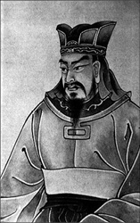
Sun Tzu, Bing-Fa (Savaş Sanatı) isimli eseriyle, kendisi büyük zaferler kazanmış bir komutan olamasa da, adını tarihe ‘komutanlar komutanı’ olarak yazdırmayı başarmıştı. M.Ö. 6. yüzyılda, askeri taktikler üzerine kaleme aldığı eseri, özellikle 20. yüzyılda yapılan kaliteli çevirileriyle, spordan ekonomiye kadar onlarca alanda referans kaynağı olarak kullanılmaya başlandı. Tzu, Savaş Sanatı isimli eserinde, planlama, savaş, saldırı, taktik konumlandırma, gücün kullanımı, zayıf ve güçlü noktalar, manevra, taktik değişiklikler, ordunun ilerlemesi, arazi, cephede dokuz konum, ateşli saldırı ve istihbarat isimli 13 başlık altında savaş sanatına dair 384 esası incelemişti.
M.Ö 290’lı yıllarda Çin’in Zhao bölgesinde yazmakta olan tarihçi Zhuang Zi, Tzu’nun teorilerinin, hem saldırı hem de savunmaya yönelik dövüş sanatı teknikleri ve hem silahlı hem de silahsız savaş teknikleri ile birleştirildiğini kaydeder. Özetle Tzu, Bing Fa ile bugün bizim Asya dövüş sanatları olarak bildiğimiz tekniklerin felsefi temelini atmıştır. Fransız misyoner Jean Joseph Marie Amiot, 1722’de Sun Tzu’nun kitabını Fransızcaya çevirerek (kitap ilk kez bir Avrupa diline tercüme ediliyordu) Art Militaire des Chinois ismini vermiş ve bu isim, daha sonra İngilizceye çevrilen kitaplara ‘Savaş Sanatı-The Art of War’ isminin verilmesinde etkili olmuştu.
Savaş Sanatı, tarihteki en önemli strateji referanslarından biri oldu ve zamanla eserin şöhreti, kendisi hakkında zaten çok az şey bilinen yazarı gölgede bıraktı. Çin edebiyatının en önemli eserlerinden biri olan ve Mao Zedong’dan Joseph Stalin’e, Napolyon’dan, General Douglas MacArthur’a kadar onlarca kudretli isme ilham kaynağı olan bu eserde ne anlatılıyordu?
Asırlara meydan okuyan kitap: Savaş Sanatı
Savaş Sanatı, her biri savaşın farklı bir yönünü anlatan 13 bölümden oluşur ve devrinin askerî stratejileri ve taktikleri üzerine temel başvuru kaynağı olarak kabul edilir. Aynı zamanda strateji üzerine yazılmış en ünlü ve en eski eserlerden biri olan Tzu’nun bu eseri, hem Doğu hem de Batı dünyasında askerî planlama, ticari hayat ve spor da dahil olmak üzere onlarca alanda karar alıcılara ilham kaynağı olmaya devam ediyor.
Bambu sopaları üzerine yazılmış orijinal versiyonu arkeologlar tarafından Nisan 1792’de bulunmadan önce Savaş Sanatı’nın en çok kullanılan versiyonu, Wei Krallığının kurucusu Cao Cao’nun ‘Annotation of Sun Tzu’s Strategies’ (Sun Tzu’nun Stratejilerinden Haşiyeler) idi. Bu eserin önsözünde Cao Cao, daha önceki haşiyelerin, kitabın önemli esaslarına odaklanmadığını yazıyordu.
Savaş Sanatı’ndan sıklıkla yapılan alıntılar, bugün modern Çin’de deyim ve atasözleri olarak kullanılıyor. Sözgelimi kitabın üçüncü bölümünden alınan şu madde gibi:
‘Eğer hem düşmanı ve hem kendinizi iyi biliyorsanız, yüzlerce savaşta yüzlerce kez kazanırsınız. Eğer kendinizi biliyor, düşmanı bilmiyorsanız; birini kazanır diğerini kaybedersiniz. Ne kendinizi ne de düşmanı biliyorsanız, her zaman kaybedersiniz.’
Savaş Sanatı, bugün birçok doğu Asya ülkesinde askeri okul sınavlarında adaylara sorulan soruların temelini teşkil ediyor. Hatta Japonya’da Sengoku dönemi sırasında Takeda Shingen (1521–1573) isimli bir daimyonun (Japon derebeyi) Savaş Sanatı’nı iyi kavradığı için girdiği bütün savaşları hiç silah kullanmaksızın galip bitirdiği bile söylenir. Öyle ki Tzu’nun eseri, Shingen’e kendi savaşçılık öğretisi olan Fūrinkazan’ı (Rüzgar, Orman, Ateş ve Dağ) oluşturmasında ilham vermişti. Bu felsefeye göre savaşçı, ‘rüzgâr gibi hızlı, orman gibi sessiz, ateş gibi insafsız ve dağ gibi sabit’ olmalıydı.
Tzu’nun idealleri, asırlarca Çinli ve Japon savaşçılara ilham kaynağı oldu. Eserinde silahlarla ilgili teknik bilgiler de aktaran Tzu’nun asıl vurgusu ise, strateji, istihbarat, karakter ve liderlik sanatı üzerine olmuştu. Özellikle bir komutanda olması gereken istihbarat toplama yeteneği ve yaratıcılık gibi değerler üzerine yaptığı yorumlar, ölümünün üzerinden asırlar geçmesine rağmen, başta askeriye olmak üzere, hayatın birçok alanındaki liderlere öncülük etmeye devam ediyor.
NOTLAR
- Sun Tzu, bugün kendisine en çok atıfta bulunulan Çinlidir.
- Brezilya Milli Futbol Takımı’nın eski çalıştırıcısı ve dünya futbolunun ünlü isimlerinden teknik adam Luiz Felipe Scolari, maç taktiklerini hazırlarken Sun Tzu’ya kulak veren isimlerden biriydi. 2002 Dünya Kupası’nı kazandırdığı Brezilya Milli Takımı oyuncularına kitabın bir kopyasını dağıttıran Scolari, 2006 Dünya Kupası’nda Portekiz’in teknik direktör olarak İngiltere’ye karşı kazandığı zaferi de kitaptan esinlendiği taktiklere bağlamıştı.
- Vietnam Savaşı sırasında Amerikalılara karşı savaşan Vietkong subayları, gerilla savaşıyla ilgili önermeleriyle öne çıkan Savaş Sanatı’nı başucu kitabı yapmışlardı.
- Amerikalı diplomat Henry Kissinger, birçok eserinde ve Beyaz Saray’da görevli olduğu yıllarda sıklıkla Sun Tzu’ya atıfta bulunmuştur.
Makedonya’dan yola çıktı tüm dünyayı fethe kalktı
BÜYÜK İSKENDER
(Alexander the Great)(M.Ö 356-323)
“Bir kuzunun komuta ettiği bir aslanlar ordusu beni korkutmaz. Ama aynı şeyi, bir aslan tarafından komuta edilen kuzu ordusu için söyleyemem…”
Büyük İskender
Şüphesiz ki hiçbir asker, 16 yaşında general, 20’sinde kral, 26’sında dünyanın en büyük imparatorluklarından birinin hakimi olan ve 33 gibi genç bir yaşta ölen İskender kadar bu kitapta yer almayı hak etmiyor desek, abartmış olmayız. İskender ya da tüm dünyada efsaneleşmiş ismiyle, Büyük İskender.
Büyük İskender, 11 yıl boyunca çoğunlukla sayı bakımından kendi ordusundan daha büyük güçlere karşı verdiği savaşlardan hiçbirini kaybetmedi. Bilinen dünyanın tamamını fethetmeye girişen ilk askeri lider olarak, daha önce hiç görülmemiş ve denenmemiş bir şey yaparak; piyadeleri, atlıları ve mühendisleri, istihbarat ve lojistik desteğiyle birleştirdi. Batıyı ve Doğuyu birleştirme çabalarıyla, fethettiği topraklara Yunan siyasetini, askeri ve ekonomik uygulamalarını götürerek dünyayı değiştirmeye soyundu. Kısmen başarılı da oldu.
İskender, M.Ö 356’da Kral Philip ve Kraliçe Olympias’ın çocuğu olarak dünyaya geldi. Kraliyet ailesinde doğmuş olmanın avantajlarını sonuna dek kullandı. Sadece ünlü filozof Aristo’dan özel dersler aldığını söylememiz bile, yetiştiği ortamı anlamamız açısından aydınlatıcı olacaktır. Çocukluğu babasının savaşçılarıyla geçti. Daha 16’sında kendisinden emir alan askerler vardı! İki yıl sonra M.Ö. 338’de kazanılan ve tüm Yunan Yarımadası’nın Makedonların eline geçmesini sağlayan Chaeronea Savaşı’nda babasının yanında, ordunun başındaki komutanlardan biri olarak kılıcından kan damlatmaya başlamıştı bile.
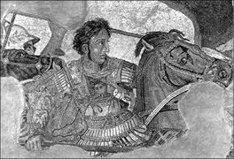
Napoli Müzesi’nde sergilenen ve İskender’i MÖ 333’deki İssus savaşında, sevgili atı Bucephalus üzerinde resmeden bu mozaik, Pompei’deki kazılarda bulundu. Savaşta ölen atını, adına bugün Pakistan sınırları içinde kalan bir şehir kurduracak kadar çok seviyordu.
Kral Philip, Pers İmparatorluğu’nu fethetmek amacıyla Küçük Asya’yı (Anadolu) işgal planları yaptığı sırada kendisine diş bileyen bir muhafızı tarafından öldürülünce, hem hayallerine hem de bu dünyaya veda etmek zorunda kaldı. Lakin hayalleri yetim kalmayacaktı. 20 yaşındaki İskender, babasının yerini aldı. Tabi bu arada babasını öldüren kişi başta olmak üzere, tüm muhaliflerini temizletmeyi de ihmal etmedi. Dünyayı fethe çıkmadan önce etrafında kendisine ayak bağı olacak kimse istemiyordu.
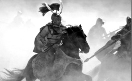
‘Nasıl gökyüzüne iki güneşe yer yoksa, bu dünyada da iki hükümdara yer yok’ diyerek tüm dünyayı fethe soyunan İskender, hiçbir zaman gece savaşmadı. Gündüzü tercih etmesinin sebebi, düşmanlarının, onları nasıl mağlup ettiğini görmesini istemesiydi.
En modern orduya komuta etti
İskender, tahtın yanı sıra çok iyi eğitilmiş ve disipline edilmiş; normal mızrakların iki kat uzunluğundaki sarissa’ları kullanan mızrakçıların etrafında organize olmuş deneyimli bir ordunun da tek varisi olmuştu. Sarissa birliklerini, hareket kabiliyeti yüksek hafif piyade birlikleri destekliyordu. Atlı süvariler, mızrakçılar tarafından düşman savunmasına açılan yarıklardan veya düşmanın nispeten daha savunmasız yan cephelerinden saldırıyordu.
İskender, daha cesedi soğumadan, babasının Küçük Asya hayalini hayata geçirmek için 30 bin mızrakçı, piyade ve mühendisle 6 bin atlı süvariden oluşan ordusunun başında geçti. İşgalin önündeki tek engel, Perslerin deniz gücüydü. Bu durum, üzerinde durmaya değmeyecek kadar küçük bir donanmaya sahip olan İskender’in gözünü korkutmadı. ‘Donanmaya karşı denizden savaşmak zorunda değiliz’ mantığıyla hareket eden Makedonyalı, Pers limanlarına karadan saldırarak ve düşman donanmalarının destek üslerini yok ederek bu dezavantajını dengelemeye çalıştı.

İskender, normal mızrakların iki kat uzunluğundaki sarissaları kullanan mızrakçıların etrafında organize olan deneyimli ordusuyla, hiçbir savaşı kaybetmedi. Atlı süvariler, mızrakçılar tarafından düşman savunmasına açılan yarıklardan veya nispeten daha zayıf olan kanatlardan saldırıyor, kısa zamanda düşmanı göçertiyordu. İskender ile birlikte, savaşlarda strateji önemli bir rol oynamaya başladı.
İskender, Akdeniz boyunca Anadolu’daki ilerleyişini sürdürdü. M.Ö 334’te Granicus nehrine ulaşana kadar çok az direnişle karşılaşmıştı. Burada ilk kez Perslerle karşı karşıya geldi. Asker sayısı açısından üstün olan İskender, yine de hiç fark edilmeden nehri geçti ve sürpriz bir saldırı gerçekleştirdi. Sadece birkaç yüz asker kaybıyla kısa sürede zafer kazandı. Ordusuyla birlikte, güneye doğru, bugün Suriye’nin kuzeydoğusunda bulunan Issuz’a kadar herhangi bir engelle karşılaşmaksızın yoluna devam etti. Burada Kral III. Darius’un komutasındaki, kendi ordusundan üç kat daha büyük olan ana Pers ordusuyla karşılaştı. (Bazı kaynaklar Darius’un ordusunun 10 kat daha büyük olduğunu söyler.) Genç Makedonyalı, alışılageldiği üzere hücum emrini vermekte gecikmedi. İskender’in yaya mızrakçıları, başlangıçta sayıca üstün olan Pers ordusunun savunmasını yaramadığı gibi, atlı süvarilerin cephelerden yaptığı saldırılar da başarısız oldu. Askerlerinin morali kırılmaya başlamıştı ki, İskender, adeta intihar komandosu gibi, askerlerinin başına geçerek, doğrudan Darius’u hedef alan bir sadırı başlattı. Pers kralının önünde yer alan savunma hattı, daha güçlü olan Makedonyalı süvariler karşısında tutunamadı. Darius ve askerleri öyle hızlı kaçtı ki kralın annesi, karısı ve hatta çocukları savaş meydanında kaldı. Daha önceki seferlerinde teslim olmayan tüm köylerin ahalisini kılıçtan geçiren İskender, burada farklı bir siyaset uygulayarak, düşmanı kazanma yoluna gitti. Esir alınan kraliyet ailesi üyelerine statülerine göre davranılmasını emretti. Esir düşen Pers askerlerine ve paralı askerlere de idam edilmek yerine taraf değiştirme fırsatı verdi. Darius’a gelince. Bir daha yolları hiç kesişmedi. Zira, kimi kaynaklara göre Pers Kralı, Bessus isimli bir adamı tarafından öldürülmüştü. İskender, Bessus’u yakalatarak çarmıha gerdirdi. Düşmanını ancak kendisi öldürebilirdi, bir başkası değil.
Kendisini tanrı olarak görmeye başladı
Ertesi yıl İskender, bugün Lübnan’ın güneyinde, Akdeniz kıyılarında bulunan liman kenti Tyre’ya 7 ay süren bir kuşatma gerçekleştirdi. Şehir düşünce Gazze’yi ele geçirmek için güneye doğru hareket etti ve Mısır’ı işgal etti. M.Ö. 332’nin sonlarına doğru Nil nehrinin ağzında, kendi adını yaşatacak İskenderiye’yi kurdu. Kent bir anda Yunan dünyasının ticaret, bilim ve edebiyat merkezi oldu. Öte yandan kazandığı zaferlerle doğasındaki megalomani harekete geçen genç kumandan, Tanrı Ammon’a ithaf edilen büyük Mısır tapınaklarını ziyaret ettikten sonra ilahi köklere sahip olduğunu iddia etmeye başlamıştı. Bu arada tapınağın can derdine düşmüş rahiplerinin, “Zeus ve Ammon aynı tanrı. Sen de Ammon’un oğlusun, sen de tanrısın!” şeklindeki söylemleri, İskender’deki bu ruhsal dönüşümü daha da şiddetlendirdi. Öyle ya, kendisinden sayıcı üstün orduları defalarca yenmiş, dünyanın en önemli savunma hatlarından biri olan Tyre gibi şehirleri fethetmiş, defalarca ölümden kurtulmuş ve iki yıl içinde Pers İmparatorluğu’nun büyük bir bölümünü ele geçirmişti. Bunları bir tanrıdan başka kim yapabilirdi ki! Zaten en şiddetli savaşlarda gösterdiği cesaret ve sergilediği liderlikten dolayı kendisine aşırı hayranlık besleyen askerleri, İskender’in ‘kutsanmış’ olduğunu kabul etmekte çok zorlanmayacaktı.
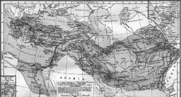
Makedonların bu yenilmez lideri 33 yaşında, sıtma olduğu tahmin edilen bir hastalıktan dolayı ya da kimilerine göre her büyük imparator ya da kralın ardından iddia edildiği üzere zehirlenerek öldüğünde, ardında sınırları bugünkü Yunanistan’dan Himalayalara kadar ulaşan devasa bir imparatorluk bırakıyordu.
Makedonyalı, M.Ö. 331 ile birlikte dünyayı fetih seferine yeniden başlayarak Dicle ve Fırat nehirlerini geçti. 1 Ekimde (ay tutulmasına göre bu tarih doğrulanmıştır) İskender, bir kez daha kendisinden sayıca üstün olan Pers ordusunu yendi. Yorgun askerleri, Perslerin başkenti Persopolis’te soluklanmaya, yorgun olmayanlarıysa kraliyet hazinesini yağmalamaya başlamıştı.
M.Ö. 330’un sonlarına doğru önüne geçilemeyen Makedon, bütün Anadolu’yu ve Pers topraklarını kontrol ediyordu. Beş yıldan kısa bir sürede dünyanın en büyük imparatorluğunu kurmuştu. Her ne kadar babasının bütün hayallerini gerçekleştirmiş olsa da bunlar İskender’i tatmin etmedi. Takip eden 3 yıl içerisinde Afganistan, Orta Asya ve Hindistan’ın kuzeyini fethetti. Bu seferler sırasında, Hindistan Kralı Porus’un 2 binden fazla fille desteklenmiş ordusunu tarumar ettiği kanlı Hydaspes Nehri Savaşı da dahil olmak üzere İskender, hiçbir savaşı kaybetmedi.
Savaş stratejileri onunla başladı
İskender’den önce genel bir savaş planı üzerinde çalışmak ya da özel stratejiler geliştirmek gibi kavramlar bilinmiyordu. Cephe taktikleri henüz gelişmemişti. Kural basitti: Sayıca üstün ve iyi silahlanmış olan, savaşı kazanırdı. Makedon lider, düşmanı kuşatmaya dönük manevralar geliştirdi ve yaya birlikleriyle atlı süvarileri koordine etti. Stratejilerine deniz kuvvetlerini de dâhil etti. Savaş gemileri tasarlatarak asırlarca deniz savaşlarında önemli bir güç olacak silahlı kadırgaların ortaya çıkmasını sağladı. İskender’den önce savaşlar, bir sokak kavgasına benziyordu; İskender’den sonraysa büyük, ama provası yapılmamış bir oyuna dönüştü.
İskender, Porus’u yenmesinin ardından seferlerine devam etmek istiyordu; ancak ordusu 8 yıldır devam eden savaşlardan bitap düşmüştü. Kurmaylarının çoğu da eve dönme taraftarıydı. Genç kral sonunda genel eğilime kulak verdi. Makedonya’ya doğru dönüşe geçen büyük fatih, fethettiği toprakların yönetimini kendi subaylarına ve güvenini kazanmış eski düşmanlarına bıraktı. Esir alınan Pers askerleri Makedon taktiklerine göre eğitilerek, Makedon ordusuna dahil edildi. Batıyı ve doğuyu birbirine bağlayan diğer bir etken olarak İskender, yaklaşık 10 bin askerini Persli kadınlarla evlendirmişti. Kendisi de böyle bir evlilik yapanlar arasındaydı.
Makedonların lideri evine asla varamadı. İlahlık iddialarına rağmen yolda hasta olması, kendisinin de ölümlü bir fani olduğunu net bir şekilde ona hatırlatmıştı. M.Ö. 323’te, 33 yaşındayken, sıtma olduğundan şüphelenilen bir hastalıktan dolayı bu hayata veda etti. Muhtemelen hiçbir zaman ölmeyeceğine kendisini şartlandıran İskender, yerine ne birini getirmiş ne de veliaht tayin etmişti. Tek vasiyeti, imparatorluğunun ‘en güçlü olanın ellerine kalması’ şeklindeydi. Ancak hiç kimse İskender’in gücüne sahip değildi. Ölümünün ardından bir yıl içerisinde imparatorluğu ve ordusu parçalara ayrılarak, ihtişamını kaybetmeye başladı.
Makedon kral, teşkilatlandırmadaki yeteneği, stratejik ve taktiksel açıdan getirdiği yenilikler ve kişisel cesaretiyle dünyayı değiştiren asker liderler arasındaki haklı yerini almıştı. Batı ve Doğu arasında ilişki kurmada ve Yunan medeniyetini geniş topraklara yaymada başarılı olmuş, bu arada birer ticaret ve kültür merkezi olan 70’den fazla şehir kurmuştu. Kendi geliştirdiği saldırı ve kuşatma taktikleri, gelecek asırlar için model olmasının yanı sıra, askeri taktikleri, hem Romalılar hem de daha sonra Napolyon tarafından kurulan imparatorluklar için standart oluşturacaktı.
NOTLAR
- Genç yaşta (ya da ölümünden kısa süre önce), sarhoşken, yakın arkadaşlarından Clitus’u öldürdüğü iddia edilir.
- Daha çocuk yaşta, tarihin en önde gelen filozoflarından Aristo’dan dersler aldı.
- Homer’in Truva savaşlarını destansı bir şekilde dile getirdiği İlyada isimli eserindeki savaş tasvirlerinden ilham aldığı için eserin bir kopyasını sürekli yanında bulundururdu.
- Mısır’ın Thebes şehrine saldırdığında, tapınaklar ve şair Pindar’ın evi hariç tüm binaların yıkılmasını emretmişti. Zira Pindar şiirlerinden birinde Büyük İskender’in dedesine övgüler yağdırıyordu.
- Ömrü boyunca, en başta geleni Mısır’ın İskenderiye’si olmak üzere, kendi adıyla anılan 70’den fazla şehir kurdurdu. Türkiye’deki İskender’un bunlardan biridir.
- Çocukluğu boyunca yanından ayırmadığı ve üzerinde birçok savaş kazandığı sevgili atı Bucephalus, Hint Racası Porus ile yaptığı savaşta ölünce, atın öldüğü yerde onun adına bir şehir kurdurdu. Bugün bu şehrin Pakistan’ın Jhelum şehri olduğuna ya da onun yakınlarında bir yerde kurulmuş olduğuna inanılır.
- Üç eşi vardı: Roane, Statiera ve Parysatis. Biri, metresi Barsine’den olan Herakles, diğeri eşi Roane’den olan Aleander IV olmak üzere iki de çocuğu oldu. Her ikisi de genç yaşta öldürüldü.
- Bir efsaneye göre İskender, bugünkü Eskişehir yakınlarında bulunan Gordium’da, bir kılıç darbesiyle, Kral Midas tarafından atılan Gordiyum düğümünü çözmeyi başarmıştı. Buna göre düğümü çözen, tüm Asya’ya hakim olacaktı.
- Pragmatik bir liderdi. Gerektiği zaman tüm muhalefeti ezip geçerken, kimi zaman da, kendi ihtiyaçlarına hizmet edecek şekilde, muhalefetin ve düşmanlarının kendi kontrolü altında yaşamasına izin verdi.
- Antik Yunan’ın ‘İnsanlar ikiye ayrılır: Yunanlılar ve barbarlar’ şeklindeki inancının aksine, ölümünden kısa süre önce, döktüğü tüm kana rağmen, ‘Tüm insanlar kardeştir, tek bir büyük krallık altında uyum içinde yaşamalıdır’ demişti.
Roma’nın belalısı Kartacalı General
HANNIBAL
(M.Ö 247-183)
“Ya bir yol bulacağız,
ya bir yol yapacağız.”
Hannibal
Günümüzde savaş taktikleri askeri akademilerde okutulan Kartacalı komutan Hannibal, Filler üzerinde dağları aşarak Romalılar’ı dize getirmiş, adını tarihin en önemli askerleri arasına yazdırmıştı. Savaş meydanlarında aklındakileri hayata geçirebilmesi sonucu genellikle ‘askerî stratejinin babası’ olarak da anılan Hannibal, yenilikçi süvari taktikleri sayesinde Roma’ya karşı 15 yıl boyunca akıl almaz bir mücadele verebilmişti.
Bu büyük kumandan hakkındaki ilk bilgiler, düşmanlarından nefret ettikleri kadar saygıyla karışık bir korku da besleyen Romalılara ait yazmalardan elde edilmişti. Bununla birlikte hiç şüphe yok ki Roma İmparatorluğu’na karşı bir güç birliği oluşturmak için tüm batıyı kapsayan etkinliği, kurduğu casus ağı ve askeri gücün yanı sıra diplomasiyi de ustalıkla kullanması ne kadar ileri görüşlü olduğunu kanıtlıyordu. Hanibal, Roma emperyalizmine karşı büyük bir inatla mücadele eden dehasına yaraşır düzeyde, diğer kültürlerle kendini donatmış olması ve birçok yabancı dili anadili gibi bilmesiyle de ilginç bir kişilikti. Ama onu unutulmaz kılan, kış koşullarında 100 bin asker ve 37 fil ile Pireneler ve Alpler’i aşarken, ordusunun yarısını kaybetmesine rağmen, muzaffer Romalıları üç büyük savaşta da yenme başarısını göstermesiydi.
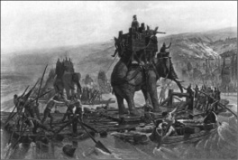
Yüz bin asker ve otuz yedi fille yola çıkan Hannibal, Pireneler’i ve Alpler’i aşarken, daha Romalılar ile karşılaşmadan ordusunun yarısını kaybetmesine rağmen, Ticino, Trebbia, Trasimeno ve Cannae’de düşmanı bozguna uğratmayı başarmıştı. Üstelik bu savaşların yarısında bir gözü de görmüyordu.
Kartaca, Akdeniz’in en müreffeh sahillerinden biri haline gelmiş ve zengin bölgelere sahip olmuş ancak Romalılarla yapılan Birinci Pön (Punic) Savaşı’nda (M.Ö 264-241) çok fazla kayıp vermişti. Roma, zaferine karşılık Kartaca’nın en önemli eyaletini; Sicilya’yı ele geçirmiş, Kartaca’da patlak veren iç savaşın ardından Sardunya ve Korsika’yı da almıştı. Hannibal bugün Kuzey Afrika’daki Tunus’un kuzeydoğusuna bulunan Kartaca’da M.Ö 247’de doğduktan sonra bir asilzade olan babası Hamilcar Barca’dan eğitim almış, Birinci Punic Savaşı’nda Romalılarla savaşmak için İspanya’ya giden babasına eşlik etmişti. Başarısız olunan bu savaşın ardından Hannibal, babasına Roma’dan sonsuza dek nefret edeceğine dair söz verdi. O andan itibaren hayatını, dünyanın bu en güçlü imparatorluğuyla savaşmaya adayacaktı.
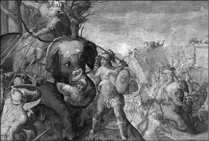
Hannibal’ın hilal şeklinde dizilmiş ordusu, Romalıların elit askerlerinin merkezden baskısıyla geri çekildi; Romalılar ilerledikçe Kartaca ordusu kanatlardan Roma ordusunu sararak çember içine aldı. Romalı askerlerin arkasından Kartaca süvarileri saldırdı. Düşman hatlarını yaramayan ve arada kalan Romalılar yok edildi. Bu, o dönem için oldukça yeni bir savaş taktiği idi.
M.Ö. 221’de, o sırada 20’li yaşlarının ortalarındaki Hannibal’a, öfkesini eyleme dönüştürebileceği bir fırsat doğacaktı. Kayınbiraderinin ölümüyle İber yarımadasındaki askeri güçlerin kumandasını devraldı. İki yıl içinde Kartaca’nın Roma ile yaptığı anlaşmaları çiğneyip geçerek bütün İspanya’yı fethetti. Romalılar, üzerlerine gelen bu öfke dalgasını fark etmekte gecikmeyecekti. Kartaca’ya ultimatom verildi:
“Ya Hannibal’ı teslim edersiniz, ya da gelir biz alırız!”
Tabiî ki Kartaca, küstahça bulduğu bu ikaza kulaklarını tıkadı. Öfkelenen Roma, M.Ö. 218’de savaş ilan etti. İkinci Pön Savaşı başlamıştı.
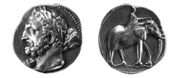
Hannibal, Romalılara yenildikten sonra Girit’e ardından da Romalılara karşı ayaklandırmaya çalıştığı Bithynia Kralı Prusias’ın yanına gitmişti. Prusias onu Romalılara teslim etmeye kalkışınca kendisini zehirledi. Kartacalılar bu büyük askerin anısına sikke bastırmakta gecikmeyecekti.
Siz gelmeyin biz savaşı Roma’ya getiririz!
Romalıların taktiklerine cevap vermek yerine Hannibal, savaşı doğrudan Roma’ya taşımaya karar verdi. “En iyi savunma hücumdur” ilkesine inanıyordu. M.Ö. 219’un Eylül ayında Alp dağlarını geçmek için 50 bin kişiden ve 40 filden oluşan bir ordunun başındaydı. Kötü hava şartlarından ve dağlarda yaşayan kabilelerin saldırılarından dolayı yaşanan kayıplara rağmen Kartacalı, destansı 15 günlük yürüyüşünü tamamlamış, Romalıların karşısına dikilmişti. Daha iyi eğitilmiş ordusu, hazırlıksız olan Roma askerlerini Trebia ve Ticinus Savaşları’nda bozguna uğrattı. İtalya’nın kuzeyi artık Hannibal’dan sorulacaktı.
Kuzey İtalya’nın yerlileri ve aynı zamanda Romalıların geleneksel düşmanları olan Galyalıları da ordusuna katan Hannibal, güneye doğru ilerlemeye başladı. M.Ö. 217’de Roma Konsül’ü Gaius Glaminus’u Trasimeno Gölü yakınında yenilgiye uğrattı ve çok verimli bir yer olan Campania bölgesini harabeye çevirdi. Hannibal ve Kartacalılar, ertesi yıl, Romalıların çok da etkili olmayan bölgesel direnişi bir kenara bırakılırsa, Aufidus nehrindeki Cannae’ye ulaşana kadar, ciddi bir güçle karşılaşmadı. Hannibal burada bir kez daha Romalılara saldırdı. Üstün durumdaki süvarilerinin manevra kabiliyetinin verdiği avantajla doğrudan Roma savunmasının merkezini hedef aldı ve buradaki askerlerin büyük kısmını yok etti. Elli binden fazla Romalı, kendi askerlerinden 7 binden daha azını kaybetmiş Hannibal’ın eline esir düşmüştü.
Hannibal şimdi hem Napoli hem de Roma’ya doğru ilerleyebilirdi; ancak Roma’nın firar eden müttefikleri ile birleşme planı gerçekleşmedi. Öte yandan Kartaca’dan talep ettiği destek siyasetçilerin kıskançlıklardan dolayı cevapsız kalmıştı. Bu zorluklara rağmen ilerlemeye devam etti. Eğer kuşatmaya elverişli silahları ve yeterli adamı olsaydı başarılı da olabilirdi. Buna karşın savaş meydanında Romalılara karşı galip gelmeye devam etti; ancak M.Ö. 215 ve M.Ö. 211 yıllarında saldırdığı başlıca Roma kentleri, Kartaca güçlerini geri püskürtmeyi başaracaktı.
Kardeşinin kellesi gönderildi
Kartaca’dan gelecek takviyeyi garantiye alamayan Hannibal, İspanya’daki Kartaca ordusunun kumandanı olan küçük kardeşi Hasdrubal’dan yardım istedi. Ancak Romalılar bu sefer Alpler üzerinden gelecek Kartaca saldırısına hazırlıklıydılar. Hasdrubal ise Romalı kumandan (Sonradan Roma’yı ateşe verdirmesi ile ünlenecek olan) Cladius Nero’nun ordusu ile çarpışıyordu. M.Ö. 207’de Metaurus nehrinde Nero tarafından bozguna uğrayan küçük kardeşin kellesi, Romalıların zafer işareti olarak, Hannibal’a gönderilecekti…
Hannibal’ın destek umudu yok olmasına rağmen, inadı tükenmemişti. Savaşmaya devam etti. Romalılar kendisini İtalya’nın güneyinde öldürmeye çalıştılar; Kartacalı General, İtalya’nın ‘topuğunda’ bir çeşit gerilla savaşı yürütmeye başladı. Ancak geride bıraktığı düşmana gereken hassasiyeti göstermemişti. Nitekim Alp dağlarını geçer geçmez yendiği Romalı generalin oğlu Scipio 204’de Kartaca’yı işgal edince, Hannibal topraklarını savunmak üzere İtalya’dan çekilmek zorunda kaldı. Bu kez ezeli düşmanı Romalılar savaşı onun kapısına getirmişti.
Hannibal, işgalci Roma askerleriyle karşılaşmak üzere, özünü İtalya’daki on beş yıllık seferinden emekli olmuş askerlerin oluşturduğu elli bin kişilik yeni bir ordu kurdu. Scipio ve Hannibal, 202’de Zama Savaşı’nda (Aynı zamanda Naraggara Savaşı olarak da bilinir.) karşı karşıya geldi. Zaferlerinin büyük kısmına süvarilerinin avantajı sayesinde ulaşan Hannibal, bu kez aynı silahı daha isabetli kullanan ve sayıca üstün olan düşman tarafından yenildi. Kartacalıyı Afrika topraklarında mağlup eden Scipio ‘Africanus’ unvanını kazandı.
Teslim olmaktansa intiharı seçti
Her ne kadar Kartaca ve Roma 201’de barış anlaşması imzalamış olsa da Hannibal, mücadeleyi yeniden başlatmak için hem hükümet hem de ordu içinde kulis yapmaya başladı. Roma’dakiler faaliyetlerinden şüphelenmiş, Kartacalılarsa barışın bozulma ihtimalinden dolayı huzursuz olmuştu. Kartaca, 196’da Roma’nın ısrarları üzerine Hannibal’ı Suriye’ye sürgüne göndermek zorunda kaldı. Ama Roma’nın yeminli düşmanı burada da boş durmayacaktı. Küçük Asya’nın (Anadolu) kuzeyindeki Bithynia’ya (Bugünkü Bolu, Kastamonu, Bursa ve Zonguldak illerinin bulunduğu coğrafi alanın antik çağ ve sonrasındaki adı) kaçmadan önce Suriye’de Roma’ya karşı başarısız bir ayaklanma girişimine ön ayak olmaya çalıştı. Ardından 183’te veya muhtemelen bir yıl sonra, Anadolu topraklarında Romalılara yakalanmak üzereyken zehir içerek intihar etmeyi tercih etti. Öldüğünde yetmiş yaşındaydı.
Roma kayıtlarına göre Hannibal, ölmeden hemen önce “Romalıları daha fazla sinirlendirmeyelim çünkü yaşlı bir adamın ölümünü beklemenin çok uzun olacağını düşünüyorlar.” demişti.
Birbiri ardına gelen zaferlerinden daha ziyade ordusunu ve fillerini Alp dağlarından geçirmesiyle ünlenen Hannibal, Kartaca’nın yetiştirdiği en büyük askerdi. On beş yıl süren seferi sırasında uzaktaki toprakları başarıyla idare etmesi, elde ettiği ganimetleri adil olarak dağıtması ve taktik anlayışı sayesinde hayatta kalmayı başararak, efsane bir kumandan olarak anılmayı hak etmişti. Askerleriyle birlikte bütün zorluklara ve tehlikelere beraber göğüs germiş, hatta 217 yılının soğuk kışında bir kamp sırasında yakalandığı enfeksiyon sonucu gözlerinden birini kaybetmişti. Romalı vakanüvisler Hannibal’ın liderliğini “Yapamayacağı veya yapmayacağı işler için hiçbir zaman başkalarına ihtiyaç duymadı.” şeklinde kayda geçirmişti.
Her ne kadar ünü ülkesinin sınırlarının dışına taşmış ve hayatı hakkında anlatılan abartılı hikâyeler onu bütün askeri liderlerin en büyüğü olarak tasvir etmişse de kimi askeri tarihçilere göre Hannibal bu tür övgüleri hak etmiyor. Manevralarında cesur, komut verirken korkusuz ve süvari taktiklerini hayata geçirirken zekiydi, doğru. Ama kimilerine göre Scipio birçok açıdan daha iyi bir kumandandı ve bunu da kanıtlamıştı. Ancak yine de hikâyesi sadece düşmanları tarafından kayıt altına alınan Hannibal, adı büyük zaferlerle ve cesaretle eşdeğer görülen bir asker olarak tarihe geçmeyi başarmıştı.
M.Ö 3. ve 2. yüzyılın Akdeniz dünyası, bir tür birliğe dönüşüm sürecinde idi. M.Ö 4. ve 3. yüzyıllarda bölünmüş olan bölge, hem kültürel hem de siyasi açıdan kendisini yeniden yapılandırıyordu. Büyük ve tek bir Akdeniz İmparatorluğu’nun oluşması kaçınılmazdı ve İkinci Pön Savaşı, doğacak bu imparatorluğun bir Roma mı yoksa Kartaca dünyası mı olacağını belirlemişti. Hannibal’ın ölümünün ardından Roma altı asır boyunca hiçbir ciddi meydan okumayla karşılaşmadı.
NOTLAR
- Kartaca, M.Ö 814 yılında, Filistin topraklarında bulunan Tire (Sur) kentinden gelen Fenikeli tüccarlar tarafından Tunus yarımadasında kurulmuş bir Fenike kolonisidir. Kartaca, Fenike dilinde ‘Yeni Şehir’ anlamına gelir.
- Kartacalılar hayatına dair kayıt tutmadığı için, bugün Hannibal’a dair bilinenlerin çoğu Roma kaynaklarına dayanır.
- Kartacalılar, Hannibal’ın Alpleri geçişini kutlamak için bir yüzünde onun diğer yüzünde de bir filin olduğu sikkeler bastırmıştı.
- Yüz bin askerle çıktığı İtalya seferindeki ilk savaşın sonunda Hannibal’ın sadece 26 bin askeri ve tek bir fili kalmıştı. O filin üzerinde de kendisi vardı.
- Roma’ya saldırmayınca generallerinden biri kendisine, “Savaşmayı biliyorsunuz, ama kazanmayı bilmiyorsunuz.” demişti.
- Zama Savaşı’nda Romalılar, trompetler çalarak Hannibal’ın 80 savaş filini şaşırtarak, ordunun koordinasyonunu bozdu.
- Kendini zehirlediği yer olan Libyssa, günümüzün Gebze’sidir. İntiharının ardından burayı bizzat Romalılar da ziyaret etmiş, hatta Roma imparatoru Septimius Severus’un Hannibal adına yaptırdığı anıt 11. yüzyıla kadar ayakta kalmıştı.
Roma’nın muzaffer komutanı dünyayı fethe çıkıyor
JÜL SEZAR
(M.Ö 100-44)
“İhaneti severim ama hainlerden nefret ederim”
Sezar
Roma İmparatorluğu’nun köle ekonomisi üzerinde yükseldiği bir dönemde, M.Ö. 81’de, iktidarda acımasızlığı ile tanınan zalim diktatör ve başarılı bir asker Lucius Cornelius Sulla vardı. İktidara gelir gelmez kendisinden önceki konsül Gaius Marius’un tüm liberal düzenlemelerini çöpe atmış, demir yumruğunu meclisin ve senatonun üzerinden eksik etmemişti. Sadece onun borusu ötüyordu artık. Öldüğünde geride iki güçlü halef bırakmıştı. Komutanları Gaius Pompeius (Pompey olarak da bilinir) ve Marcus Licinius Crassus. Ancak konsüllüğü devralan bu ikiliye daha sonradan katılacak bir üçüncü isim, Jül Sezar (Gaius Julius Caesar), Roma’ya en şaşalı dönemini yaşatacaktı.
Büyük bir asker, devlet adamı ve imparator olarak adını tarihe yazdıran Sezar, fetihleriyle beş yüz yıldan fazla süre Roma İmparatorluğu’nun güven içinde yaşamasını sağlamış, Roma dilini, yasalarını ve hukukunu Avrupa’ya yaymıştı.
Siyasi kariyeri tetikleyen askeri karizma
Tartışmalı bir tarih olsa da M.Ö. 12 Temmuz 100’deki doğumunun ardından Sezar, yetişkinliğinin ilk yıllarında siyasetle haşır neşir oldu. Soylu olmasa da köklü bir aileye mensup olmanın avantajlarını karizması ve yöneticilik kabiliyetleriyle harmanlayacak ve Roma’nın kaderindeki en etkin isim olarak aradan sıyrılacaktı. Zaten Sulla da yolun başında Sezar’ın siyasi ihtirasını fark ettiği için kendisini Asya’ya sürmüştü. Onun ölümüyle Roma’ya dönen Sezar, politikaya atılmakta gecikmedi. Halk meclisine dayanarak iktidara gelmek istiyordu. Maliye ve belediyede aldığı görevlerin ve konsül yardımcısı olarak görev yapmasının ardından, İspanya valiliğine atandı. İspanya’yı başarıyla yöneterek kazandığı itibarla Roma’ya dönen Sezar, Roma sokaklarında kendisi adına zafer yürüyüşü yapılmasını talep etti. Sezar’ın halkın gözündeki kredisinden rahatsız olan senato, bu talebi geri çevirdi. Usta asker, burada akıllıca davranarak arkasındaki gücü kullandı ve Crassus ve Pompeius ile anlaşarak, iktidara yamandı. Bu arada Pompeius’un akrabası Pompeia ile bir mantık evliliği yapmış, güç yelpazesindeki rakiplerinden biri ile akrabalık kurmuştu. Sezar M.Ö. 59’da Pompeius ve Crassus ile birlikte Birinci Üçlü Yönetimi hayata geçirmiş; her biri, hükümetin farklı organlarının idaresini ve imparatorluğun farklı bölgelerinin kontrolünü üstlenmişti.
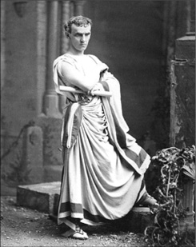
Yaşamı boyunca gücün peşinde koşan Sezar, daha genç yaşta gözünü siyasete dikmişti. Politik arenadaki yükselişinin kapılarınıysa askeri alanda elde edeceği zaferler açacaktı.
Sezar’a düşen bölümde Cisalpine Gaul/Galya (Kuzey İtalya) Narbonese Gaul/Galya (Güney Fransa sahilleri) ve Illyricum (Adriyatik boyunca Slav toprakları) bulunuyordu. Sezar’ın sorumlulukları arasında 20 bin askeri olan dört Roma bölgesi daha vardı. Sezar bu askerleri hemen yeni topraklar kazanmak ve savunmaya yönelik tampon bölgeler oluşturmak için kullandı. Takip eden 7 yıl boyunca Sezar askerleriyle birlikte, bugünkü Fransa ve Belçika toprakları ile Hollanda, İsviçre ve Almanya’nın bazı bölümlerinden oluşan Galya topraklarının kalanını fethetmek için seferlere çıktı. Roma’nın sahip olmak istediği toprakların ucu bucağı yoktu ama Sezar düşmanlarını aynı anda değil, sırasıyla yok edebileceğinin farkındaydı. Romalının taktikleri çok basitti ve yenilikçi bir unsur içermiyordu. Yeni fikirler üretmek yerine, lejyonlarının savaşma gücünü ve bu askerleri motive etmeye yönelik kendi kişisel becerisini temel alıyordu. Şöyle ki Sezar, Commentaries on Gallic War isimli eserinde kendi liderlik özelliklerini, sanki üçüncü bir kişiden bahseder gibi, şöyle anlatıyordu:
‘Durum çok kritikti ve geri dönüş yoktu, Sezar artçı kuvvetlerden bir askeri kendine kalkan yaparak en ön cepheye kadar ilerledi. Her bir centurion’1a ismiyle hitap etti ve diğer askerlerini de bağırarak cesaretlendirdi. İlerlemelerini ve düşman saflarını yararak kılıçlarını daha kolay kullanabilecekleri bir ortam oluşturmalarını emretti. Sezar’ın ön saflara kadar gelişi, askerlere umut vermiş, cesaret aşılamıştı. Her asker, tüm tehlikeye rağmen elinden gelenin en iyisini yapmaya çalışıyordu...’
Sezar daha sonra gözünü Almanya’nın geri kalanına çevirdi. Adeta gövde gösterisi yaparak ve Almanların kaybettikleri toprakları geri almak konusundaki ümitlerini kırarak, Ren nehrini geçti. Roma askerlerinin atları, Kuzey Denizi kıyılarında soluklanır olmuştu. Almanya, artık Sezar’ındı. Sırada suyun öte yanı vardı. Büyük kumandan, 800 gemilik devasa bir filoyla, M.Ö 56’da İngiliz Kanalı’nı geçerek İngiltere içlerine doğru ilerlemeye başladı. Sezar’ın İngiliz topraklarını çiğnemesinden yaklaşık 2 bin yıl sonra patlak verecek II. Dünya Savaşı’nın en hararetli anlarına kadar, İngiliz Kanalı’nda bu büyüklükte bir armada toplanmayacaktı. Sezar’ın bu hamlesi, adanın topyekün işgaliyle sonuçlanmasa da, bir asır sonra Roma İmparatorluğu’nun bir eyaleti olmasının temelleri atılmış oluyordu. Üstelik Romalılar, İngiltere hakkında neredeyse hiçbir şey bilmiyorlardı. Onların gözünde Sezar, ‘Bilinmeyen diyarlarda zafer kovalayan’ bir kahramandı artık. Öte yandan Sezar, Galya’nın fethi ile uğraşırken, üçlünün ayaklarından biri olan Krassus, Suriye’ye gitmiş, Partlarla yaptığı savaşta ölmüş, Pompeius ise Roma’da kalarak, ülke yönetimindeki bir numaralı isim olmuştu. Ama mutlak iktidar olması için önünde bir engel daha vardı: Ele geçirdiği topraklarla birlikte şöhreti ve etkisi de büyüyen Sezar.
Roma’da zaten tavan yapmış olan ününe ün katan Romalı muzaffer, Pompeius’un yanı sıra Senatoyu da, tüm gücü elinde toplamak isteyebileceği gerekçesiyle endişelendiriyordu.
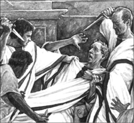
Aralarında bizzat kendisinin affıyla hayatta kalan Cassius ve ‘manevi oğlum’ dediği Brütüs’ün de olduğu senato üyeleri tarafından ortadan kaldırıldığında, dünyayı fetih planları doğrultusunda, doğuya doğru yeni bir sefere çıkmaya hazırlanıyordu. Vücuduna aldığı 23 bıçak darbesi, hem kendisini hem de hayallerini kanlar içinde bırakmıştı.
M.Ö 49’da Senato, Sezar’a, sıradan bir vatandaş gibi başkente dönmesini emretti. O, bu çağrılara kulak kabartacak biri değildi. Nitekim askerlerini önüne katarak Rubicon nehrini geçmiş ve muhalefete karşı bir iç savaşa girişmişti. Daha iyi eğitilmiş ve savaş tecrübesi yüksek ordusuyla İtalyan yarımadasını 66 günde temizledi. Hem Pompeius’u hem de Senatoyu sürgüne gönderdi. Lakin bununla yetinmeyecekti. Pompeius’un peşine düşecek, ordusunu İspanya’ya kadar izleyecek ve İlerda Savaşı’nda bozguna uğratacaktı. Ancak ordunun büyük kısmı ve Pompeius, canını kurtarmayı başarmıştı. Lakin Sezar can düşmanının peşini bırakmaya niyetli değildi.
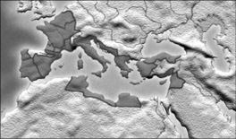
Sezar öldüğünde Roma İmparatorluğu’nun sınırları günümüz Türkiye’siyle Ortadoğu’nun bir kısmını, nerdeyse bütün Avrupa’yı ve yine Afrika’nın bir bölümünü içine alıyordu.
Veni, Vidi, Vici
Makedonya’ya kadar kovaladığı Pompeius’la bu kez M.Ö 48’de Pharsalus Savaşı’nda karşı karşıya gelecekti. Sayıca iki kat daha büyük bir orduya sahip yenilmez Romalı, ilk önce bir süvari birliğini bozguna uğratmış, ardından düşmanı tamamen yok etmek için karşı saldırıya geçmiş ve bu saldırıyı bizzat yönetmişti. Ortalık yatışıp, kılıç sesleri yerini ölüm sessizliğine bıraktığında, Pompeius’un 6 bin , Sezar’ınsa bin 200 civarında askeri açısından bu, gördükleri son savaş oluyordu.
Ancak Pompeius şanslıydı. Bir kez daha, ordusunun bir kısmıyla birlikte Sezar’ın gazabından kurtulmayı başarmıştı. Soluğu Mısır’da alsa da, Sezar’ın gazabını ülkesine çekmekten korkan Mısır Kralı tarafından öldürülmekten kurtulamayacaktı. Lakin işini sağlama almak isteyen Sezar da düşmanının peşinden soluğu Mısır’da aldı ve Pompeius’un hayatta kalmayı başaran lejyonerlerini yok etti. Bu arada düşmanı da olsa eski arkadaşının kral tarafından öldürülmesini hazmedemediği için, kralı devirmiş ve ülkenin başına Mısır kraliçesi Kleopatra’yı getirmişti. Böylelikle Mısır’ı da bir şekilde etkinliği altına almayı hesaplıyordu ki yanılmayacaktı. Sezar, kimi kaynaklara göre, intikam amaçlı çıktığı bu seferden, kalbinde bir sızıyla dönmüştü. Mısır kraliçesi Kleopatra ile yaşadıkları aşk dillere destan olacak, asla unutulmayacaktı. Sadece kendi düşmanları değil, sevgilisinin düşmanları da ölüm listesindeydi artık. Kendisine gösterdiği nezakete karşılık jest olarak Sezar, Kleopatra’nın düşmanı Pontus Kralı Pharnaces’in defterini, M.Ö 47’de beş gün süren bir savaş sonunda dürecekti. Ve tüm bu seferler sonunda elde ettiği başarıları Roma’daki bir arkadaşına özetlemek için kullandığı şu ünlü sözü de, kendisi gibi tarihe geçiyordu: ‘Veni, vidi, vici.’ Diğer bir deyişle; ‘Geldim, gördüm, yendim.’
Hiçbir zaman taç giymedi
Pharnaces, Sezar’ın öfkesinin son kurbanı olarak kalmadı. Parlak askeri kariyerini yine parlak bir finalle taçlandırmak isteyen büyük komutan, Kuzey Afrika ve İspanya’da kalan muhaliflerine karşı M.Ö. 45’te başarılı bir sefer düzenledi. Roma’ya döndüğünde görkemli törenlerle karşılanan Sezar, artık hem ölene kadar imparator hem de 10 yıl boyunca konsül ilan edilmişti. Çiçeği burnunda imparator, günümüz hukuk sisteminin temelleri olarak kabul edilen Roma hukukunun standardizasyonunu ve aynı tip yerel yönetim sistemi kurulmasını da içeren yoğun bir reform programını hayata geçirdi.
Bunların yanı sıra lejyonlarını geniş arazilerle, müttefikleriniyse Roma vatandaşlığıyla ödüllendirdi. Cumhuriyet rejimi ile yerleştirilen hukuk düzenine ve meclisin işleyişine müdahale etmemekle birlikte, devletin bütün gücünü kendi üzerinde topladı. Tüm önemli titirler, hatta başrahiplik bile, Sezar’la temsil edilir olmuştu. Savaş ve barış yapma, unvan dağıtma yetkileri de elindeydi. Sezar, artık kanun gücünde kararnameler çıkartabiliyor, meclisi istediği zaman toplantıya çağırabiliyor, olağanüstü saygı görüyordu. Buna karşın klasik imparator kimliğine bürünmeyi hiç bir zaman tercih etmedi. Söz gelimi imparatorların şanından olan tacı giymedi. Bununla birlikte tunçtan bir heykelini diktirmiş, ileride tarihi kişiliğinin ayrılmaz bir parçası olacak defne yapraklarından yapılı bir taç giymiş, paralar üzerine resmini bastırmış, doğum günlerinde şenlik yaptırmış, altından bir tahta oturmuş ve her zaman erguvan renkli bir toga giymişti.
Roma halkı arasındaki lakabıysa ‘Vatanın Babası’ idi. Lakin tüm bu görkemli manzaraya rağmen, düşmanları da yok değildi.
Et tu, Brute?
Sezar’ın lüksü sınırlamaya çalışması ve zenginlerin ayrıcalıklarını budaması gibi hamleleri, Roma soylularının gazabını üzerine çekmesine yetecekti. Öte yandan Senato içindeki bazı çevreler de hali hazırda de facto olarak imparator olan Sezar’ın elinde topladığı güçle günün birinde cumhuriyeti yıkarak kendisini resmen ‘Tüm Roma’nın Kralı’ ilan etmesinden çekiniyordu. Karar çıkmıştı; Sezar ölmeliydi. Plan hazırlandı. M.Ö. 44 yılının 15 Mart günü Roma’daki Pompey Tiyatrosu’nun merdivenlerinde konuşma bahanesiyle etrafını saran grup, adı Roma’yla özleşecek bu büyük şahsiyeti hançerleyecek suikastçıları perdeliyordu. Ve bir biri ardına bıçak darbeleri indi. Roma’nın efendisi kanlar içinde senatörlerin ayaklarının dibine yığıldı. ‘Roma ölmüştü.’
İlginçtir, suikastı, Sezar’ın âlicenaplık yaparak iç savaşın ardından iktidarda kalmasına izin verdiği Cassius ve ‘manevi oğlum’ dediği Brütüs gerçekleştirmişti. İngiliz yazar Şekspir’e göre Sezar, son nefesini vermeden önce elinde kanlı bir hançer tutan Brütüs ile göz göze gelmiş ve tarihe geçen o son sözünü söylemişti: Et tu, Brute? (Sen de mi Brütüs?)
Büyük asker ve reformist devlet adamı Sezar, Roma’ya dönüşünün üzerinden daha bir yıl geçmeden ve reformlarını tam olarak uygulamaya sokma fırsatı bulamadan, tiyatronun beyaz mermerlerini kızıla boyayarak hayata veda etti.
Her ne kadar Sezar 50’li yaşlarda ölse de Roma İmparatorluğu, onun fetihleri ve Roma kültürünü etkileri günümüzde de hissedilecek şekilde yayabilmesi sayesinde 500 yıldan daha uzun bir süre ayakta kalacaktı. Zaferleriyle çağdaşlarının yaptığı bütün işleri küçültürken, kendisinden sonra gelenlere de imparatorluğu asırlarca yaşatabilmelerini sağlayacak görkemli bir ordu bırakmıştı.
NOTLAR
- On yedi yaşında, dönemin önde gelen siyasilerinden Cornelius Cinna’nın torunu Cornelia ile evlenmiş, diktatör Sulla’nın boşanmaları yönündeki isteğine karşı çıkınca, iktidarla arası açılmıştı.
- Aynı zamanda iyi bir de yazardı. Gramer ile ilgilenen Sezar’ın, Galya seferi ve iç savaş esnasında tuttuğu Latince günlükler, bu gün bile edebi değeri açısından örnek gösterilir.
- Ölümsüzleşen ismi (Caesar/Sezar) kendisinden sonra gelen Roma imparatorlarına unvan olarak verilmiş ve hatta ondan asırlar sonra gelen liderlerin kullandığı sıfatlar da, (Fatih Sultan Mehmet’in kullandığı Kayzer-i Rum, Almanların Kayzer’i (keiser), Rusların Çar’ı (czar) gibi) Sezar’dan türemiştir.
- Siyasi kariyerinin ilk yıllarında Rodos’a giderken kendisini kaçırıp, sonra da serbest bırakan korsanların peşine düşerek hepsini yakalatmış ve çarmıha gerdirmişti.
- Her ne kadar son sözlerinin ‘Sen de mi Brütüs?’ olduğu genel kabul görse de, bu hiçbir zaman kesinlik kazanmadı.
- Bugün kullandığımız 365 günlük devrik yıla dayalı takvim Sezar iktidarının eseridir. 7 ayın 31 gün çekmesine Sezar karar vermiş, Senato da, kendisini onurlandırmak için aylardan birine onun adını (Julius- Temmuz) vermişti.
- Kendisiyle büyük aşk yaşadığı iddia edilen Mısır Kraliçesi Kleopatra’dan Cesarion isimli bir çocuğu oldu.
Göçmen kabilelerini topladı;
Roma İmparatorluğu’na kan kusturdu
ATTİLA
(406-453)
“Atımın ayak bastığı her yer
benim toprağımdır.”
Attila
Avrupalılar ona ‘Tanrı’nın Kırbacı’ ya da ‘Tanrının gazabı’ adını vermişti. 434 yılından, öldüğü 453’e dek Hun halkının hanı, Hollanda’dan Ural Nehri’ne, Tuna Nehri’nden Baltık Denizi’ne kadar uzanan Avrupa Hun İmparatorluğu’nun lideri olan Attila, iktidarı boyunca Doğu ve Batı Roma İmparatorlukları’nın korkulu rüyası olmuştu. Balkanları iki defa işgal etti. Katalon Savaşı’nda yenilmeden önce Orleans’a (Fransa’da bir şehir) kadar tüm Galya’yı2 geçerek, Batı Roma İmparatoru III. Valentinian’ı 452 yılında başkenti Ravenna’dan çıkardı. İstanbul ve Roma’ya kadar ulaştı; ancak saldırmaktan çekindi.
Batı Avrupa’nın büyük kısmında zulmün ve hırsın timsali olarak hatırlanan Hun İmparatoru Attila, buna karşılık, Türk tarihi de dahil olmak üzere, doğu tarihlerinin büyük bir kısmında müthiş bir yönetici ve soylu bir savaşçı olarak resmedilir, adeta kahramanlaştırılır.
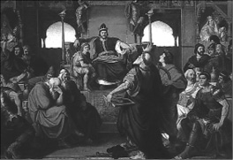
Attila’nın fiziksel görüntüsü ile ilgili bir kayda sahip değiliz. Bu konuda tek kaynak, kendisini görme şansı yakalamış antik dönem tarihçileri. Sözgelimi Romalı bürokrat ve tarihçi Jordanes, bir başka tarihçi Priscus’un (Attila ile tanışmıştır) ağzından Hun İmparatoru’nu şöyle anlatır: ‘Kısa boyluydu. Kafası büyüktü. Göğsü geniş, gözleri küçüktü. Sakalları seyrekti ve hafiften ağarmıştı. Burnu düzdü ve oldukça da yanık tenliydi.’
Avrupa Hunlarının kökleri asırlardan beri tartışma konusu olmuştur ancak yine de genel kabul gördüğü şekliyle çoğunluğu atlı göçebelerden oluşan Orta Asya ve Avrupalı kabilelerin bir birleşimi oldukları söylenebilir. Hunların bu birleşik gücü Avrupa’da 4. yüzyılda şekillenmeye başlamıştı. Savaşa her an hazır olmaları, alışılmadık hareket kabiliyetleri ve aralarında bileşik yayların3 bulunduğu silahlarıyla komşularına karşı askeri üstünlük sağlamışlardı.
İki kardeş krallığı paylaşıyor
Hunlar, 432 yılında Rugila Han’ın liderliği altında birleşmiş durumdaydı. Onun 434 yılında ölümü, bütün Hun kabilelerinin kontrolünün yeğenlerine; kardeşi Muncuk’un oğulları Attila ve Bleda’ya geçmesini sağladı. İki kardeş tahta geçtikleri sırada Hunlar, Bizans İmparatoru II. Theodosius’un elçileriyle Bizans İmparatorluğu’na göç etmiş firari kabilelerin geri dönüşü hakkında müzakere ediyorlardı. Ertesi yıl Attila ve Bleda, Margus’ta (bugünkü Pozarevac/Sırbistan) imparatorluk elçileriyle görüşmüş ve kendileri açısından kazançlı bir anlaşmayla dönmüşlerdi. Buna göre Romalılar, sadece kaçak kabileleri teslim etmeyi değil, aynı zamanda Hunlara yıllık haraç olarak verdikleri 115 kilo altını iki katına çıkarmayı, pazarlarını Hunlu tacirlere açmayı ve Hunlar tarafından esir alınan her Roma askeri için sekiz solid4 ödemeyi kabul etmişlerdi. Bu alışverişten memnun kalan Hunlar, muhtemelen daha da güçlenmek ve takviye almak için bir süreliğine sulh yolunu seçecekti.
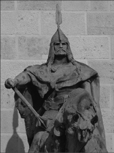
Askeri tarihçi ve Attila’nın liderlik sırları (Leadership Secrets of Attila the Hun) isimli kitabın yazarı da olan Wess Roberts, Attila’nın acımasız bir babar olduğu şeklindeki iddialara karşın şöyle der: ’Atilla, sırf eğlence olsun diye binlerce Hıristiyan’ı vahşi hayvanlara parçalatan Romalılar kadar vahşi değildi. Korkunç İvan, Cortez ya da Pizarro’dan daha acımasız olduğu da söylenemez. Roma’yı almaktan vazgeçmesi, aynı kenti hiçbir şeye aldırmadan yerle bir eden Almanlar’dan, İspanyollar’dan, Doğu Romalı General Belizar’dan ve Vandal Kralı Genzerik’ten daha insancıl olduğunu gösterir.’ Attila’nın, kültüründe ve tarihinde büyük etki bıraktığı Macaristan’da bulunan heykellerinden biri.
Theodosius bu fırsatı Konstantinopol’ün surlarını güçlendirmek için kullandı, kentin ilk deniz duvarını inşa ettirdi ve Tuna boylarında savunma hattı oluşturdu. Hunlar, Pers İmparatorluğu’nu işgal etmeye çalıştıkları beş yıl boyunca Romalıları rahat bırakmıştı. Acemler karşısında Ermenistan’da yaşadıkları hezimetin ardından Pers diyarından vazgeçip, yüzlerini yine Avrupa’ya çevirmekte gecikmeyeceklerdi. 440 yılında yeniden Roma sınırlarına dayanmışlardı. Tuna’nın kuzey kıyılarında Romalılarla yaptıkları anlaşma gereği kurulan bir pazardaki tüccarlara saldırdılar. Attila ve Bleda, anlaşma şartlarını ihlal ettiklerini ve Margus piskoposunun da Tuna’yı geçerek nehrin kuzey yakasında bulunan Hunlu asillerin mezarlarını yağmaladığını öne sürerek Romalıları topyekûn savaşla tehdit etti.
Böylelikle Tuna’yı geçtiler ve nehir boyunca İlliryalılara5 ait kaleleri ve kentleri yerle bir ettiler. Trakya’da yaşayan Yunanlı tarihçi Priscus’a göre bunlardan biri de, Sırplara ait olan Viminacium (Belgrad yakınlarında bir yerleşim bölgesi) şehriydi. Hunların ilerleyişi Margus’ta başlayacaktı. Romalılar, saldırgan piskoposu Hunlulara teslim etmeyi düşündüğü sırada piskopos gizlice Hunlulara sığındı ve şehri onlara teslim etti.
Theodosius, 440’ta Kartaca’nın Vandal Kralı Geiseric tarafından ele geçirilmesi ve 441’de de II. Sasani Yezdigerd’in Ermenistan’ı işgali sonrası nehrin savunmasını kaldırmıştı. Bu durum Attila ve Bleda’ya İllirya üzerinden Balkanlara doğru temiz bir yol bırakmış, onlar da bu durumdan istifade ederek, 441’de bölgeyi işgal etmişlerdi. Margus ve Viminacium’u ele geçirmiş olan Hun ordusu, durmadan önce de Singidunum (Belgrad) ve Sirmium’u da (Sremska Mitrovica) aldı. 442 yılı patırtısız, görece sakin geçse de, Theodosius boş durmuyordu. Kuzey Afrika’daki askerlerini geri çağırdı. Hunlara karşı çıkacağı seferleri finanse etmek için daha çok para basılmasını emretti. Düşmanla hesaplaşmayı planlıyordu.
Attila, bu hazırlıklara 443’te yeniden saldırıya geçerek cevap verdi. Tuna boyunca ilerleyerek, Ratiara’daki karargâhları yerle bir etti. Koçbaşları ve tekerlekli kulelerle başarılı bir şekilde Naissus’u (Nis) kuşattı, Nisava nehri boyunca ilerleyerek Serdica (Sofya), Philippopolis (Plovdiv) ve Arcadiopolis’i (Lüleburgaz) aldı. Konstantinopol’ün dışında karşılaştığı Roma ordusunu kısa sürede bertaraf etti. Ancak teçhizat yetersizliğinden dolayı şehri kuşatmaktan vazgeçmek zorunda kalmıştı. İmparator Theodosius yenilgiyi kabul ederek, sarayındaki görevlilerden Anatolius’u bir önceki anlaşmadan daha sert olan barış şartlarını görüşmesi için Attila’ya gönderdi. İmparator, anlaşmayı ihlal ettiği için şartlar daha da ağırlaşmıştı. Sonuç olarak bin 963 kg altın, ilkinden üç kat daha fazla yıllık haraç ve her Roma askeri için 12 solid karşılığında, Attila’nın gazabından kurtulmuşlardı. Bir süreliğine talepleri karşılanmış olan Hun kralları, imparatorluğun içlerine doğru çekildi.
Attila tek başına tahta geçiyor…
Priscus’un selefi Romalı diplomat ve Roma tarihini yazan tarihçilerden Jordanes’e göre Hunların Byzantium’dan (İstanbul) çekilmesini takip eden sükunet döneminde, ki muhtemelen 445 yılları ya da civarı, Bleda ölmüş, Hun tahtının tek sahibi, Attila olmuştu. Öte yandan Attila’yı kan içen bir canavar olarak resmetmeyi tercih eden bir takım tarihçilere göreyse, her ne kadar bunu destekleyen delil olmasa da, Bleda, bizzat kardeşi Attila tarafından öldürülmüştü.
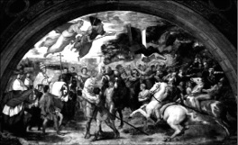
Attila, 452’de İtalya’yı önüne katmış ilerliyordu. Hıristiyan dünyası panik içindeydi. Romalı siyasiler ortadan kaybolmuşken, bir din adamı, Papa Leo, inisiyatif alarak yanındaki heyet ile Attila’nın huzuruna çıktı. Görüşme bittiğinde Hunluların lideri Roma’yı fethetmekten vazgeçmişti. Halen bile ne konuştukları bilinmiyor. Bilinen tek şey, bu buluşmanın, Batı dünyasında bir kurtuluş günü olarak algılanmasıydı. Efsaneye göre uşağı Attila’ya, neden Roma’yı almaktan bu kadar kolay vazgeçtiğini sormuş, o da, ‘Papa ile konuşurken, gökyüzünde ellerinde kılıcıyla bir aziz göründü. Papa’yı dinlemezsem, beni öldüreceğini söyledi.’ demişti. Batılılara göre kılıcı tutan Aziz Peter’den (St. Peter) başkası değildi. Raffaello’nun, 1531’de yaptığı ve bu efsaneyi resmeden çalışması.
Attila, 447 yılında Moesia üzerinden yeniden Doğu Roma’ya doğru harekete geçti. Lakin Vid nehrinde karşısına ‘magister militum’ (Roma İmparatorluğu Genelkurmay Başkanı) Arnegisclus çıkacaktı. Arnegisclus’u bertaraf etmesi uzun sürmeyen Attila’nın önünde ciddi bir engel kalmamıştı.
Attila, 300 Spartalı filmine konu olan savaşın yaşandığı, bugünkü Yunanistan sınırlarında bulunan ve ismi ‘sıcak geçit’ anlamına gelen Thermopulai’ye kadar ilerleyerek, buradan Konstantinopol’e yürüdü. Lakin çok uğraşmasına rağmen Attila, kendisinden önce gelen ve sonrasında da gelecek olan onlarcası gibi, şehri almaya muaffak olamayacaktı.
Konstantinopol, Roma Valilerinden Flavius Constantinus’un depremlerde zarar gören surları zamanında yeniden inşa ettirmesi ve bazı noktalarda da eski surların önüne yeni takviyeler yapılması gibi müdahalelerle işgalden kurtulmuştu. Hunların, Roma’nın kadim merkezlerinden Konstantinopol’e yaptığı bu akın, tarihçi Callinicus’un ‘Life of Saint Hypatius’ isimli eserine şöyle yansıyordu:
‘Trakya tarafında olan barbar Hun halkı, öyle büyüdü ki yüzlerce kenti ele geçirdiler, Konstantinopol de tehlike çemberine girdi ve birçok kişi kentten kaçtı… O kadar çok adam öldü ve o kadar çok kan aktı ki ölüler sayılamadı. Kiliseleri ve manastırları ele geçirip, çok sayıda bakire kızı ve rahibi öldürdüler.’
‘Benim olanı almaya geleceğim’
450. yıl idrak edilirken Attila, güçlü İmparator III. Valentinian ile ittifak kurarak Toulouse kentindeki Vizigot Krallığı’na saldırma niyetinde olduğunu belli etmişti. Daha önce de Batı Roma ve de facto lideri Flavius Aetius ile iyi ilişkiler kurmuştu. Aetius, 433 yılında Hunların elinde bir süre esir hayatı yaşamış; Attila’nın, Gotlara ve Bagaudlara karşı verdiği savaşta kendi emrine verdiği askerler, batıda ün yapmasını ve ‘magister militum’ unvanın elde etmesini sağlamıştı. Vizigotlardan korkan ve onlara karşı olan Vandal Kralı Geiseric’in diplomatik çabaları ve hediyeleri de Attila’nın planlarını etkilemiş olabilirdi. Ancak Valentinian’ın kız kardeşi Honoria, 450 yılının bahar aylarında abisinin kendisini ittifak uğruna Roma’daki senatörlerden biriyle nişanlanmaya zorlaması üzerine, Hun imparatoruna yardım çağrısında bulunan bir mektupla birlikte bir de nişan yüzüğü gönderdi. Abisinin planlarına bozmaya sadece Attila’nın kudretinin yeteceğini düşünüyordu. Her ne kadar Honoria bir evlilik teklifinde bulunmamış olsa da, Attila, yardım çağrısını, bu şekilde yorumlamayı tercih etti ve çeyiz olarak da, Hunlardan kaçan Gotlar, Vandallar, Alanlar ve diğer kabilelerle dolu Galya’yı, diğer bir deyişle neredeyse Batı Roma’nın yarısını istedi. Durumdan haberdar olan Valentinian, kız kardeşini sürgüne yollarken, annesi de Attila’ya sözde evlilik teklifinin geçerli olmadığını söyleyen hakaretamiz bir mesaj gönderdi. Attila, ikna olmamıştı. Kısa bir mesaj yollamakla yetindi: ‘Benim olanı almaya geleceğim!’
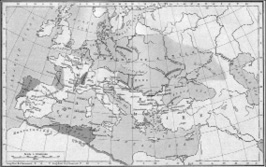
Attila’nın imparatorluğu ile Batı ve Doğu Roma İmparatorluğu’nun sınırlarını gösteren harita.
Çarpışma kaçınılmaz görünüyordu. Katalon Ovası’nda iki ordu karşı karşıya geldi. Attila’nın yüz bini Hun, yüz bini de Germen ve Slav kavimlerinden oluşan iki yüz bin kişilik ordusunun karşısında eşdeğer büyüklükte bir Roma ordusu vardı. Hunların bir numaralı düşmanı olan barbar kavimlerin hepsi Roma saflarındaydı. Takvimlere göre, kesin olmasa da, 20 Haziran 451’de, o zamanın şartlarında dünyanın en büyük orduları olan bu iki devasa kitle, birbirlerinin boğazına sarıldı. Nerdeyse bir gün süren çok kanlı ve vahşi bir çarpışmanın ardından akşama doğru Romalılar dağılma emareleri göstermeye başladı. Bu esnada çarpışmalar esnasında kralları ölen Batı Gotları da Roma hatlarından çekilmişti. Attila, ordusunu daha fazla yıpratmamak adına, geri çekilmekte olan Roma ordusunu takip etmedi. Kimi tarihçilere göre, buna mecali kalmamıştı. Geri çekilmek zorunda kaldı. Bir süre dinlenip, Roma’ya öldürücü darbeyi vurmayı planlıyordu.
Katalonya’da ne oldu?
Edward Gibbon (The Decline and Fall of the Roman Empire-Roma İmparatorluğu’nun Gerileyişi ve Çöküşü) ve Sir Edward Creasy (The Fifteen Decisive Battles of the World-Dünyayı Şekillendiren Onbeş Savaş) gibi kimi tarihçilere göre, Batılı kaynaklarda Chalons ya da Campus Mauriacus olarak da bilinen Katalon Savaşı, Latince konuşulan dünyanın tarihindeki en belirleyici savaşlardan biri olmuştu. Creasy’e göre, ilk kez bu savaşta ezici bir üstünlük sağlayamayan ve geri çekilmek zorunda kalan Attila’nın yenilmezlik sihri bozulmuş ve Latinler, sarsılmaz gibi görünen bu düşmanları karşısında büyük bir moral kazanmıştı. Bizans ve Roma tarihçisi John Julius Norwich ise Katalon Savaşı’nın önemini şöyle izah ediyor: ‘Unutulmamalıdır ki 451-52 yıllarında tüm Batı medeniyeti kritik bir eşikte bulunuyordu. Eğer Hun ordusu Katalonya’da durdurulmamış olsaydı, hiç şüphe yok ki Attila, başkentini Roma ya da Ravenna’da kuracak ve Galya ile Roma İmparatorluğu kültür ve maneviyat çölünden başka bir şey olmayacaktı.’
Bununla birlikte İrlandalı tarihçi ve Bizans uzmanı John Bagnell Bury gibi bir kısım tarihçilere göreyse, Katalon Savaşı, Avrupa tarihi açısından o kadar da belirleyici olmamıştı. Bury, Attila’nın zaten çekilmek niyetinde olduğu bir sırada Romalıların ve müttefiklerinin savaşı kazanır gibi olduğunu, ama gerçekte ortada bir zafer olmadığını söyler. Bury, aynı zamanda, Norwich gibi düşünen tarihçilere cevap olarak da, ‘Attila, Roma’yı ele geçirse bile, sırf barbar etiketinden dolayı her tarafı yakıp yıkacağını iddia etmek, temelsiz bir yaklaşım. Galya’nın tamamı ve Roma İmparatorluğu’nun başkentini ele geçirmiş olsaydı da, tarih değişmezdi. Roma yine Romalığına, biraz Hun rengi katılmış olarak devam ederdi.’ der.
‘Kuşlar gidiyor, dayanın’
Attila, bir süre sonra, 452’de, Honoria ile evlenme iddiasını kendisine kalkan yaparak bir kez daha İtalya kapılarına dadandı. Ülke boyunca yakıp yıkarak ilerliyordu. Hunlardan kaçanların Venedik lagününe sığınmasıyla birlikte Venedik şehri de boy vermeye başladı. Attila’nın ordusu sayısız kenti istila etti. Stratejik açıdan önemi büyük olan Aquileia şehrini zapt etmesi ise tam üç ay sürecekti.
İmparatorluğun doğu sınırlarını koruyan bu şehir surlarla çevrilmişti ve Gotlar tarafından korunuyordu. Kuşatma esnasında yiyecek sıkıntısı baş gösterince Hun ordusunda homurtular yükselmeye başladı. Şehrin pas geçilip yola devam edilmesini isteyenlere karşın Attila, muhakkak alınması taraftarıydı. Tüm bu muhalefetin ortasında gerçekleşen bir olay, işlerin akışı değiştirdi. Tarihçi Jordanes’in naklettiğine göre şehirden ayrılan bir leyleği gören Attila, bu fırsatı kullanarak askerlerine şöyle seslendi: ‘Bu hayvanların önsezileri güçlüdür. Burayı terk ettiğine göre, burada güven içinde olamayacağını hissettiğindendir. Demek ki şehri almamız yakındır.’ O zamana kadar ele geçirilememiş şehir, bir süre sonra şehir düştü. Attila kendisini bir hayli uğraştıran şehre karşı çok acımasız oldu.
Nakledilenlere göre Hun imparatoru, kentin yanışını seyretmek için Aquileia’nın kuzeyindeki tepelere bir kale inşa ettirdi; böylece bugün bile kaleye ev sahipliği yapan Udine kenti kurulmuş oldu. İmparatorluğun en büyük şehirlerinden Aquileia’yı tarumar eden Hun İmparatoru, İtalya’ya seferine devam ederek, Altinum, Concordia, Vicenza, Verona, Brescia, Pergamo ve Mediolanum (Milona) üzerinden Ticinum’a (Pavia) kadar uzandı. Hunlar adeta bir alev topu gibi, teslim olan şehirleri boyundurukları altına alarak, olmayanları ateşe vererek ilerliyorlardı. Tüm İtalya dehşet içinde kalmıştı. İmparator Valentinianus, Ravenna’daki sarayından kaçmak zorunda kaldı. Attila, nihayetinde soluklanmak için Po’da durdu. Bu panik ortamında Batı Roma İmparatoru III. Valentinianus inisiyatifi ele alarak, hükümeti topladı. Attila’yı nasıl durduracakları üzerine kafa yormaya başladılar. Diplomaside karar kılındı. 450 yılının Roma konsülü ve imparatorluğun önde gelen senatörlerinden Gennadius Avienus, Roma Valisi Trigetius ve Papa I. Leo’dan oluşan heyet, Mantua civarında Po ve Mincio ırmaklarının kesiştiği yerde Attila ile bir araya geldi. Burada yapılan görüşmeler sonucunda Attila, biraz da Batı Roma’yı hâkimiyeti altında aldığına inanmış olsa gerek, İtalya’dan ayrılmaya razı oldu. Tuna nehri gerisine geri çekilse de Romalılardan yüklü miktarda tazminat ve haraç almayı da ihmal etmemişti. Papa ile Attila’nın ne konuştukları halen bir sır. Kesin olan bir şey varsa, o da Romalıların bir şekilde canlarını kurtarmış olmalarıydı.
Batı Roma seferinden Doğu Roma’ya: Attila durmuyor
Attila, ordusu ile Kuzey İtalya’da bulunurken, Doğu Romalılar Tuna’yı geçmiş ve Hun sınır birliklerine saldırmıştı. Bu sebeple Tuna kıyısındaki sarayına dönen Attila, İmparator Theodosius’un halefi Marcianus’dan, selefi zamanından kalma vergilerin derhal ödenmesini isteyerek, Doğu Roma’yı savaşla tehdit etti. Marcianus, 450 yılı sonlarına doğru, Attila batıdayken ve Hunluların istilası sonucu Balkanlarda yağmalanacak bir şey kalmadığı için haracı ödemeyi durdurmuştu. Hunlara bir kez daha Konstantinopol yolları görünmüştü. Attila aynı zamanda dünya hakimiyetine giden yolda önündeki son engel olan Sasanilere karşı da sefer düzenlemeyi planlıyordu. Ama dünya iktidarına kendini kaptırmış nice akranları gibi, hesaba katmadığı bir güç daha vardı. Yenilmez bir güç: Ölüm.
Attila, 453 yılının ilk baharında öldü. Priscus’tan aktarılan geleneksel rivayete göre Attila, genç ve güzel Ildico (Bu ismin Gotça bir isim olduğu söylenir) ile yaptığı evliliğin gecesinde ağır bir burun kanaması geçirdi ve yaşadığı baygınlığın ardından nefessizlikten öldü. Diğer bir rivayete göreyse, aşırı alkolden dolayı iç kanama geçirmişti. Ölümüyle ilgili iddialar bunlarla sınırlı değildi. Ölümünden seksen yıl sonra vakanüvis Kont Marcellinus tarafından kaydedildiği üzere, ‘Hunların Kralı ve Avrupa’yı harabeye çeviren Attila, karısı tarafından bıçakla parçalara bölünmüştü.’ İskandinav mitolojisinin temel kaynakları Volsunga hikayeleri ve Edda şiirlerinde resmedildiğine göreyse de, Attila’ya referans eden Kral Atli, Ildico’ya referans olarak tasvir edilen eşi Gudrun’un ellerinde ölür. Bununla birlikte birçok tarihçi, bu iddiaların sadece romantik edebiyatın bir parçası olmaktan öte gitmediğinde hemfikir olarak, Attila’nın, çağdaşı Priscus’un aktardığı şekilde öldüğünü kabul eder. Ancak Priscus’un ‘resmi’ rivayetine karşın Liberty Üniversitesi doçentlerinden filolog Michael A. Babcock, ‘Night Attila Died’ (Attila’nın Öldüğü Gece) isimli kitabında, Hun İmparatoru’nun, Doğu ve Batı Roma saraylarının ortak ürünü olan bir komploya kurban gittiğini iddia eder. Detaylı bir filolojik araştırma yapan Babcock’un kendince geliştirdiği on yedi delile göre, Priscus’un iddiaları bir örtbas girişiminden ibaret olup, Attila, İmparator Marcianus’un mimarı olduğu bir suikast ile ortadan kaldırılmıştır.
Attila’sız Hun İmparatorluğu, fazla uzun ömürlü olmadı. Oğulları arasındaki iktidar kavgası, imparatorluğu zayıflatınca, barbar kavimler karşısında fazla tutunamadılar. Attila’nın belki de en önemli başarısı, göçebe kabilelerden, Batı Roma’yı diz üstü çöktürecek derecede düzenli ve güçlü bir ordu ve devlet mekanizması kurabilmesi olmuştu. İtalya’yı fethetmesinin ise tarihi açıdan bir başka önemi vardı. Roma’daki hükümet paniğe kapılıp dağılsa da, Papa Leo, Attila ile buluşarak anlaşma yoluna gitmişti. Diğer bir deyişle, siyasiler ortalıktan kaçarken, bir din adamı, devreye girip öncelik almıştı. Bu olayla birlikte halkın güveni, politikacılardan ruhban sınıfına doğru kaymaya başlayacak, bu zihinsel dönüşümle de Orta Çağ başlayacaktı.
NOTLAR
- Kesin doğum tarihi ve yeri bilinmiyor. Kendisi hakkında bilinenlerin çoğu ise, bir keresinde Roma elçisi ile birlikte huzuruna çıkma imkanı bulmuş Yunanlı tarihçi Priscus ve onun veliahdı olarak bilinen Doğu Romalı bürokrat ve tarihçi Jordanes kaynaklı.
- İsmi, farklı Orta Avrupa ülkelerinde farklı telaffuzlarla halen kullanımda olsa da, Attila ismi, halen, bir zamanlar İmparatorluğu’nun başkentliğine de ev sahipliği yapmış Macaristan’da yaygın olarak kullanılıyor.
- Hayatını, Avrupa Hun İmparatorluğu’nun kurucusu Uldız’ın ‘Güneşin doğduğu yerden battığı yere kadar her tarafı fethederim’ sözünü hayata geçirmeye vakfetti.
- Tuna Nehri’nin yatağının değiştirilerek, hazineleriyle birlikte nehre gömüldüğü iddia edilse de bunu doğrulayan bir bulguya rastlanmadı.
- Cengiz Han gibi Attila da bir kısım Türkler tarafından Türk olarak kabul edilir. Avrupa’da barbar olarak lanetlenirken, Türkiye’de yaygın olarak büyük bir devlet adamı olarak hatırlanmasının bu kabulde büyük payı vardır. Macarlar ise Hun İmparatoru Attila’nın Macar olduğunu iddia eder.
- Sezgin Burak’ın hayata geçirdiği Türk çizgi roman ve beyaz perde kahramanı Tarkan, Türkler ile Attila arasında kurulmak istenen ilişkiye iyi bir örnektir. Çizgi roman serisinde ‘kahramanımız’ Tarkan, imparatoru Attila adına maceradan maceraya atılır.
Allahın Kılıcı, 100 savaşa girdi hiç birini kaybetmedi
HALİD BİN VELİD
(592-642)
“Halid Allah’ın kılıcıdır… O her şeyini sizin için vermiştir, nesi var nesi yok harplerde Allah yolunda sarf etmiştir.”
Hz. Muhammed
Aynı zamanda Seyfullah (Allah’ın kılıcı) olarak da bilinen Halid bin Velid, yedinci yüzyıldaki Müslüman fetihlerinin en ünlü iki Arap generalinden biriydi. Cesareti ile anılan Halid, Hz. Muhammed ve ardından gelen Râşit halifelerden Hz. Ebu Bekir ve Hz. Ömer’in askerlerine kumanda etmişti. Roma İmparatorluğu’na, Sasanilere ve müttefiklerinin kendisinden sayıca üstün olan ordularına karşı giriştiği yüzden fazla savaşta hiç yenilgi almayarak adeta bir efsane haline gelen Halid, tarihteki en iyi askerî kumandanlardan biri olarak anılmayı fazlasıyla hak etmişti. En büyük stratejik başarısı, 633’den 636’ya, üç yıl gibi kısa bir süre içerisinde Pers İmparatorluğunu ve Roma’nın Suriye topraklarını fethetmiş olması, en büyük taktiksel başarısı ise Valaca’da başarılı şekilde uyguladığı ‘çift sarma’6 manevrası ve Firaz ile Yermük’teki belirleyici zaferleriydi.
Halid bin Velid, Mekke’de İslam Peygamberine karşıtlığı il ün yapmış Kureyş kabilesine mensuptu. Üstelik İslam düşmanlarının ilk Müslümanları boğmak için kalkıştıkları Uhud Savaşı’nın kazanılmasında da çok önemli bir rol oynamıştı. Ancak Hudeybiye Anlaşması’nın ardından İslam ile şereflenen Halid, Hz. Muhammed’in saflarına katıldı ve peygamberin adına Mute Savaşı gibi birçok harekâtı yürüttü. Bir zamanlar İslam’a kılıç sallayan Halid, artık İslam düşmanlarının korkulu rüyası olmuştu.
Halid, Peygamberin ölümünün ardından Ridda Savaşları’nda Sasani-Arap İmparatorluğu’nun Kral El Hirah’tan alınmasında ve Pers İmparatorluğu’nun fethi sırasında Sasani-Pers güçlerinin yenilgiye uğratılmasında, Halife Hz. Ebu Bekir adına Medine güçlerine kumanda ederek, çok önemli bir rol oynayacaktı. Roma Suriye’sinin fethi sırasında Bizans Arap devleti Gassanileri dize getirmek için çölleri aşan Halid, her ne kadar Halife Hz. Ömer tarafından komutanlıktan alınmış olsa da, Bizans-Arap savaşları boyunca, İslam kuvvetlerinin tartışmasız en büyük savaşçısı olarak, ‘Allah’ın Kılıcı’ ünvanını fazlasıyla hak edecekti.
Halid’in kumandası altında 635’te Şam ele geçirilmiş, 636’da Yermük Savaşı’nda Roma-Bizans güçlerine karşı çok önemli bir zafer kazanılmıştı. İslam’ın bu efsane askerinin daha ilk gençlik yılları, sonrasına işaret eden donelerle doluydu.
Cesareti ile Kureyş’de nam salmaya başlıyor
Arap Yarımadasının en iyi at binicileri olarak bilinen Mahzumilerden olan Halid Bin Velid, daha çocuk yaşta ata binmeyi, mızrak, kargı ve ok kullanmasını öğrenmişti. Bunların arasında kılıçta karar kılacaktı. Yetişkin olduğunda boyu nerdeyse 1,90’a ulaşmıştı. Savaşçılığı, cesareti ve ataklığı ile Kureyş kabilesinin gözde üyelerinden biriydi artık. Bu esnada Hz. Muhammed, İslam dinini tebliğe, baskılar sonucu Mekke’den Medine’ye hicret etmesinin ardından da, Medine’deki İslam toplumu ile Kureyş kabilesi arasındaki tansiyon da yükselmeye başlamıştı.
Halid, Kureyş ile Müslümanlar arasındaki ilk yüzleşme olan Bedir Muharebesi’ne katılmadı; ancak 625’te Uhud Savaşı’nda sergilediği liderlik, ibrenin Kureyş kabilesine dönmesinde ve Müslümanların çekilmesinde çok önemli bir rol oynamıştı. 627’de Müslümanlara karşı yapılan Hendek Savaşı ile sonuçlanan saldırı, Halid’in Müslümanlara karşı son kılıç çekişi olacaktı.
Halid Müslüman oluyor
Hudeybiye anlaşmasının ılıman ikliminde Halid de kendince bir iç hesaplaşmaya girişmişti. Bunlar başlangıçta bir askerin kendini sigaya çekmesi şeklindeydi. Asker olarak yeteneklerinin farkındaydı ama bir türlü içine sindirebileceği bir zaferle kucaklaşamamıştı. Her nasılsa zafer ondan kaçıyordu! Uhud’da,tüm ustaca manevralarına rağmen Müslümanlara son darbeyi vuramamıştı. Peygamberin askerlerini sahaya knumlandırmasına ve dezavantajlarına rağmen savaşı Kureyşlilerin üzerine yıkma tarzına hayran olmuştu. Hendek Savaşı’nda da zafer Kureyşlleri sıyırıp geçmişti. Kureyşliler sayıca ve mühimmat olarak o kadar üstündü ki zafere kesin gözüyle bakılıyordu. Oysa Kureyşliler aslanlar gibi gittikleri cepheden fareler gibi döneceklerdi. Hudeybiye’de de Müslümanların yolunu kesmeye çalıştığında Peygamber yine kendisini şık bir manevrayla safdışı bırakmıştı. Halid bir yandan bu düşmanını ele geçirmeye çalışırken, diğer yandan da Peygamberin kumandanlığına, karakterine ve açıkçası bir başkasına benzerini göremediği kişisel hasetlerine de hayanlık duymadan edemiyordu. Ama hepsinden önce kendini savaşarak ifade eden Halid, bir türlü zaferle tanışamıyordu. Kureyş’in kendisine tattırdığı hezimetten başkası değildi. kureyşlilrle birlikte büyük zaferlere kavuşamayacağı düşüncesi maceracı ruhunu kemirmeye başlamıştı. Belki de Peygambere katılmalıydı, kim bilir.
Bu arada Medine çıkışlı askeri seferlerle ilgili haberler Halid’in de kulağına geliyordu. Uhud Savaşı ile hac dönemi arasında Müslümanlar, büyük bir kısmından zaferle döndükleri yirmi sekiz sefere çıkmışlardı. Bunlar sadece İslam’ın siyasi sınırlarını genişletmekle almıyor aynı zamanda Müslümanlara zenginli de getiriyordu. Her ne zaman Müslümanların zaferiyle ilgili haberler Mekke’ye ulaşsa, Halid’in içinden hep aynı düşünce geçiyordu:
‘Keşke ben de onlarla cephede olsaydım!’
Peygamberi hac farizası esnasında gözlemleyen Halid’in zihninden geçen ‘zafer özlemi’, bir süre sonra yerini iç hesaplaşmaya bırakacaktı. Hiçbir zaman bu konularda derinlemesine düşünmemiş, Kabe’nin putlarına olan ilgisi de üstünkörü olmaktan öte geçmemişti. Her zaman zihninin bir yerinde, doldurulmayı bekleyen bir alan bırakmıştı. Şimdi ciddi bir şekilde bu meseleler üzerine kafa yoruyor, ama düşüncelerini kimseyle paylaşamıyordu. Aslında paylaşamadığı, ‘İslam’ın hak din olduğu gerçeği’ne her gün biraz daha yaklaşmakta olduğuydu.
İslam hakkında kesin kararını vermişti. Büyük İslam düşmanı Ebu Cehil’in oğlu İkrime başta olmak üzere diğer yakınlarıyla bir araya geldi ve tepki alacağını bilmesine rağmen kararını açıkladı: Müslüman olacaktı.
O gece Halid, kılıcını ve atını alarak Medine yoluna düştü. Yolda, kendisi gibi Müslüman olma yolunda at süren Osman bin Talha ile karşılaştı. Birlikte, yeni bir dünyaya atım attılar. İslam Peygamberinden özür ve af dileyen Halid, İslam ile şereflenmişti. O andan itibaren gücünü, savaşçılığını ve askeri dehasını İslam adına kullanacak, bu uğurda gösterdiği kahramanlıklardan dolayı da Hz. Muhammed’den ‘Seyfullah’ (Allah’ın kılıcı) unvanını almaya hak kazanacaktı.
Allah’ın Kılıcı Mute Savaşı’nda
Halid’in Medine’ye gelişinden üç ay sonra Hz. Muhammed, Gassanilerin liderine İslam’a girmelerini teklif eden bir mektup gönderdi. Ancak gönderdiği elçiler Mute’den geçerken, yerel bir Gassani kabile lideri olan Şurahbil İbn Amar tarafından öldürüldü. Elçilerin dokunulmazlığı ilkesinin çiğnenmesi, Medine’de öfkeye yol açmıştı. Gassanilerin bu yaptığı cezasız bırakılmayacaktı. Hazırlıklara başlandı. Hz. Muhammed, bu harekâtın kumandanlığına Zeyd bin Harise’yi getirdi. Savaş sırasında Zeyd’in ölümü halinde kumandayı Cafer bin Ebu Talip, onun ölümü halinde de Abdullah ibni Revahe alacaktı. Savaş sırasında bu üç kumandanın da ölmesi durumunda, Peygamberin, ‘Şayet Zeyd b. Hârise sehid olursa yerine Ca’fer bin Ebu Tâlib ve o da şehid olursa yerine Abdullah bin Revaha kumandan olsun, o da şehid olursa ehl-i Islam içlerinden birini seçsin.’ Hükmü gereği, askerler kendi aralarında bir kumandan seçeceklerdi. Savaş sırasında üç kumandan da şehit oldu ve komutanlığa Halid bin Velid seçildi.
Savaş o gün akşama dek, kıyasıya devam etti. Halid, sabaha kadar, sağ kanatta bulunan askerleri sola, soldakileri sağa, arkadakileri öne ve öndekileri de arkaya alarak askeri dehasını sergiledi ve düşmana yeni destek kuvvetleri gelmiş izlenimi vermek ve morallerini bozmak istemişti. Bu arada geri çekilme esnasında sürpriz saldırılarla düşmana kayıplar da verdiyor ve aynı zamanda ganimet de elde ediyordu. İslam ordusunu güvenli bir şekilde Medine’ye ulaştıran Halid, Peygamberin övgüsüne mahsar olmuş ve bizzat O’nun tarafından ‘Seyfullah’ olarak isimlendirilmişti. Hâlid bin Velid, Mute Savaşı’nın şiddetini, ‘Elimde dokuz kılıç parçalandı’ sözleriyle dile getirecekti.
Müslümanlar, Mekke’yi fethetmek üzere 630 yılında Medine’den yola çıktılar. Fetih sırasında Halid, Mekke’ye giren birliklerden birinin kumandanlığını yaptı. Mekke alınmıştı ama İslam ordularını daha zorlu görevler; her şeyden önce de dünya İslam’ın mesajını bekliyordu.
Halid, 630’daki Huneyn Savaşı’nda süvarilerin kumandanlığını yaptı ve ardından Taif kuşatmasına katıldı. Hz. Muhammed komutasında gerçekleştirilen Tebük seferine katılanlar arasında da vardı. Tebük’ün ardından İslam Peygamberinin görevlendirmesiyle, Dûmetu’l-Cendel prensini yakaladı. 631’de Hz. Muhammed’in veda haccına katılan Halid’in, tıraş olduğu sırada peygamberin saçlarından bir kısmını aldığı söylenir. Hz. Muhammed’in de bunun neden yaptığını sorması üzerine de “Bu saçları bir yadigâr olarak hep yanımda taşıyacağım böylece bu saçlar bana savaşlarımda zafer kazanmama yardım edecek.” dediği ve bu saçları, sarığının altına giydiği takkeye diktiği nakledilir.
Halid isyancıların korkulu rüyası oluyor
Hz. Muhammed’in ölümünün ardından birçok kabile Medine yönetimine karşı ayaklanmıştı. Halife Ebu Bekir, isyancılara ve dinden dönenlere karşı ordularını gönderdi. Halid de ordusu ile Buzaha’ya ilerledi ve kendisine destek bulmak için peygamber olduğunu iddia eden Tuleyha’yı 632 yılının Eylül ayı ortasında Buzaha Savaşı’nda yendi. Eylül’ün üçüncü haftasında Tuleyha’nın hayatta kalan takipçilerini ise Hamra Savaşı’nda mağlup etti. Halid’in zaferlerinin ardından birçok kabile, Halifenin otoritesini kabul edecekti. Buzaha’dan güneye ilerleyen Halid, altı bin kişilik ordusuyla Nakra’ya ulaştı. Bu kez karşısında isyancı Beni Salim kabilesi vardı. Halid’ın keskin kılıcından onlar da kurtulamayacaktı. Ekim ayında Zafar Savaşı’nda kadın kabile lideri Selma’yı, ardından da bir diğer isyancı Beni Tamim kabilesi ve liderleri Malik bin Ebu Nuveyra’yı mağlup eden Halid, Peygamberin kendisine verdiği unvana layık olduğunu gösteriyordu.
Halid, Ebu Bekir dönemindeki cengâverliğini, ayaklanan bazı Arap kabilelerine karşı verilen Ridda Savaşları’nda da gösterdi. Ama en büyük hizmetlerinden biri, henüz olgunlaşmakta olan Medine İslam Devleti’ne karşı en güçlü tehditlerden birini yönelten yalancı peygamber Müseyleme’nin ordusunu bozguna uğratması olacaktı. Halid, 632 yılının Ekim ayının üçüncü haftasında gerçekleşen Yemame Savaşı’nda Müseyleme’ye karşı çok kesin bir zafer kazandı. Nifak kaynağı yalancı peygamberin bertaraf edilmesiyle, diğer isyancı kabileler de çökecekti. Halid, surda kocaman bir delik açmıştı.
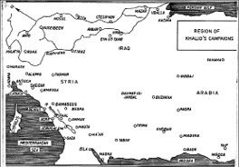
Büyük kumandan Halid bin Velid’in katıldığı savaşların yaşandığı yerleri gösteren harita.
Halid Pers İmparatorluğu’na karşı
Halife Ebu Bekir, İslam devletinin sınırlarının genişletilmesi gerektiğini düşünüyordu. Bu işe Perslerden başlanacaktı. Halid, Pers İmparatorluğu’nun en zengin bölgesi olan ve çoğunlukla Arapların yaşadığı Irak’ı fethetmek üzere on sekiz bin askerle yola çıktı. Yıl 633’tü. Sırasıyla Nisan ayındaki Chains ve River savaşlarıyla, Mayıs’ta ‘çift sarma’ manevrasını başarıyla uyguladığı Valaca ve Ullais savaşlarını kazanarak Perslere büyük bir darbe vurdu.
Pers ordusu bitkin düşmüştü. Mayıs’ın son haftasında Hire Savaşı’ndaki direnişlerinin ardından Irak’ın başkenti Müslümanların eline geçti. Halid, ordularını dinlendirdikten sonra Haziran’da El Anbar’a ilerledi. Buradakiler de El Anbar Savaşı’yla direnmiş ancak yenilmekten kurtulamamış, Temmuz 633’te birkaç hafta süren kuşatmanın ardından da teslim olmuşlardı. Halid burayı da aldıktan sonra güneye doğru ilerledi ve Temmuz’un son haftasında aynı isimli savaşta Ayn El Tamr şehrini fethetti. Böylelikle neredeyse tüm Irak Müslümanların kontrolüne girmiş oluyordu.
Bir süre sonra Halid, Arabistan’ın kuzeyindeki Dûmetu’l-Cendel’den bir yardım çağrısı aldı. Müslüman Arap generali İyaz Bin Ganem, isyancı kabileler tarafından sıkıştırılmıştı. Halid’in 633 yılı Ağustos ayının son haftasında Dûmetu’l-Cendel Savaşı’nda isyancıları yenmesinin ardından tekrar Arabistan’a döndü. Lakin ortalık yine karışmak üzereydi zira Perslerin farklı kabile ve kolları bir araya getirerek büyük bir ordu toplamaya çalıştığı haberi kulaktan kulağa yayılıyordu. Halid, düşmanın ete kemiğe bürünmesini beklemeden, tüm bir orduyu karşısına almak yerine, kollarını tek tek budamaya karar verdi. Persler ve Hıristiyan Arapların toplamaya çalıştığı ordu, Hanafiz, Zumiel, Sanni ve Muzieh kollarından müteşekkil olacaktı. Halid ordusunu üçe ayırdı ve Muzieh’ten başlayarak gece baskınlarıyla her bir kolu sırasıyla mağlup etti. Persler yine büyük bir darbe yemiş ama Irak henüz tamamen kontrol altına alınamamıştı. Halid’in bunun için Aralık 633’te Firaz yakınlarında gerçekleşen Firaz Savaşı’nda Sasani Persleri, Bizanslılar ve Hıristiyan Araplardan oluşan orduyu da yenmesi gerekecekti. Bu savaşla birlikte Irak’ın fethi de tamamlanmış oluyordu.
Doğu Roma İmparatorluğu’nun Fethi
Halife Ebu Bekir, bu eşine az rastlanır başarılarından dolayı Halid’i tebrik ederek, Bizans’ın Suriye topraklarına girecek İslam ordularına kumanda etmekle görevlendirdi. Bizans’ın Suriye toprakları, bugünkü Suriye, Lübnan, İsrail, Filistin, Ürdün ve Türkiye’nin güneyinden oluşuyordu. Halid’i, birbiri ardına gelecek savaşlar ve fetihlerle dolu zorlu bir dönem bekliyordu.
Dokuz bin kişil ordusuyla Suriye çölünü geçen büyük kumandan, Haziran 634’te Suriye’ye girdi ve hali hazırda şehirde bulunan ve Ebu Ubeyde bin Cerrah, Yezid Bin Ebu Sufyan, Şurahbil Bin Hasene ve Amr İbn El As tarafından idare edilmekte olan yirmi üç bin kişilik İslam ordusunun kumandasını devraldı. Ertesi günden itibaren Halid ve askerleri, Suriye’yi fethetmek için kılıçlarına sarılacaktı.
Allahın Kılıcı tarafından idare edilen İslam ordusu sırası ile Sava, Aarak, Tarmad, Sahna, Kamda, Kartin ve Havvarin kentlerini ele geçirerek vergiye bağladı. Ama Müslümanların durmak gibi bir niyeti yoktu. Marec El Rahit Savaşı’nda Gassaniler ve Hıristiyan Araplardan oluşan bir orduyu yenmesinin ardından Şam’dan ayrılan Halid, Bizans karargâhına ev sahipliği yapan Basra şehrine ilerlemeye başladı. Üç gün sonra Basra’ya ulaştığında Şurahbil Bin Hasene’nin dört bin kişilik ordusu, on iki bin kişilik Roma ordusu ile savaşıyordu. Halid’in de gelmesiyle Roma ordusu karargahına çekilmek zorunda kalmış, birkaç gün sonra gerçekleşen Basra Savaşı’nda uğradıkları yenilginin ardından da şehri Müslümanlara teslim etmişlerdi. 634 yılı Temmuz ayının ortalarında gerçekleşen bu savaşta yüz otuz Müslüman şehit oldu.
Halid ve ordusu, bu insanüstü çaba gerektiren savaşlar silsilesine rağmen duracak gibi değildi. Zaten isteseler de şartlar durmalarına izin vermiyordu. Zira bir süre sonra Ecnadeyn’de doksan bin kişilik bir Roma ordusunun toplanmakta olduğu haberi geldi.
Halid, 24 Temmuz’da bütün İslam ordularını Ecnadeyn’de topladığında askerlerinin sayısı otuz iki bine ulaşmıştı. 30 Temmuz’da yaşanan Ecnadeyn Savaşı’nda Müslümanlar, Roma ordusunu tarumar etti. Ağustos’un ortalarında Şam yolunda gerçekleşen Yakosa Savaşı’nda bir Roma ordusu daha bozguna uğratıldı. Halid’e düşman dayanmıyordu. Lakin düşmanın da pes etmeye niyeti yoktu. İmparator Heraklius’un damadı Tomur, Halid’i durdurmak için başka bir ordu daha gönderdi; ancak 19 Ağustos 634’te gerçekleşen Marec El Safar Savaşı’nda bu ordu da öncekiler gibi mağluplar safındaki yerini almaktan kurtulamayacaktı. Ertesi gün Halid Şam’a ulaşarak bir ay sürecek kuşatmayı başlattı. Bu zaman zarfında Heraklius tarafından gönderilen bir destek gücü, Sanita El Ukab Savaşı’nda bertaraf edilmiş, kuşatmayı yarmaya çalışan üç karşı saldırı savuşturulmuş ve nihayetinde 18 Eylül 634’teki Şam Savaşı’nda şehir fethedilmişti. Roma ordusuna, ailelerini ve mallarını da yanlarına alarak gidebildikleri kadar uzağa gitmeleri için üç gün mühlet verilmiş ya da Şam’da kalarak vergi ödemeyi kabul etmeleri istenmişti. Sürenin sona ermesiyle Halid’in kumandasındaki bir süvari birliği, şehirden ayrılan Roma ordusunu yakalayarak Marec El Debaj savaşında bertaraf etti.
Halife Ömer Halid’i görevden alıyor
22 Ağustos 634’te hakka yürüyen Halife Ebu Bekir, yerine Hz. Ömer’i bırakmıştı. Halife Ömer, Halid’i İslam ordularının kumandanlığından alarak, yerine Ebu Ubeyde Bin Cerrah’ı tayin etti. Buna gerekçe olaraksa Hz. Muhammed’in, Halid’e nazaran, Ebu Ubeyde Bin Cerrah’ı (Amir bin Abdullah) daha çok sevmiş olmasını göstermişti. Halid, askerlerine karşı çok cömertti. Her savaşın ardından askerlerini cesaretlerinden dolayı ödüllendirmeyi alışkanlık haline getirmişti. Oysa adaletiyle nam salacak olan Halife Ömer savaşlardan elde edilen bu ganimetlerin, fakirlere ve ihtiyaç sahiplerine dağıtılması gerektiğini savunuyordu. Ebu Ubeyde, cesur ve yetenekli bir savaşçı ve saygıdeğer bir isim olmasına rağmen, ağır ve düzenli bir şekilde ilerlediği için askeri harekâtlarda bir yavaşlama olmuştu. Suriye’nin fethi, Ebu Ubeyde komutası altında devam etti. Buna rağmen Ubeyde, Halid’e danışmaktan da geri durmuyor, onu mümkün olduğunca yanında tutuyordu.
Yeni komutan eski komutanı komutanlığa atıyor
Ebu Ubeyde, komutayı devralmasından bir süre sonra selefi Halid’i Bizans tarafından tuzağa düşürülmüş bir İslam ordusunu kurtarması için Kudüs’e gönderdi. 15 Ekim 634’te Ebu El Kudüs Savaşı’nda Bizanslıları mağlup eden Halid, Ebu Ubeyde tarafından süvari birliklerinin komutanlığına getirildi. Öte yandan Bizans İmparatoru Heraklius’un Müslümanlar karşısında bu kadar çabuk pes etmeye niyeti yoktu. Müslümanları Suriye’den çıkarmak için Fahl düzlüğünde yeni bir ordu toplamaya başladı. Lakin Müslümanlar Halid’in olduğu hiçbir savaşta yenilgi yüzü görmemişti. 23 Ocak 635’teki Fahl Savaşı’nda Bizanslılar bir kez daha cepheden eli boş dönüyordu.
Savaşın ardından Ubeyde, Halid ile beraber Humus’a doğru ilerlerken İmparator Heraklius da tekrar sahneye çıktı. Suriye’yi geri alması için General Theodras’ı gönderdi. Şam’da kenti sadece bir hafta koruyabilecek kadar asker vardı. Theodras, İslam ordusuyla Marec el Rome’da karşılaştı. Ordusunun bir kısmını burada bırakarak, geceleyin Şam’a doğru ilerlemeye başladı. Bu sırada Halid ve Ebu Ubeyde de geride kalan askerlerle meşgul oluyorlardı. Halid’in ajanları, Theeodras’ın manevrasından kendisini haberdar edince, Halid, Ebu Ubeyde’den Şam’ı savunmak için izin istedi ve şehrin yakınlarında karşılaştığı Theodras’ı mağlup etti.
İlerleyen günlerde Ebu Ubeyde ve Halid komutasındaki İslam orduları sırasıyla Balak, Humus, Kinasareen, Hama, Şehirzer, Afamya ve Matar El Hamz şehirlerini alarak vergiye bağlayacaktı. Ancak birkaç gün sonra Humus’takilerin varılan anlaşmayı bozması üzerine, Bizanslılarla yapılan üç savaştan da muzaffer çıkan Halid, şehirdeki İslam hâkimiyetini yeniden tesis etmeyi başardı.
Yermük Savaşı’nda Halid’in atlı süvarileri sahneye çıkıyor
Suriye’nin kuzeyini fethetmek için sefere çıkan Halid, yol üzerindeki küçük bir çarpışmada esir aldığı Bizans askerlerinden İmparator Heraklius’un, iki yüz bin kişilik bir orduyla Suriye’yi geri almaya hazırlandığını öğrendi. Bu büyük orduya, aynı şekilde karşılık verilmesi gerekiyordu. Halid’in tavsiyesi üzerine Ebu Ubeyde, bütün kumandanlarına fethedilmiş şehirlerden çekilmelerini, halktan topladıkları vergileri geri vermelerini ve Yermük’e doğru harekete geçmeleri emrini verdi. Müslümanlar da büyük bir ordu ile düşmanı karşılayacaktı. Bu esnada Heraklius’un ordusu da Yermük’e doğru ilerliyordu. İslam ordusunun 636 yılının Temmuz ayında bölgeye ulaşmasından bir ya da iki hafta sonra Bizans ordusu da göründü. Halid’in atlıları, küçük çaplı bir çatışmada Bizans’ın yedek güçlerini yok etti. Temmuz’un üçüncü haftasında başlayan Yermük Savaşı öncesinde Ebu Ubeyde, tüm kumandayı Halid’e devretmişti. Altı gün süren savaşta büyük kumandan Halid, Bizans ordusunu ezip geçti. Tarihçilere göre Yermük, Arap yarımadası dışında da İslam’ın yayılmasının önünü açtığı için tarihteki en önemli savaşlardan biri olmuş, özellikle süvarileri etkin bir şekilde kullanarak Bizans ordusunun kanatlarını çökerten Halid bin Velid şöhretini perçinlemişti.
Kudüs fethediliyor, Halid kılıcına veda ediyor
İslam Halid gibi büyük komutanların destansı savaşları ile dalga dalga yayılıyordu. Ebu Ubeyde, aralarında Halid’in de bulunduğu üst düzey komutanlarıyla sıradaki fetih hareketlerini görüşmek üzere toplandı. Karar netti: Kudüs alınacaktı. Uzun süren bir kuşatmanın ardından şehir fethedildi. Ardından İslam orduları bir kez daha Suriye seferine çıkmış, Halid, Hazir Savaşı’nda büyük bir Bizans ordusunu yenmiş ve bir kez daha Humus’u almıştı. 637’de Ebu Ubeyde ve Halid komutasındaki birlikler, Halep’i alarak, hemen ardından Demir Köprü Savaşı’nda yine Bizanslıları yenmiş, 30 Ekim 637’de de Antakya’yı ele geçirmişlerdi.
İnsanüstü bir gayretle sergilediği cesaretini cephedeki ince taktiklerle süsleyen Halid, Lazkia, Jabla, Tertoos ve Maraş’ı İslam topraklarına kattı. Ve bir süre sonra kılıcına veda ederek, Ebu Ubeyde tarafından Humus valiliğine atandı. Maraş’ın fethi, son askeri zaferi olmuştu. Ordusuyla helalleşen büyük İslam kumandanı, Halife Ömer ile görüşmek üzere Medine’ye gitmiş ve rivayetlere göre halifeye, görevden alınmasıyla ilgili sitemlerini dile getirmişti. Hz. Ömer, kendisini şu sözlerle övecekti:
“Çok şey yaptın.
Senin yaptığını hiç kimse yapmamıştır.
Ancak bunları yapanlar kişiler değildir.
Yapan sadece Allah’tır.”
Hz. Ömer, sonradan Halid’i görevden almasıyla ilgili şunları söyleyecekti: ‘Halid’i, kendisine kızdığımdan ya da sadakatsizliğinden dolayı değil, halk onu yüceltmeye ve yanlış yola girmeye başladığı için görevden aldım. Ona bağlanabileceklerinden korktum. Halkın, her şeyi yapanın Allah olduğunu ve bu topraklarda fesat çıkmayacağını bilmesini istedim…’
Girdiği her savaşı kazanarak, İslam ve dünya tarihinin en büyük askerlerinden biri olarak anılmayı hak eden Halid bin Velid, hayatı boyunca, savaşırken şehid olmayı düşlemişti. Bundan dolayı, hasta yatağında ölmeden önce, yanındakilere, ‘yatarak ölmek üzere olduğundan dolayı’ utanç duyduğunu ifade edecekti.
Halid’in büyüklüğü belki de peş peşe kazandığı onlarca savaşla ve bu savaşlarda uyguladığı inanılmaz taktiklerle izah edilebilir. Böyle yapılırsa, yanlış da olmaz doğrusu. Ancak o asıl büyüklüğü, Hz. Ömer tarafından başkumandanlıktan azledilmesine rağmen, hiç azmini kaybetmeden, İslam ordusunun sıradan bir neferi olarak savaşmaya devam ederek göstermişti.
Kılıcıyla değil, davranışlarıyla örnek oldu
Halid, her zaman kendisinden daha kalabalık ordulara sahip olan Roma ve Pers imparatorluklarına ve müttefiklerine karşı irili ufaklı yüz kadar savaşa girdi ve bunlardan hiç birini kaybetmeyerek tarihin en büyük kumandanlarından biri olarak hafızalara kazındı.
En büyük stratejik başarısı olarak üç yıl gibi kısa bir zamanda hem Pers İmparatorluğu’nu hem de Suriye Roma İmparatorluğunu fethetmesi gösterilebilir. Batılı askeri analizcilere göre Halid’in başarısı, sadece taktiklerini başarıyla hayata geçirmesinden değil, aynı zamanda bunları, düşmanı tamamen imha edecek şekilde ezici bir güç kullanarak gerçekleştirmesinden kaynaklanıyordu. Özellikle Walaja Savaşı’nda kendisinden sayıca üstün bir düşmana karşı başarıyla uyguladığı ‘çift sarma’ manevrasıyla, bu manevrayı Hannibal’dan sonra uygulayabilen ikinci ve son kumandan olmuş, özellikle Firaz ve Yermük Savaşları’nı kazanmasıyla İslam’ın yayılışında hayati bir rol oynamıştı. Sanırım Halid’in savaşlarla geçen elli yıllık hayatını en güzel şekilde özetleyen, kendisi hakkında söylenen şu söz olurdu:
“Ne kendisi uyudu, ne de diğerlerini uyuttu. Hiç bir şey ondan kaçamadı.”
NOTLAR
- Müslümanlığı öncesi ve sonrasında girdiği hiçbir savaşı kaybetmedi.
- Yatağında ölmeden önce, ‘Vücudumda yaralanmamış yer yok. Gel gör ki, savaş meydanlarında yenilgi yüzü görmeyen Halid, yatağında ölüyor.’ diye hayıflandığı rivayet edilir.
- Pakistan ordusu Halid bin Velid’in adını taşıyan bir tank modeli kullanırken, Bangladeş ordusunda ise adını taşıyan bir savaş gemisi vardır.
Cermen prensliğinden Roma İmparatorluğu’na koşan Frank Kralı, Birleşik Avrupa hayalinin mimarı
CHARLEMAGNE
(742-814)
Kutsal Roma İmparatorluğu’nun ve Frankların imparatoru Charlemagne, Batı ve Orta Avrupa’nın büyük kısmını hakimiyetine almak için 40 yıldan fazla bir süre adeta hiç durmaksızın askeri harekâtlar düzenledi. Avrupa’nın Barbarların, Ortodoksların, İspanya üzerinden gelen Müslümanların ve de paganların saldırıları altında tarumar olduğu bir dönemde askeri ve siyasi açıdan gösterdiği dirayetli yönetimi ile Katolik Avrupa’nın nefes almasını,tekrar kendine olan güvenini kazanmasını sağlamış, bu yüzden ‘Karanlık Çağlardaki Işık’ olarak da anılmıştı.
Büyük Charles ya da Şarlman olarak da bilinen Charlemagne’in, Ortaçağ’daki en etkili askerî liderden biri olarak tarihe geçmesi boşuna değildi. Zira orduları savaş alanından hep üstün çıkmış ve zaferleri Avrupa medeniyetinin köşe taşı olacak şekilde Cermen, Roman ve Hıristiyan kültürlerinin birleşmesine yol açmıştı.
Charlemagne, 2 Nisan 742’de III. Pepin’in (Kısa Pepin) oğlu olarak günümüz Almanya’sının Belçika sınırı yakınındaki Aachen kentinde, o sırada kendi bölgesini kontrol etmek için çabalayan ve komşularını hâkimiyet altına alma mücadelesi veren soylu bir ailede dünyaya gelmişti. Baba Pepin, 754 yılında güç kullanarak Frankların (bugünkü Fransa, Belçika ve İsviçre ile Almanya ve Hollanda’nın bir kısmı) başına geçmiş ve tahta çıkar çıkmaz Loire Nehri’nin güneyindeki toprakları elde etmek ve İtalya’nın kuzeyindeki Lombardlara karşı Roma’daki Papa’yı desteklemek için askerî harekatlara başlamıştı. İşte genç Charlemagne da, bu seferler sırasında babasının yanında bulunarak, kılıcın ağırlığını hissetmiş, savaşın acı tadıyla tanışmıştı.

İngilizler’in Charles the great, Danimarkalıların Karel de Grote, Almanların ise Karl der Grosse olarak isimlendirdiği Charlemagne’nin, bembeyaz uzun saçları olduğu ve yaklaşık 2 metre boyunda olduğu söylenirdi. ‘Kılıç ve Haç’ ile Avrupa’yı birleştirdiği yorumu yapılan Frank Kralı, günümüz Birleşik Avrupa fikrinin de babası olarak biliniyor.
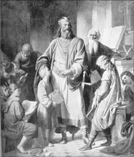
Topraklarında kültür ve bilimin gelişmesi için diğer ülkelerden getirttiği bilim adamı ve sanatçılarla küçük çaplı bir Rönesans’ın temellerini attıran Frank Kralı, özellikle yaptırttığı çevirilerle Roma’nın edebi mirasının canlandırılmasında önemli rol oynamıştı. Tasvir: Charlemagne ve bilim adamları, Karl von Blaas.
Pepin, 768’de öldüğünde, geride iki varis bıraktı: Charlemagne ve Carloman. Bu çift başlılık krallığın başını ağrıtmasına gerek kalmadan, 771’de Carloman’ın ölmesi, Charlemagne’ye, tek başına liderliğin kapılarını açacaktı. Bu arada Charlemagne, 770’de, stratejik bir adım atarak, Frankların bir zamanlar düşmanı olan Lombardlarla ittifakı sürdürmek adına Lombard Kralı Desiderius’un kızı ile evlenmişti. Kardeşinin ölümüyle birlikte, karısını babasının sarayına gönderdi ve akabinde eşinin krallığına karşı savaş açarak imparatorluğunun topraklarını genişletmeye soyundu. Takvimler 774’yi gösterdiğinde, kayınpederini yenmiş ve Kuzey İtalya’daki Lombard topraklarını Frank İmparatorluğuna katmıştı.
Charlemagne, genişleme stratejisini temel olarak, babasının Papa’ya verdiği “çıkarlarınızı korumak için elimden geleni yapacağım” şeklindeki sözü üzerine temellendirmişti. Her ne kadar din bir bahane olsa da, hiç şüphe yoktu ki, toprak kazanarak sınırlarını genişletmek, Charlemagne için herhangi bir ilahî kazanımdan daha kuvvetli bir motivasyon olmuştu. Ordusu Lombardları bozguna uğratmadan önce bile Charlemagne’nin asıl hedefi, o dönemde bugünkü Almanya’nın kuzeyinde bulunan topraklarda yaşayan ve pagan bir topluluk olan Saksonlar’dı. Frankların 804’de Saksonlar’ı tamamen yenilgiye uğratmasıyla sona eren süreç, geride 30 yıla yayılan 18 sefer bırakmıştı. Bu dur durak bilmeyen savaşlar ve Charlemagne’nin savaş sonrası politikalarının sonucunda Sakson nüfusunun dörtte birinden fazlası ölmüştü. Askerlerinin kılıcı ile karşı karşıya kalanlar ya Hıristiyanlığı tercih etmek zorunda kalıyor ya da kellesinden vazgeçiyordu.
Orduyu lazım olduğu zaman göreve çağırıyordu
Ordusu temelde silah olarak balta ve mızrak kullanan, kalkanla kendisini koruyan ve deri yelek giyen askerlerden oluşuyordu. Charlemagne’nin ordusunda ayrıca hatırı sayılır miktarda atlı şövalye vardı. Bunlar kendi çağdaşlarının silahlarından daha ölümcül ve uzun olan mızraklarıyla cephede dehşet saçıyor, bir tank gibi düşman mevzilerini yarıp geçiyorlardı.
Frankların Kralı, ordusunu tam zamanlı olarak istihdam etmiyordu. Askerlerini, 3 ila 6 ay uzunluğunda süren askeri harekâtlar için çiftliklerden ve köylerden özelikle bahar aylarında olmak üzere belli dönemlerde topluyordu. Fiziksel olarak engeli bulunmayan herkesin, herhangi bir ücret ödemeksizin orduda hizmet etmesini mecburi kılmış, askerlikleri süresince de silahlarını ve yiyeceklerini kendisi sağlamıştı. Askerler ücret yerine savaş ganimetlerinden pay alıyordu. Charlemagne, ayrıca askerlerinin hisselerini ve ihtiyaçlarını orduyu takip eden bir sığır sürüsüyle desteklemeyi de ihmal etmemişti.
İyi bir istihbaratçı idi…
Charlemagne, dönemin en iyi istihbarat servislerinden birini kurmuş ve düşmanın yerini ve cephanelerini tespit etmek üzere casuslar görevlendirmişti. Düşmanı şaşırtmak için genellikle ordusunu iki kısma ayırıyor ve sadece saldırırken birleştiriyordu. Savaş esnasında genellikle önce süvarileri sahaya sürüyor, ardından da piyadeleri desteğe yolluyordu. Savaş bir kere başladıktan sonra ise fazla taktik gerektiren manevralara girişmiyordu. Başarısının sırrı, daha çok, askerlerinin bireysel becerileri ve sayılarının çokluğundan kaynaklanıyordu.
Charlemagne, Saksonlar ile savaştığı sırada imparatorluğunu bugünkü güneybatı Fransa ve güney Almanya’ya doğru genişletmek için de seferler düzenlemişti. Bugünkü Macaristan ve Bosna topraklarını almış ve Hunlarla bağlantılı bir kol olan Avarları yenmişti. Ama bununla yetinmeye niyeti yoktu. 778’e gelindiğinde İspanya’yı ele geçirmiş, her ne kadar Moorlara7 karşı tüm ülkeyi almaya yönelik çabaları başarısız olsa da İspanyol Bölgesi8 olarak bilinen toprakların kuzeyini zapt etmişti.
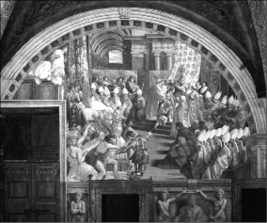
Ünlü İtalyan ressam Raffaello’nun gözü ile Charlemagne, 800 yılında, Vatikan’da Papa III. Leo’nun elinden, kendisini Kutsal Roma İmparatoru yapan tacı giyerken.
İnsanlık, 800. yüzyılı kucaklamaya hazırlandığında, Charlemagne, artık Batı ve Orta Avrupa’nın büyük kısmını kontrol ediyordu. Dünyanın batısındaki en güçlü ordu onun emrindeydi. Aynı yılın Noel Günü Charlemagne, dua etmek için Roma’daki St. Peter’s Bazilikası’na girdi. Papa III. Leo, burada Charlemagne’ye taktığı taçla, kendisinin yeniden kurulan Kutsal Roma İmparatorluğu’nun yeni imparatoru ilan etti. Öte yandan Charlemagne’nin dümenine geçtiği bu ‘yeni’ Roma, eskisinden çok farklıydı. Öncelikle eskisinin yarısı büyüklüğündeydi. Toprakları günümüzün Fransa, Belçika, Hollanda, Lüksemburg, İtalya, İsviçre, Almanya, Çek Cumhuriyeti, Slovakya, Avusturya ve Macaristan’ından oluşuyordu. Yunanistan, Anadolu (Doğu Roma sınırları içindeydi) ve Müslümanların elinde olan İspanya, Kuzey Afrika, Mısır, Suriye, Filistin ve Mezopotamya gibi eski Roma toprakları da Charlemagne’nin bu yeni imparatorluğu’nun sınırları dışında kalmıştı. Üstelik Charlemagne, bir Romalı da değil, Cermendi. Tüm yaşamı boyunca Roma’yı sadece dört kez ziyaret etmiş ve imparatorluğunu Aachen’den yönetmişti. Zaten kendisi de ‘Roma İmparatoru’ yerine, ‘Frankların Kralı’ unvanını kullanmayı tercih edecekti.
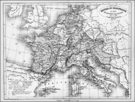
Charlemagne’nin imparatorluğunun sınırları, öldüğünde, Avrupa’nın büyük bir kısmını kapsıyordu. Ölümünün üzerinden bir kuşak bile geçmeden parçalanan toprakları, ilerde günümüz Almanya ve Fransa’sının temellerini oluşturacaktı.
800’den sonra sınırlarını genişletmeyi durduran bu büyük savaşçı, daha çok kuzeyden Vikingler ve Danimarkalılardan, güneyden ise Bizanslılar ve Akdeniz Araplarından gelen tehditlere yoğunlaştı. 28 Ocak 814’te 71 yaşında ölüp Aachen’e gömülene dek çok büyük bir savaş yaşamayan Charlemagne, ömrünün son yıllarında daha çok ekonomik ve kültürel reformlara ağırlık vermişti.
Birleşik Avrupa ideali onunla başladı
Birleşik bir Avrupa’nın kurulması ve Batı kültürünün temellerinin atılması bakımından önemli bir misyon gerçekleştiren Charlemagne, bir komutan olarak her fırsatta liderlik özelliklerini sergilemekten kaçınmadı. Hukukun üstünlüğünü geliştirmede, kitapların ve eski yazıların çoğaltılmasında, Hıristiyan öğretisinin yayılmasında ve Latincenin öğretilmesinde gösterdiği gayretle Orta Çağ’ın önde gelen liderlerinden biri olduğunu kanıtlamıştı. Bununla birlikte icraatları Avrupa ve Asya’yı kana bulayan ve asırlarca sürecek olan gelecekteki din savaşlarını tetikledi. İmparatorluğu, ölümünden sonra sadece 30 yıl yaşamış olsa da Charlemagne, bugün Batı medeniyeti olarak bilinen oluşuma beşiklik edecek şekilde Hıristiyan, Cermen ve Roma kültürlerinin karışımının mimari olarak tarihteki yerini almış, hiç şüphe yok ki, Avrupa’nın gördüğü en ‘tarih değiştirici’ krallardan biri olmuştu. Öte yandan, Chigago Üniversitesi’nden Fransız edebiyatı profesörü Robert Morrissey’in de belirttiği gibi, Kutsal Roma İmparatorluğu’nun bu ilk imparatoru, her zevke hitap eden bir kimliğe de sahipti! Harcı tarih, efsane ve edebiyatla yoğrulan bir imaja sahip Charlemagne, Morrissey’in de dediği gibi, ölümünden 16. yüzyıla kadar, ‘savaşçı’, ‘Hıristiyanlığın koruyucusu’, ‘adaletin sigortası’, ‘kanun yapıcı’, ‘fakirlerin babası’ olarak görülürken, erken dönem kayıtlarında kendisinden ‘Hıristiyan fatih’, daha sonrakilerdeyse ‘sınırlı monarşi’ taraftarı bir yönetici olarak bahsediliyordu. Charlemagne’nin bu krallık karşıtı imajı 17. ve 18. yüzyılın Burbon Monarşisi’nin hoşuna gitmemişti. 19. yüzyılın sonlarına doğru ise sadece Alman olarak görülmüş, Fransız tarihi ile bir ilgisi olmadığı ileri sürülmüştü. Birleşik Avrupa fikrinin siyasi olarak dolaşımda olduğu günümüzde ise, bu fikrin ağa babası olarak, hiçbir zaman bu kadar gündemde olmamıştı.
NOTLAR
- Uzun boylu, güçlü, güler yüzlü ama acımasız biriydi. Yüzmekten, avcılıktan ve ata binmekten hoşlanıyordu.
- Krallar ve prensler huzuruna çıktığında ayaklarına kapansa da, özel hayatında, özellikle dört eşinden ikisinin ve annesinin yanında oldukça ezik olduğu söylenirdi.
- İngiliz tarihçisi Norman Davies, Birleşik Avrupa fikrinin Charlemagne ile başladığını öne sürer.
- Abbasi halifesi Harun Reşid ile sıkı ilişkileri vardı. Reşit, Charlemagne’ye bir satranç takımı armağan etmişti.
- 800’de Papa Leo, kendisine Kutsal Roma İmparatoru olarak taç giydirdiğinde, papalık tarihinde ilk ve de son kez bir papa, bir kralın önünde diz çöküyordu. Kendisi, ‘Beni İmparator yapacağını bilseydim, kiliseye gelmezdim’ dese de, tarihçiler, papanın o dönemde Charlemagne’nin bilgisi dışında hareket edemeyeceğini söyler.
- Ölümünden sonra üç oğlunun arasında baş gösteren anlaşmazlıktan dolayı imparatorluğu, Doğu ve Batı Franklar olmak üzere ikiye ayrıldı. Batı Franklar günümüz Fransa’sına, Doğu Franklar ise, önce Kutsal Roma Germen İmparatorluğu’na, ardından da günümüz Almanya’sına dönüştü.
- Her ne kadar okuma yazma bilmeyen tek Frank kralı olduğu iddia edilse de, İngiltere ve İrlanda’dan getirttiği bilim adamları ve sanatçılarla, topraklarında Rönesans hareketi başlattı. Sanat, bilim ve ticaret döneminde gelişti.
- İktidarında gerçekleşen 50 askeri seferin en az yarısında en ön safta at koşturdu. Savaşı lojistiğine varıncaya dek kendisi planlıyordu. Cephedeki hızlı manevraları, ilerde Napolyon’a da ilham kaynağı olacaktı.
- İslam’ın Avrupa’ya doludizgin girişine set çekmesi nedeniyle Hıristiyanların gözünde ayrı bir saygınlığı vardır.
- İspanya’yı Müslümanlardan kurtarmak için çıktığı Katalan seferi, birçok destan ve efsanenin doğmasına beşiklik etti. En gözde şövalyesi Ronald’ın öldürülmesini konu edinen 4 bin satırlık destan (La Chanson de Roland, Roland’ın Şarkısı) Fransız edebiyatının bilinen ilk büyük eseri olarak kayıtlara geçmişti.
Anadolu’nun kapısını Türklere açan büyük savaşçı, Malazgirt Fatihi
SULTAN ALPARSLAN
(1029-1072)
“Malazgirt Savaşı, Türkiye’nin
doğuş nedeni olarak düşünülebilir”
Claude Cahen, Fransız Tarihçi
Selçuklu İmparatorluğu’nun tarihte oynadığı en büyük rollerden biri Anadolu’nun fethedilmesi ve bunun neticesinde buranın bir Türk vatanı haline gelmesiydi. Bu süreçte öne çıkan en önemli aktörlerse, 1071’de yaşanan Malazgirt Savaşı ve bu savaşta İslam ordusuna kumanda eden Sultan Alparslan’ın askeri yetenekleriydi.
Selçuklular, Gazneli Devleti’nin egemenliği altında bulunan Horasan’ı işgal ederek bu bölgeye yerleşip bir devlet kurmalarını sağlayan 23 Mayıs 1040’taki Dandanakan Savaşı’ndan sonraki yıllarda, genişleme ve yayılma açısından gözlerini batıya dikmişti. 1044 yılından itibaren Anadolu’ya yönelmiş olan Selçuklular, Bizans’ta baş gösteren iç karışıklıklardan da istifade ile Doğu Anadolu’da etkili olmaya başlamışlardı.
İsaak Komnen’den (1057–1059) sonra Bizans Tahtına geçen . Konstantin Dukas (1059–1067), Selçuklu akınlarını önlemeye çalıştı ise de, başarılı olamadı. Türkmenler bu topraklara akınlar yapmakla yetinmişlerdi. Anadolu’yu fethetmek haleflerine, Alparslan’a kısmet olacaktı. Alparslan, amcası Tuğrul Bey’in ölümünün ardından askeri konulardaki üstünlüğü, çabukluğu, azmi ve enerjisi sayesinde kısa zamanda diğer adaylar arasından sıyrılarak Selçuklu Sultanı olmayı başaracaktı. Saltanat davasına girişen prensleri bertaraf ederek Selçuklu imparatorluğu tahtına yerleşen Alparslan’ın ilk işi amcası Tuğrul Bey zamanında başlanan ‘Rûm gazasına’ devam etmek olacaktı. Peki kimdi bu Selçuklu sultanı Alparslan?
İlk işi dağınık güçleri birleştirmek oldu
Alparslan, 1030’da (kimi kaynaklara göre 1029) doğmuştu. Çağrı Bey’in oğlu, Tuğrul Bey’in yeğeniydi. Gazne hükümdarı Mevdut’a karşı 1044’te kazandığı büyük zafer kazandığı savaşla, askeri hünerini sergilemiş, babasının yönlendirmesiyle 1058’de Belh, Toharistan, Tirmiz, Kobadiyan, Vahş ve Valvalic gibi şehirlerin yönetimini devralmıştı. Bu bölgelerde bir nevi yöneticilik stajı yaptı. 1060’ta Çağrı Bey’in ölümüyle Alparslan’ın önü açılacaktı. Horasan Selçuklu Devleti’nin başına geçti. 1063’te bu kez amcası Tuğrul Bey vefat etti. Vasiyeti doğrultusunda Vezir Amidül Mülk Kündüri, Tuğrul beyin yeğeni ve üvey oğlu Süleyman’ı tahta çıkardı. Lakin Süleyman’ın dirayetinden emin olamayan Selçuklu beylerinin adayı, hem askeri hem de idari açıdan yeterli olacağına inandıkları Alparslan’dı. Baskı altında kalan Vezir Kündüri, Horasan Selçuklu Hükümdarı Alparslan’ı Rey’e çağırarak Selçuklu tahtını ona devretti. Kündüri’nin yerine Nizamülmülk’ü vezirliğe getiren Alparslan, ilk iş olarak birbirinden dağınık haldeki Selçuklu beylerini bir bayrak altında toplayarak güç yığınağı yaptı. Bunun ardından dönemin halifesinden bütün camilerde kendi adına hutbe okunmasını istedi. Hem siyasi hem de dini desteği arkasına almıştı. Artık Rum gazasına başlayabilirdi.
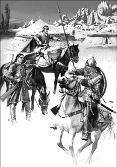
Batılıların gözünden Alparslan’ın ordusundaki askerler...
Selçuklular Bizans’ın başını ağrıtmaya başlıyor
İlk etapta Ermenistan ve Gürcistan civarında Selçuklulara toprak kazandıran Alparslan, ardından Bizans’ın en korunaklı mevzilerinden sınır şehri Ani’yi kuşattı. Şehrin etrafını çeviren heybetli surları ağaçtan burçlar, mancınıklar ve okçularıyla geçen Selçuklu Sultanı, 1064’de Ani’yi hâkimiyeti altına aldı. Durmadı. Aynı yıl kendisi doğuda; Tiflis’te kılıç sallarken, Afşin, Sunduk, Ahmed-Şah, Türkmen, Dilmaç oğlu Mehmed, Duduoğlu gibi kumandanları da Anadolu içlerine akınlar yapıyordu. Bunların arasından özellikle Afşin Bey, Bizans’ın canını sıkmaya başlamıştı. Önce 1067’de Malatya’da Bizanslılara mağlubiyet tattıran Afşin Bey, Kayseri’ye kadar ilerledi.
Öte yandan Bizans’ta yönetim değişikliği olmuş, Bizanslılar bugüne kadar iyi müdafaa edilmeyen ve etrafındaki çember giderek daralan Anadolu’yu kurtarması için Romen Diyojen (Romanos Diogenes) gibi kudretli bir kumandanı imparatorluk makamına getirmişti. Bu esnada Selçuklu akınları, Ege Denizi ve Marmara bölgesindeki noktalara kadar ulaşmış, aynı dönemde Şii-Fâtımî devletinin, İslâm ülkeleri ve Abbasî Halifeliği için tehlike oluşturduğuna kanaat getiren Alparslan, Suriye üzerinden Mısır seferine çıkmıştı. Sultanın bu girişimi, Bizans İmparatoru Diyojen’i fazlasıyla rahatsız edecekti. Müslümanlar durdurulmalıydı. Anadolu içlerine yaptığı birkaç hamle daha önce Afşin Bey tarafından bertaraf edilen Diyojen, bu kez kararlıydı.
“Doğumuzda bir İslam tehlikesi belirmiştir…”
‘Doğu sınırlarımızda büyük bir İslâm tehlikesi belirmiştir. Bunu daha fazla büyümeden ortadan kaldırmalıyız. Ordumla birlikte bu tehdide bir son vermeye gidiyorum.’ diyen Bizans İmparatoru, Alparslan ile yüzleşmek üzere, Norman, Slav, Gürcü, Abaza, Ermeni ve Rumeli’de yaşayan İslâm dînini kabul etmemiş Peçenek ve Uz Türklerinden oluşan 200 bin kişilik ordusuyla 13 Mart 1071’de İstanbul’dan Anadolu’ya doğru ilerlemeye başladı. Aynı esnada Sultan Alparslan da Azerbaycan’ın Hoy bölgesinde karargâhını kurmuştu. Veziri Nizamü’l Mülk’ü, kendisine takviye asker toplaması için Tebriz’e gönderdi. Tam teçhizatlı 10 bin kişilik kuvvetiyle Malazgirt’e doğru yola çıkmış, yol üzerindeki diğer kuvvetlerin de katılması ile Selçuklu ordusundaki asker sayısı 40 bini aşmıştı.
Malazgirt’e yaklaşılırken, Alparslan’ın İmamı Buharalı Ebu Nasr Muhammed Sultan’a, ‘Ey Sultanım, sen Tanrının öteki dinlere üstün tuttuğu İslam dini için savaşıyorsun, bu nedenle bütün hatiplerin minberlerden Müslüman halkla birlikte senin için duada bulunacakları Cuma günü, öğle namazı sırasında düşmana saldır. Ben Ulu Tanrı’nın zaferi senin adına yazmasını beklerim’ diyecekti. 25 Ağustos 1071 günü taraflar savaş düzeni aldı. Alparslan, birkaç bölüğü muhtelif emir ve beylerin kumandasında pusulara yerleştirmiş, kendisi de bizzat merkez hattında pozisyon almıştı. Selçuklu atlıları sürekli olarak tekbirlerle, boru, davul çalıp haykırarak ve ok taciziyle Bizans askerlerini moral bakımından çökertmeye çalışıyordu. Bizans tarafıysa kulakları sağır eden çan sesleriyle karşılık veriyordu bu psikolojik yıpratma hamlesine. Bütün hazırlıklarını tamamlayan ve ak giysiler giyerek ‘ölürsem kefenim bu olsun’ diyen Alparslan, 26 Ağustos Cuma sabahı maiyetindeki bütün kumandanları toplayarak, savaştan muzaffer bir sultan olarak çıkmak için dua etti ve askerlerine şöyle seslendi “Ben muhtesipler gibi sabırlıyım ve kendini tehlikeye atan kimselerin yaptıkları gibi gazilerin başında savaşacağım. Eğer tanrı beni başarıya ulaştırırsa bu güzel bir sonuç olacaktır; eğer durum bunun aksi olursa oğlum Melikşah’ı dinlemenizi ona itaat etmeniz ve onu yerime geçirmenizi sizlere vasiyet ediyorum.”
Bu arada Alparslan, Bizans karargâhının hendeklerle çevrilmiş olduğunu görünce, “Eminim ki, onlar yenileceklerdir. Çünkü sayılarının çok olmasına rağmen hendek kazmaları, onların korkaklıklarına delalet eder” diyecekti.
Malazgirt’te zaferin adı: Hilal
Saldırıya ilk geçen Selçuklular oldu. Türkler, Allah ve tekbir sesleri, kös ve boru gürültüleri ve naralarla ilerliyor, düşmanı hücuma kışkırtıyorlardı. Alparslan’ın askerleri, uyguladıkları hilal taktiği gereği, sahte bir hücumun ardından geri çekilip, düşmanın ilerlemesine izin veriyor, sayıca az olmalarından kaynaklanan dezavantajı bu şekilde gideriyordu. Alparslan, askerlerini, saf halinde Bizanslıların karşısına çıkarmıyor, Selçuklular, geri çekilirken de yoğun ok atışıyla düşman saflarını dövüyordu. Bu esnada Bizans ordusunun sağ kanadında saf tutan Uzlar ile sol kanadındaki Peçenekler, taraf değiştirip Selçuklu ordusuna katıldı. Bu gelişme Bizans saflarında bozulmaya sebep oldu. İmparator paniğe engel olmak için, ordugâhının Türk akıncıları tarafından yağma edilmesi ihtimalini de düşünerek, geri çekilme emri verdi. Sultan Alparslan Bizans ordusunun tam taarruz edilebilecek bir vaziyette pusulara yaklaşmış olduğunu görerek hücum emri verdi. Pusuda bekleyen taze güçler sahneye çıktı ve muhtelif noktalardan gedikler açıp düşman saflarını birbirinden ayırdı. Bütün Bizans karargâhı zapt edildi. Düşman hatları pozisyonlarını bozmuş, ilk kuşatılansa bizzat İmparator’un kumanda ettiği merkez hattı olmuştu. İmparator bir anda kendisinin ve savaşçılarının dört bir yandan ok yağmuruna tutulduğunu gördü. Diyojen, o ana kadar bozulmamış olduğu anlaşılan sol kanadı yardımına çağırmak istedi fakat Türkler ona da mani oldular; zira Bizans ordusunun arkasına geçen ve sol cenahı da kuşatmaya başlayan Selçuklu askerleri, bu kanadı da bozguna uğratarak dağıttı. Böylece tamamıyla tecrit edilmiş olan ve takviye kuvvetlerinden de mahrum kalan İmparator, esir düşünceye dek elinde kılıç, çarpışmaya devam etti. İmparatorluğun uzun tarihi boyunca ilk defa bir Bizans imparatoru, Müslüman bir hükümdarın eline esir düşüyordu. Esir alma şerefi de Selçuklu Türklerine ve onun kahraman hükümdarı Alparslan’a nasip olmuştu.
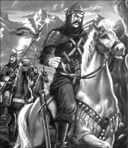
Bir çizimde Alparslan tasviri.
Kendine aşırı güveni sonunu hazırladı
Malazgirt’in ardından Sultan Alparslan’ın hâkimiyeti Anadolu’nun batısına doğru yayıldı. Ama onun asıl niyeti, atalarının geldiği toprakları Türkistan üzerine yürümek, Türkleri tek bir bayrak altında toplamaktı. 1072’de kalabalık bir orduyla Maveraünnehr’e doğru ilerlemeye başladı.
Buhara’ya yaklaştı. Uzun süreceği anlaşılan seferinin rotası üzerinde onlarca ele geçirilmesi gereken nokta vardı. Bunlardan biri de Amuderya nehri üzerindeki Hana kalesiydi. Kale, sapık bir inancın propagandasını yapan Yusuf el-Harezmi’ni hakimiyetindeydi. Türkler kaleyi kuşattı. Fazla direniş gösteremeyeceğine karar veren Yusuf el-Harezmi, teslim olmak zorunda kaldı. Esir olarak Sultan’ın huzuruna çıkarıldı. Alparslan, kendisinin idam edileceğini söyleyince, çılgına dönen Harezmi, hançerine davrandı. Alparslan’ın korumaları hamle edecekken, Sultan’ın işaretiyle kenara çekildiler. Devrinin en iyi okçularından biri olarak bilinen Alparslan yayını çekse de, ayağı kayınca, oku ıskalamış, bunu fırsat bilen Harezmi, hançerini sultanın göğsüne sokmuştu. Korumaları Harezmi’yi öldürmekte gecikmeseler de, sultan ağır bir şekilde yaralanmaktan kurtulamayacaktı. Olaydan 4 gün sonra, 25 Kasım 1072’de, henüz 42 yaşındayken hayata veda ettiğinde, etrafındakilere göre, kelime-i şahadet getirip vefat etmeden önceki son sözleri şunlar olmuştu:
“Düşmanlarımın üzerine yürürken, Allah’a sığınır, ondan yardım isterdim. Dün bir tepenin üzerinden askerlerime baktığımda, onların haşmetinden, büyüklüğünden, üzerinde durduğum tepe sallanıyor gibi geldi. Dünyanın hükümdarı olduğumu düşünüp, yenilmez olduğum fikri aklımdan geçti. İşte buna karşın Cenab-ı Allah da beni aciz bir kulunun eli ile cezalandırdı.”
Alparslan ölümünün ardından Tahran yakınlarındaki Rey şehrine defnedildi.
Alparslan Doğu Roma’nın sonunu başlattı
Alp Arslan’ın zaferi Anadolu’daki güç dengesini Selçuklu Türkleri ve Müslümanların lehine olacak şekilde değiştirmişti. Her ne kadar zaferin ardından Bizans İmparatorluğu bir dört asır kadar daha ömrünü devam ettirecek olsa ve Haçlı Seferleri Anadolu’yu hedef alacak olsa da, Malazgirt Zaferi, Selçuklulara, yenilmez armada gibi görünen Bizans’ın yenilebileceğini göstermiş, Türklerin Anadolu’ya yayılışlarının sinyallerini vermeye başlamıştı.
Selçuklu Sultanı Alparslan, sadece askeri alanda büyük işler yapmakla kalmamış aynı zamanda, medreseler kurdurmak, bilim adamlarına kol kanat germek, imar ve sulama tesisleri yaptırtmak suretiyle de, Anadolu’da yerleşik düzene geçilmesinde rol oynamıştı. Selçuklu askerlerinin ardından Anadolu’ya girmeye başlayan Müslümanlar, yerleşik düzene geçerek, İmparatorluğun, kendisini maddi manevi açıdan besleyen topraklarla bağlantısını kesmişti.
Aralarında Edward Gibbon’ın da olduğu birçok tarihçiye göre, Malazgirt mağlubiyeti, Doğu Roma İmparatorluğu için sonun başlangıcı olmuş, Alparslan, Bizans’ın ipini çeken süreci başlatmıştı.
NOTLAR
- Orta Asya ve Arap kaynaklarında Mehmed İbn Davud olarak da bilinir. Küçük yaşlarda ata binmeyi ve ok atmayı öğrenmişti.
- Alparslan Malazgirt’te elde ettiği zaferle, Hıristiyanlığın doğudaki kalesi kabul edilen Bizans İmparatorluğu’nun hâkimiyetini sınırladı. Hıristiyanlık âlemi buna karşılık vermek zorunda kaldı ve neticede Haçlı Seferleri başladı.
- Alparslan yeteneklerini ağırlıkla savaşlarda sergiledi. Devlet işlerinin yürütülmesini daha çok veziri Nizam al-Mülk’e bırakmıştı.
- İktidarı sırasında İmam-ı Gazali, İmam-ül-Haremeyn Cüveyni, Ebu İshak eş-Şirazi, Abdülkerim Kuşeyri, İmam-ı Serahsi gibi İslam alimleri yetişti.
- İmam-ı a’zam Türbesi, Harezm Camii ve Şadyah Kalesi gibi pek çok eser inşa ettirdi.
- Türkmenistan eski Devlet Başkanı Saramurat Niyazov’un talimatıyla, 2002’den itibaren Türkmen takvimine göre Ağustos ayı, Alparslan olarak isimlendirilmeye başlandı.
Haçlıların Kudüs iştahını kesen İslam kumandanı
SULTAN SELÂHADDİN EYYUBİ
(1138-1193)
Öldüğünde cenaze masraflarını karşılayacak kadar bile parası çıkışmadı. Zira, tüm kişisel servetini, ihtiyaç sahiplerine bağışlamıştı. Cömert olduğu kadar, iyi bir asker de olan bu yüksek gönüllü kişi, İslam dünyasın yetiştirdiği en önemli devlet adamlarından Sultan Selâhaddin Eyyubi’den başkası değildi. Özellikle Kudüs’ün hakimiyeti için haçlılarla girdiği mücadele ile hem doğuda hem de batıda efsaneleşen Sultan Selâhaddin’in tevazu, cesaret ve askeri başarılarla dolu mirası, bugün bile, İslam dünyasında, özellikle de Batı ile sıcak ya da soğuk çatışma içinde olan topraklarda, ilham kaynağı olmaya devam ediyor.
Kutsal Kudüs için savaştığı Haçlıların bile saygısını kazanan Selâhaddin, 1138’de Tikrit’te bir Kürt ailenin çocuğu olarak dünyaya gelmiş ve eğitimini tamamlamak üzere Şam’a gönderilmişti. Babası Necmeddin Eyüp, Baalbek valisiydi. Şam’da on yıl kalan Selâhaddin, Sünni İlahiyat bilimleri konusunda eğitim aldı. Amcası Şirkuh, dönemin Halep Atabeyi Nureddin Mahmud Zengi’nin komutanlarından biriydi. 1160’lı yıllarda Mısır’daki Fatimilerin bir koluna karşı düzenlenen saldırılarda Nureddin’i temsil eden amcasından temel askerî eğitimini aldı. 1169’da onun yerini alarak Nureddin’in veziri oldu. Büyük bir sorumlulukla karşı karşıyaydı. Mısır’ı, I. Amalric liderliğindeki Kudüs Latin Krallığı’na karşı koruyacaktı…
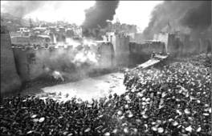
Hittin Savaşı’nda Selâhaddin’in Haçlı ordusuna vurduğu darbenin şokları, Hristiyan Avrupa’yı karıştırmıştı. Hatta kimilerine göre Papa III. Urban, hezimet haberi üzerine hastalanarak ölmüştü. Ama Selâhaddin Batı’ya asıl darbeyi, 88 yıl Frankların elinde kalan kutsal Kudüs’ü 2 Ekim 1187’de fethederek indiriyordu.
Başlangıçta pozisyonu çok önemsizdi; hiç kimse önceki yıllarda çocuk halifelerle vezirlerin girdiği mücadeleden dolayı sık sık istikrarsızlığın yaşandığı Mısır’da uzun süre kalmasını beklemiyordu. Suriye’den gelen yabancı güçlerin komutanı olarak, o zaman için halife El Adid’in liderlik ettiği Şii Mısır ordusu üzerinde de bir kontrolü ve etkisi bulunmuyordu. Halife Eylül 1171’de ölünce Selâhaddin, imamlardan halife olarak El Mustadi’nin adına hutbe vermelerini istedi. El Mustadi bir Sünniydi ve daha da önemlisi Bağdat’taki Abbasi hilafeti, eski hilafeti lağvetmişti. Şimdi Mısır’ı Selâhaddin yönetiyordu; ancak resmî olarak kendisini bir Abbasi halifesi olarak gören Nureddin’in temsilcisiydi.
Selâhaddin, ülkenin ekonomisini yeniden canlandırdı, orduyu yeniden organize etti ve babasının tavsiyelerine uyarak eski lideri Nureddin ile çatışmaya girmekten kaçındı. Planladığı seferlere başlamak için Nureddin’in ölümünü bekliyordu. Nureddin’in 1174’te ölümüyle Mısır’ın tek Sultanı oldu. Selçuklulardan bağımsızlığını ilan ederek ve Eyyubi saltanatını yeniden kurarak, Mısır’da Sünniliği yeniden canlandırmaya soyundu. Sınırlarını Batıya doğru genişletti ve amcası, Fatimi destekçilerini bastırmak üzere Nil’e gönderilince, kendisi de Kızıldeniz boyunca Yemen’i fethetmek üzere aşağıya yöneldi. Bu esnada Sünni âlimler kendisini ‘Allah Dostu’ anlamına gelen Veliyullah şeklinde isimlendirmeye başlamıştı.
Haçlıların korkulu rüyası oluyor
Nureddin’in ölümünün hemen ardından Selâhaddin Şam’a yürüdü. Halk kendisi bağrına bastı. Buradaki meşruiyetini, Nureddin’in dul eşi ile evlenerek daha da güçlendirdi. Öbür yandan Halep ve Musul, Nureddin’in üzerinde etkisi olduğu diğer iki büyük şehirdi; ancak hiç alınmamıştı. Selâhaddin 1176 ve 1186 yılında bu iki kentte etkisini ve otoritesini kurmayı başardı. Bu arada düşmanları da boş durmuyordu. 22 Mayıs 1176’da Halep’i kuşattığında gizli bir ‘Haşhaşiler’ suikast grubu iki kez kendisini öldürmeye çalıştı. Sıyrıklarla kurtuldu. Bu esnada Suriye’deki hâkimiyetini pekiştirirken, her ne kadar Haçlılarla karşılığında genellikle üstün gelen hep kendisi olsa da, 25 Kasım 1177’deki Montgisard Savaşı, bunun bir istisnası olacaktı. Selâhaddin, bu savaşta Kudüs Kralı IV. Baldwin, Raynald de Chatillon ve Tapınak Şövalyeleri tarafından yenilgiye uğratıldı. Üstelik bayağı ağır bir mağlubiyet almış, ordusunun ancak onda biri Mısır’a dönmeyi başarmıştı.
1178 yılında Haçlı devletleri ile Selâhaddin arasında bir barış anlaşması imzalandı. Zeki bir kumandan olan Selâhaddin, bu süreyi ordusunu tekrar ayağa kaldırmak için kullanacaktı. Haçlıların provoke edici karşı saldırılarına karşılık, 1179’da karşı saldırıya geçerek, Jacop (Yakup) Geçiti Savaşı’nda onları bir kez daha yenilgiye uğrattı. Bu esnada, özellikle İkinci Haçlı Seferi’nin önde gelen kumandanlarından Raynald de Chatillon, Kızıldeniz’e bir filo göndererek Selâhaddin’in açık tutmaya ihtiyacı olduğu bazı ticaret yollarını ve Hac yollarını taciz etmeye başlamıştı. Bununla da kalmıyor, ayrıca kutsal şehirler Mekke ve Medine’ye de saldırı tehdidinde bulunuyordu.
Lakin Selâhaddin cevap vermekte gecikmedi. 1183 ve 1184’de Raynald’ın Oultrejordain’deki kalesi olan Kerak’ı kuşattı. Raynald inatçıydı, düşmanının bu atağına 1185 yılında Hacca gitmekte olan bir kafileyi yağmalayarak cevap verdi. 13. yüzyılda William de Tyre adına yazılmış bir Fransız belgesine göre Raynald, bir kafileye düzenlediği saldırıda Selâhaddin’in kız kardeşini yakalamıştı. (Bu arada bu bilginin bir başka bir kaynakta geçmediğini de hatırlatalım.)
Sultan, Kudüs kapılarına dayanıyor…
Devran dönmüş, Selâhaddin, 1177’de gerçekleştiremediği hayallerini, 10 yıl sonra hayata geçirme imkanı yakalamış, bir kez daha Kudüs kapılarına dayanmıştı. 10 yıldır hayalini kurduğu zaferi, 1187’de Hittin’de kucaklayacaktı…
Selâhaddin, 4 Temmuz 1187’de, evlilik yoluyla Kudüs Kraliyet Hamisi olmuş olan ‘Guy de Lusignan’ın ve Trablus Kralı III. Reynald’ın birleşik kuvvetleri ile Hittin Savaşı’nda karşı karşıya geldi. 80 bin kişilik Haçlı ordusu, motive olmuş Selâhaddin’in ordusu tarafından bozguna uğratıldı. Selâhaddin Raynald’ı yakalayarak kellesini uçurdu. Esir düşen Guy de Lusignan ise daha sonra serbest bırakılacaktı.
Hittin’de Haçlılar, Doğu’ya açıldıklarından bu yana, en büyük darbeyi yemiş, öylesine ağır bir hezimete uğramışlardı ki, kimi tarihçilere göre, Papa III. Urban, bu utançtan dolayı kahrından ölmüştü. Sultan’in özel kalemi diyebileceğimiz Imâdeddin Zengi, Hittin Zaferi’nin İslam tarihindeki önemini şöyle kaleme almıştı: ‘Haçlılar, Doğu sâhillerine geldiklerinden beridir Müslümanlar, böyle bir zafer kazanmamışlardı. Diğer hükümdarların yapamadığını Allah, Sultan’a nasip etti…’
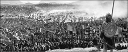
Kudüs’ü kaybeden Haçlılar, eskisinden daha büyük bir orduyla soluğu Filistin’de almakta gecikmedi. Dönemin en ünlü Kral ve şövalyelerini barındıran Haçlı ordusu, yine karşısında Sultan Selâhaddin’i bulacaktı. Destansı çarpışmalar, sonucu değiştirmedi. Kudüs, Müslümanların elinde kalmaya devam etti.
2 Ekim 1187 Cuma günü Miraç Kandili’nde, Kudüs, Sultan Selâhaddin’in hakimiyetini kabul ediyordu. Şehre giren Sultan, Mescid-i Aksa’ya geldi ve Haçlıların tahrip ettiği ilk kıblegâhı bizzat temizledi. Fetihin ardından kılınan ilk Cuma namazında hutbeyi irad eden Zekiyiddin Ali el-Kurasi, fethe katılan askerlerin oluşturduğu cemaate şöyle sesleniyordu: ‘Allah, kulları arasından sizi seçmemiş olsaydı, bu fazileti kazanamazdınız. Ne mutlu size! Rasûlullah’ın mûcizesi Bedir vak’aları, Hz. Sıddık’ın idealleri, Hz. Ömer’in fetihleri, Hz. Hâlid’in hücumları sizinle yeniden gerçekleşti! Allah Nebîsi Muhammed (a.s.) sizi en güzel övgü ile övdü. Düşman içine dalarak gösterdiğiniz kahramanlığın ecrini verdi. Ona yaklaşmak için döktüğünüz kanları kabul etti. Size, mutlu insanların karargâhı olan cenneti verdi.’
Tabi ki Kudüs’ün düşmesinin yarattığı şok dalgaları batıya ulaşmakta gecikmemişti. Kudüs’ün yeniden İslamlaşması, Haçlıları daha da öfkelendirmişti. Papa’nın çağrısıyla, daha büyük bir Haçlı ordusunun kurulması uzun sürmedi. Seferin finansmanı ise İngiltere’de uygulanan ‘Selâhaddin Öşrü’ vergisi ile karşılanıyordu. Üstelik bu kez, Hıristiyanların ordusu, oldukça flaş isimleri bünyesinde barındırıyordu. ‘Krallar Savaşı’ olarak bilinen III. Haçlı Seferi’ndeki orduların başında Alman İmparatoru Frederick Barbarossa, Fransa Kralı Philippe Auguste ve ‘Arslan Yürekli Richard’ olarak tarihe geçen İngiltere Kralı I. Richard vardı. Lakin Barbarossa, Kudüs’e ulaşamadan Silifke Irmağında boğulmuştu. Haçlı ordusu, şehrin kapısında dayandığında, aradaki muazzam güç farkı, İslam askerleri arasında tedirginliğe yol açmış gibiydi. Bu moral dağılmayı fark eden Selâhaddin’in ağzından tarihe geçen şu sözler dökülmeye başladı: ‘Mâdem ki ölümden korkuyoruz; niçin evlerimizde oturup çoluk çocuğumuzla zevk ve sefâ içinde yasamıyoruz? Bizim vazifemiz düşmanın azlığını ve çokluğunu mukâyese etmek değil, onun karsısına çıkmaktır!’
Selâhaddin’in ordusu, 7 Eylül 1179’da Kral I. Richard’ın ordusuyla Arsuf Savaşı’nda karşı karşıya geldi. Bu savaşta Selâhaddin yenildi. Selâhaddin ve Richard’ın mücadelesi, askeri düşmanlığın yanı sıra karşılıklı saygılı ve onurlu bir mücadele olarak da gerçekleşti. Richard yaralandığında Selâhaddin tedavi için kendi doktorlarını gönderdi. Arsuf Savaşı’nda da Richard atını kaybettiğinde Selâhaddin kendisine en iyisinden iki Arap atı ve ayrıca içeceklerini soğuk tutması için buzla birlikte meyve gönderdiği de söylenir. Richard ise Selâhaddin’e, kız kardeşini Selâhaddin’in erkek kardeşi ile evlendirme teklifinde bulundu-Kudüs de onların düğün hediyesi olabilirdi.
İki taraf arasındaki savaş, tüm şiddetine rağmen, iki tarafa da üstünlük imkanı tanımayınca, Kral Richard, Haçlılar adına ateşkes önermiş, 1 Eylül 1192’de imzalanan Ramla Antlaşması ile de Kudüs’ün geleceği belirlenmişti. Kentin yönetimi Müslümanların elinde olacaktı; ancak Hıristiyan hacılara da açık olacaktı. Anlaşmaya göre Latin Krallığına Tire’den Yafa’ya kadar uzanan bir bölge bırakılıyordu.
Selâhaddin, Richard’ın ayrılışından kısa bir süre sonra 4 Mart 1193’te Şam’da öldü. Hazinesi açıldığında ise cenaze masraflarını karşılayacak kadar bile varlığı olmadığı görüldü. Varlığını büyük kısmını hayır işlerine aktarmıştı. Hıristiyan saldırılarına karşı verdiği çetin mücadeleye rağmen, Selâhaddin Avrupa’da onurlu bir savaşçı olarak büyük bir ün kazandı. O kadar ki on dördüncü yüzyılda bile kahramanlıklarını anlatan bir şiir yazılmıştı. Dante de onu Limbo’daki değerli ruhlar arasına eklemişti. Her ne kadar farklı inançları olsa da Selâhaddin, Hıristiyan Lordlar tarafından, özellikle de Richard tarafından hep saygıyla anılmıştır. Richard, Selâhaddin’i büyük bir prens olarak övmüş ve kendisinin hiç şüphesiz İslam dünyasındaki en büyük lider olduğunu söylemişti.
Anlaşmadan sonra Selâhaddin ve Richard, birbirlerine saygı ifadesi olarak hediyeler gönderdi, ancak hiç yüz yüze karşılaşmadılar. Selâhaddin’in alicenaplığına bir örnek de 1191’in Nisan ayında bir Frank kadının 3 aylık çocuğunun kamptan çalınması ve bir pazarda satılması üzerine yaşanmıştı. Franklar, kadını şikâyetini Selâhaddin’e bildirmeye ikna etmiş; ardından da Selâhaddin çocuğu kendi cebinden ödediği parayla satın alarak kadına geri vermişti. İbni Şaddad bu sahneyi şöyle anlatır:
‘Çocuğu annesine verdi ve kadın onu alarak gözyaşları içerisinde bağrına bastı. İnsanlar kadını izliyorlar ve ağlıyorlardı ve ben de onların arasında duruyordum. Kadın çocuğunu biraz emzirdi ve Selâhaddin’in emriyle getirilen bir ata binerek kampa geri döndü.’
Üçüncü Haçlı Seferi sonrası Müslümanlar ve Hıristiyanlar arasında dini açıdan taassup azalmış, birbirlerine daha hoşgörülü davranmaya başlamışlardı. Bunda şüphesiz ki, iki taraf komutanlarının cephede sergiledikleri ‘ölümüne savaş, ama centilmenliği elden bırakma’ şeklinde özetleyebileceğimiz yaklaşımlarının da payı olmuştu. Haçlılar, Kudüs’ü aldıklarında 70 bin Müslüman’ı vahşice öldürmelerine karşı, Selahaddin Eyyubi, Kudüs’te adaletli davranmış ve halka zarar verilmemesi ve sivillere dokunulmaması konusunda kesin emir vermişti. Selahaddin’in bu tavrı, Haçlılar tarafından bile takdirle övülmüş, batıda bugün bile süregelen saygınlığının temellerini atmıştı.
İlham kaynağı olmaya devam ediyor
Selâhaddin, ‘dinin doğruluğu’ anlamına gelir. Bu yüzden de bu büyük asker ve devlet adamı, asırlar boyu Müslümanlara birçok yönden ilham kaynağı olmaya devam ede gelmiştir. Günümüzdeki Müslüman liderler de sık sık kendileriyle Selâhaddin arasında paralellik kurarak prestij devşirmeye çalışır. Bugün modern Irak’ta isimlerini Sultan Selâhaddin’den alan Tikrit’in de içinde bulunduğu Selâhaddin eyaleti ve aynı şekilde Erbil kentinde Selâhaddin Üniversitesi bulunur. Fransız yazar Rene Grousse da ünlü Sultan için ‘Alicenaplığı, dindarlığı ve fanatizm karşıtlığı, nezaketi kadar doğrudur. Bu özellikleriyle bizim vakanüvislerimize de model olması, ona Frankların Suriye’sinde de İslam dünyasında olduğundan pek de az olmayan bir ün kazandırmıştır.’ tespitinde bulunmuştu.
Her ne kadar kurduğu Eyyubiler saltanatı, kendisinden 57 yıl fazla yaşamış olsa da Selâhaddin’in Arap dünyasındaki mirası bugün hâlâ devam ediyor. 20. yüzyılda Arap milliyetçiliğinin yükselişiyle birlikte, özellikle Arap-İsrail çatışması çerçevesinde Selâhaddin’in kahramanlığı ve liderliği yeniden gündeme gelmişti. Filistin’i Avrupalı Haçlılardan kurtarması, Arapların Siyonizm’e karşı mücadelesine de ilham verdi. Dahası, Arap dünyasının ihtişamlı bir şekilde ve nispeten de olsa Selâhaddin’in liderliğinde birleşmesi, Cemal Abdül Nasır gibi Arap milliyetçiliğine vurgu yapan liderler açısından peşinde koşulan bir hedef olmuştu. Bu yüzden de Selâhaddin Kartalı, Mısırlı devrimcilerin sembolü oldu ve diğer bazı Arap devletleri tarafından da yaygın olarak kullanılageldi.
NOTLAR
- Tam adı Selâhaddin Yusuf İbn Eyyüb’dür. İslam dünyasında daha çok Sultan Selâhaddin olarak bilinir. Batılar ise kendisini çoğunlukla, ‘Zeki Selâhaddin’ anlamına gelen ‘Saladin the Wise’ olarak isimlendirmiştir.
- Kudüs’ü elinde tutmak için savaştığı düşmanı Kral I. Richard ile savaş esnasında hediyeleşmeleri, Doğu-Batı ilişkileri açısından ilginç bir noktadır. Selâhaddin, Richard’a at hediye edip meyve göndermiş, Richard ise buna karşılık, avcılıktan hoşlandığını bildiği Sultana iki adet şahin hediye etmişti.
- 4 Mart 1193’te Şam’da malarya veya menenjitten dolayı sabaha karşı hayatını kaybetti. Öldüğünde 57 yaşındaydı. 17 erkek ve bir kız çocuğu vardı.
- Kürtçenin dışında Arapça, Farsça,ve Türkçe biliyordu. İslam hukuku okumuştu. Spor yapmayı ve at üzerinde oynanan bir tür savaş oyunu olan çevganı çok severdi.
- Şam’daki Emeviye Camisi’nin avlusunda bulunan türbesi, İslam’ın bu şanlı sayfasını hatırlamak isteyenlerin uğrak mekanı olmaya devam etmekte.
İngilizlerin ‘Arslan Yürekli’ İngilizce bilmeyen Kralı
I. RICHARD
(1157-1199)
‘Kötü bir evlat, kötü bir koca ve kötü bir kraldı. Ama cesur ve ihtişamlı
bir asker olduğu tartışılmaz.’
İngiliz tarihçi Steven Runciman’ın
I. Richard adlı eserinden.
Savaşlardaki kişisel cesareti kendisine Coeur de Lion (The Lion-hearted/Aslan Yürekli) unvanını kazandıran I. Richard, III. Haçlı Seferi’ni yönetmiş, özellikle de Kudüs’ün hakimiyeti için Sultan Selâhaddin ile girdiği destansı mücadele ile, doğudaki bilinirliğini arttırmış, batıdaki şöhretini ise perçinlemişti. Her ne kadar ünü biraz romantik anlatılardan ve çoğunlukla da İngiliz edebiyatında rastlanan kahramanlık menkıbelerinden beslense de, Richard’ın savaş alanındaki başarıları yadsınacak gibi değildi.
8 Eylül 1157’de Oford’da İngiltere Kralı II. Henry’nin ve Aquitaine’den Eleanor’un oğlu olarak Beaumont Sarayı’nda dünyaya gelen Richard, gençlik günlerinde sarayın konforunun tadını çıkarmak yerine, askeri seferlerde heyecan peşinde koşmayı yeğlemişti. Öyle ki, 1172’de Aquitaine (Güney Fransa) dükü olan Richard, gençlik heyecanıyla kardeşleriyle bir olup babalarına karşı ayaklanmayı bile göze almıştı. Her ne kadar kardeşler, babalarının koltuğunu sarsamasa da, Richard’ın babasının gözündeki yeri değişmemişti. Çocuklarını destekleyen karısı Eleanor’a karşı o kadar merhametli olmayacak ve hücreye attıracaktı.
Richard, 1175’ten 1186’ya kadar geçen dönemde cesaretli bir savaşçı ve birçok iç ayaklanmayı bastıran zeki bir taktisyen olarak ününe ün kattı. Özellikle 1179’da Saintogne’de zapt edilemez olarak ünlenmiş ve çok iyi tahkim edilmiş Taillebourg kalesini ele geçirmesi ile destansı bir kişiliğe bürünmüştü. Abisinin 1183’te ölmesinin ve akabinde aile içinde yaşanan post kavgalarının ardından, suyun üstünde kalan kendisi olmuştu. Artık babasının tahtının varisiydi.
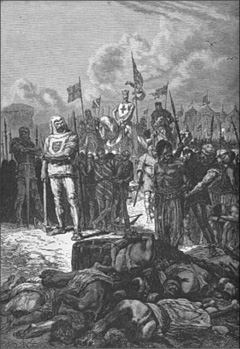
1187’de Kudüs’ün Müslümanların eline geçmesi ile birlikte oluşturulan III. Haçlı ordusunun en önemli kumandanlarından biri de İngiltere Kralı I. Richard olmuştu. Her zaman ön safta dövüşmesi, cesareti ve taktikleri ile kudretli bir asker olduğunu kanıtlamış olan Richard, başta Müslümanlar olmak üzere, düşmanlarının da saygısını kazanmıştı. Tasvir: Esirlerin idam edilişini izleyen Richard.
Tahta otursa da gözü hep kılıçtaydı
II. Henry’nin 1189’da ölmesiyle Richard, Normandiya ve İngiltere Kralı olarak tahtın tek sahibi olmuştu. Bununla birlikte, hiçbir zaman idarecilik yönü olmamıştı ve bundan sonra da olmaya niyeti yoktu. Onu en iyi tanımlayan sıfat, ‘romantik savaşçı’ olabilirdi. Nitekim her iki krallığı yönetme konusunda pek fazla iştahlı davranmadı; aslında babasının ölümünün ardından geçen on yıl içerisinde İngiltere’de sadece 6 ay kalmıştı. At sırtında kılıç sallamak, ona daha cazip geliyordu.
İnsanlık 1190 yılına yaklaşırken, kader, Richard’a, kendisine göre asil bir misyon yüklemişti. III. Haçlı Seferi’ne katılacak ve Kutsal Toprakları Müslüman ‹işgalcilerden› kurtararak ‘özgürlüğüne’ kavuşturacaktı. Bu uhrevi misyon onu büyülemişti. Neredeyse krallığının hazinesini boşaltacak oranda harcamalar yapmış, ek vergiler koymuş ve Kudüs’ü Selâhaddin’den almak için devasa bir ordu toplamıştı.
İngiltere’den büyük debdebe ile yola çıkarken, Kudüs’ün fatihi olarak Hıristiyanlık dünyasında sonsuza kadar yaşayacak bir efsane olmanın hayallerini kuruyordu.
Richard ve ordusu, 1190’da Filistin’e doğru kışı Sicilya’da geçirmek üzere yelken açtı. Sicilyalıların konuksever olmadıklarını görünce Messina’ya saldırdı ve güzellikle verilmeyeni, zorla aldı.
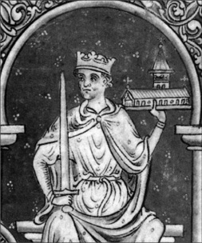
III. Haçlı Seferi dönemine ait bir tasvirde böyle resmedilen Richard, ölmeden önce kendisini yaralayan genç okçuyu bağışlamıştı. Onca savaştan canlı çıkan kralın çaylak bir okçu tarafından öldürülmesi, bir çok İngiliz tarihçisi tarafından, ‘karıncanın aslanı öldürmesi’ olarak yorumlanır.
Kıbrıs’ı alıp Tapınak Şövalyeleri’ne verdi
Richard’ın en büyük fetihlerinden biri de Kıbrıs olmuştu. Aslında Richard’ın Kıbrıs’ı almak gibi bir niyeti yoktu. Aşkı uğruna Akdeniz’in bu adasını aldık desek, yalan olmaz. Şöyle ki, Richard, kendisinden önceki haçlı ordularının aksine karadan değil, deniz yoluyla Kudüs’e gitmeyi planlıyordu. Denizden Müslümanların kontrolündeki Akka’ya çıkacak, şehri bir lojistik üssü haline getirecek, oradan da Kudüs’e yürüyecekti. Richard rotası üzerindeki Rodos’ta konaklamıştı. Nişanlısı Navara’lı Berengaria ve kızkardeşi Joanna’yı taşıyan gemi Kıbrıs açıklarında fırtınaya yakalanınca, son anda onların imdadına yetişti. 6 Mayıs 1191’de donanmasıyla Limasol’a çıkarak şehri ele geçirdi. Ada bu esnada Bizans valisi Isaakios Komnenos’un hakimeti altındaydı. Komnenos’un gücü, Richard’ı durdurmaya yetecek gibi değildi. Kaçarak Kolossi’ye sığındı ve gerilla savaşı yürütmeye başladı. Taraflar arasındaki görüşmelerden sonuç çıkmayınca Richard, Tremetusia’daki savaşta, Komnenos’u tarihe gömdü. Bu arada adadaki Roman Katolikleri de Richard’ın haçlı ordusuna katılmıştı. İngiltere Kralı, Kudüs Kralı Guy de Lusignan’ın da desteği ile adayı tamamen hakimiyetine aldı. Kıbrıs artık Haçlı orduları açısından güvenli bir liman ve lojistik merkezi olmuştu. Richard bunca işin arasında Limasol’da nişanlısıyla evlenmeyi de ihmal etmemişti. Kudüs’e doğru ordusuyla adadan ayrılan Richard, adayı ünlü Tapınak Şövalyeleri’nin kontrolüne bırakacak, onlar da, krallığını Selahaddin Eyyubi’ye kaybedecek Guy de Lusignan’a satacaktır. Böylelikle adada, Osmanlı fethine kadar sürecek Latin krallıklarının temeli atılmış olur…
Richard, ağırlığını koyarak Fransızları ve Almanları da kendi ordusuna kattı ve iki yıldır sürmekte olan Akka kuşatmasının kumandasını devraldı. Altı hafta içerisinde birleşmiş ve güçlü ordusuyla Müslümanları yendi ve kente girdi. Acımasız bir şekilde 27 bin esiri kılıçtan geçirdi.
Akka güvene alındıktan sonra Richard, Sultan Selâhaddin tarafından 1187’de ele geçirilen Kutsal Şehir’i geri almak için Kudüs’e yürüdü. Bu sefer sırasında Richard, strateji ve lojistik konusundaki yeteneklerini gösterdi: yaklaşık 50 bin kişilik ordusunu sahile paralel bir şekilde yürüterek, donanmasıyla kurduğu köprü vasıtasıyla besledi. Bu esnada ordusunu taciz eden küçük çaplı Müslüman akıncılar karşısında askerlerinin dağılmamasını garanti altına almak için, taciz saldırısı yapan akıncıların takip edilmesini yasakladı. Böylelikle askerlerinin pusuya düşürülmesinin önünü almış oluyordu. Bu taktiğini 7 Eylül 1191’de Arsuf Savaşı’nda değiştirerek, top yekun saldırı emri verdi. Selâhaddin’in ordularını yenmeyi başarmış, 7 bin Müslüman savaşçıyı öldürtmüş, kendisiyse 7 yüz civarında asker kaybetmişti. Her ne kadar Müslümanlara büyük bir darbe vurmuş olsa da, Selâhaddin’in emri ile su kuyularını tahrip eden askerleri, Richard ve askerlerine Kudüs yolunda büyük bir darbe vurmuştu.
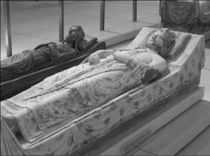
41 yaşında ölen Richard’ın bedeni Fransa’nın dört bir yanına dağıtılmış, iç organları okla yaralandığı Chalus Şatosu’na, kalbi Rouen’e ve bedeninin geri kalanı da Fontevraud’a gömülmüştü. Foto: Richard’ın Fontevraud Manastırı’ndaki lahiti.
Selâhaddin ile yenişemediler
Richard, bir yıl daha uğraşmasına rağmen Kudüs’ü Selâhaddin’den geri alamadı. Zira kendisi ordusuna yiyecek ve su takviyesinde bulunmakta zorluk çekerken, bilge rakibi Selâhaddin , kazananı belirleyecek nihai bir savaşa girmiyor, savunmada kalıyordu. Hesabı basitti; çöl şartları, lojistik sıkıntısı çeken düşmanını pes ettirecekti. Zaman Selâhaddin’i haklı çıkardı. Richard’ın önerisi ile taraflar 1 Eylül 1192’de bir anlaşmaya vardı. Ramla Antlaşması ile Kudüs, kapıları Hıristiyan hacılara açık kalmak kaydıyla, Müslümanların hakimiyetinde kalmaya devam edecek, Richard’ın temsil ettiği Latin Krallığı Tire’den Yafa’ya kadar uzanan bölgede etkisini sürdürecekti.
Kudüs’ü geri almakta başarılı olamayan Richard, büyük macerasından eli boş bir şekilde Avrupa’ya geri dönerken, Venedik açıklarında gemisinin batmasıyla Avusturya İmparatoru Leopold’un eline esir düşmüş, Leopold da onu, Kutsal Roma Germen İmparatoru VI. Heinrich’a teslim etmişti. Heinrich, kralı, 4 Şubat 1194’te, annesi Düşes Aliénor d’Aquitaine’in ödediği oldukça büyük miktarda bir fidyenin ardından serbest bıraktı. Tabiî ki para, kralları olarak pek başlarında bulunmadığı İngiliz halkından toplanmıştı.
Bu oldukça çileli seferden dönen Richard 17 Nisan’da bir kez daha taç giyerek unvanını tazeledi ama yine yerinde durmaya niyeti yoktu. İngiltere’den ayrılarak Normandiya’ya yelken açtı. Hayatının geri kalanını burada geçirmeyi planlıyordu.
Normandiya’da Gaillard adlı şatosunu inşa ettirirken, bir yandan da, birlikte III. Haçlı seferine çıktıkları Fransa Kralı Philippe Auguste ile savaşıyordu. Bu süreçteki çarpışmaların birinde, Chaluz şatosunu kuşatmış, her zaman olduğu gibi askerlerinin önünde kılıç sallarken omzuna isabet eden bir okla yaralanmıştı. Yarası kısa zamanda kangrene dönüşen Richard, 6 Nisan 1199’da annesinin kollarında öldüğünde, Ortaçağ Avrupa’sının en çok kılıç sallayan krallarından biri olarak dünyaya veda etmiş oluyordu.
NOTLAR
- Savaşçılığı ve cesareti ile olduğu kadar daha çok Müslümanlarla savaşması ve Akka kalesinde olduğu gibi birçok sivil Müslüman’ı katlettirmesi’yle de ‘Arslan Yürekli’ lakabına layık görülen Kral Richard’ın Türkçe kaynaklarda ve birçok İslam ülkesinde de aynı şekilde anılması ilginçtir.
- Döneminde yaşayan diğer hanedan üyeleri gibi Fransız asıllıydı. 6 Temmuz 1189’da babası II. Henry’nin ölümü üzerine İngiltere Kralı oldu.
- Her ne kadar bir dönem hakimiyeti altında tuttuğu Kıbrıs’ta Sancho VI’nın kızı Berengaria ile evlenmiş olsa da, homoseksüel olduğu iddiaları hiçbir zaman gündemden inmedi.
- Eşi Kraliçe Berengaria, hiçbir zaman İngiltere’ye ayak basmadı. Kraliçe ünvanını taşıdığı sekiz yıl boyunca Kıbrıs, İtalya ve Fransa’da yaşadı.
- İngiltere’nin kralı olmasına rağmen, yaşamının yüzde 90’ınına varan kısmını ada dışında geçirdi. Uzun süreli olarak sadece iki kez, o da taç giyme törenleri için adada bulundu. Kimi tarihçilere göre, İngilizce konuşamayan bir İngiltere Kralı’ydı.
- Ağırlık ve uzunluk ölçülerinin oluşturulmasına yönelik kanunu oluşturan ilk kişi oldu.
- Özellikle Sir Walter Scott’un, kendisini Robin Hood ile birlikte resmettiği Ivanhoe ve The Talisman isimli eserler başta olmak üzere, hayatı, birçok film, şiir ve masala, abartılı bir şekilde konu edilmiş olsa da, savaşçılığı ve her zaman ordusunun en önünde kılıç sallamış olması, su götürmez bir gerçekti.
- Son dönem İngiliz tarihçileri tarafından, İngiltere’ye gereken önemi vermeyen ve ülke kaynaklarını gereksiz askeri maceralarda harcayan sorumsuz bir kral olmakla suçlandı.
Moğol steplerinden dünyayı fethe çıktı, Hazar’dan Japonya’ya uzanan bir imparatorluk bıraktı
CENGİZ HAN
(1162-1227)
“Orduyla ilgili mevzularda hep en ön saflardayımdır. Savaşta da asla arkada kalmam. Yedi yılda büyük bir iş başardım ve bütün Dünya’yı bir imparatorluk
altında birleştirdim.”
Cengiz Han’ın, Taocu rahip Ch’ang Ch’un’a yazdığı mektuptan.
1162’de Asya içlerinde, Moğol steplerinde bir yerde bir çocuk doğdu. Doğduğunda avucunun içi kanlıydı. Bu, ilerde çok büyük bir savaşçı olacağı şeklinde yorumlandı. Adeta göklerden gelen bir işaretti. Hayatı bir efsane olacaktı. Çocuğun adı, Timuçin’di. Ama tüm dünya onu Cengiz Han olarak tanıyacaktı. Birçokları açısından hikaye gayet sadeydi. Cengiz Han, şeytanın insan vücuduna girmiş haliydi. Milyonlarca insanı katletmiş bir barbardan başka bir şey değildi. Oysa Cengiz Han’ın gerçek kimliği bu anlatılanların da ötesinde, daha derinlemesine incelenmeyi hak eden renkler barındırıyor. Okuma yazması olmayan bu bozkır savaşçısı, nasıl olmuştu da Moğolistan’ın göçmen kabilelerinden bu kadar güçlü bir ulus çıkarabilmişti? Nasıl olmuştu da başıbozuk Moğol atlılarını disiplinli ve acımasız bir savaş makinesine dönüştürebilmişti? Nasıl olmuştu da akıl almaz taktikler kullanan ve gelişmiş silahlara sahip bir ordu kurarak, Avrupa’yı fethe çıkmıştı? Ve neden ölüm döşeğinde son nefesini verirken misyonunu tamamlayamadığından yakınmıştı?
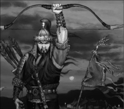
Asya’yı birleştiren Cengiz Han, dolaylı da olsa bu kıtadaki ticareti arttırmış, Asya ve Avrupa arasında bilgi ve tecrübe akışının yolunu açmıştı. Orta Asya’da yaşam süren Türk boyları Moğol akınlarının açtığı kapıdan girerek, Anadolu olmak üzere birçok yere göç etmeye başlamışlardı.
1215’te Moğol savaşçısı Cengiz Han, ordusunu Çin’in başkenti Pekin’e sürdü. Oraya ulaşana kadar Asya’nın sayısız şehrine diz çöktürmüştü. Şimdi ise karşısında 12 metre yüksekliğinde ve 40 km uzunluğunda bir setle korunan heybetli Pekin uzanıyordu. Surların önündeyse, ateşli mancınıkları ve karşı konulmaz okçu birlikleriyle, tarihin gördüğü en gelişmiş ordulardan biri vardı. Cengiz han öncelikle şehri kuşattı. Ardından topyekun hücum emriyle kıyamet koptu. Moğollar saldırı sırasında esir aldıkları düşmanları kendilerine kalkan yapmayı da ihmal etmiyordu. Ayrıca görkemli surları al aşağı etmesi için taş atan mancınıklarla duvarları dövmeye başlamışlardı. Pekin sallanıyordu. Cengiz Han zaferinin kokusunu almaya başlamıştı…
“Babanın düşmanları düşmanın olsun”
Cengiz Han, doğduğunda kendisine Timuçin ismi verilmişti. Henüz dokuz yaşındayken hayatını değiştirecek haberi aldı. Babası düşmanları tarafından zehirlenmişti. Annesi küçük Timuçin’e dönerek; “Babanın düşmanları, her zaman kalbinin düşmanları olsun” dediği andan itibaren çocukluk onun için geride kalan bir hatıra olacaktı. Ailenin en büyük erkek evladı olarak steplerin ortasında yaşam mücadelesi veren kabilesinin tek başına bir şey yapamayacağının bilincindeydi. Diğer kabilelerle bir araya gelip güç birliği yapmanın kaçınılmaz olduğunu görmüştü. Bunu yapmanın tek yoluysa evlilikten geçiyordu. Önde gelen kabilelerden birinin reisinin kızı olan Börte ile evlendi.
Dönemin Orta Asya steplerinde savaşçılık ve yağmacılıkla geçinen Moğol kabileleri arasında geçerli olan tek bir kanun vardı: Kılıcın kanunu. Birisi bir şey istediği zaman, kılıcıyla söker alırdı. Ve şimdi Timuçin’de, bu Moğollardan birinin, babasını zehirleyen adamın istediği değerli bir şey vardı: Karısı. Kampı basıldı, kabilesi kılıçtan geçirildi. Timuçin Börte‘yi son gördüğünde, düşman savaşçılarından birinin atının terkisine atılmış, götürülüyordu. Timuçin için tek bir yol vardı: Kaçmak. O an aklından geçen düşünce, ilerleyen yıllarda bir asker olarak benimseyeceği düsturlardan biri olacaktı: “Sadece bir aptal, kazanamayacağı belli olan savaşı sürdürür.”
Timuçin’in bu zorlu günlerde yanında güvenebileceği tek bir dostu vardı: Camoka. Küçükken birbirlerine her zaman destek olacaklarına dair gizli bir yemin etmişler, kan kardeşi olmuşlardı. Camoka’nın kendisine katılması ile gücü artan Timuçin, Börte’yi kaçıran kabilenin kampını basmakta gecikmedi. Karısını kurtarıp tüm kabileyi kılıçtan geçirdiğinde henüz yirmi yaşındaydı. Ve Moğolistan’ın en önemli kabilelerinden birini ortadan kaldırmıştı…
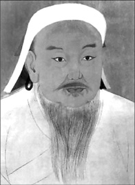
Sadeliğe, cesarete ve sadakate çok önem veren Moğol Hanı hakkında üzerinde mutabakata varılmış net bir fiziksel tanım yok. Bununla birlikte Persli vakanüvis Minhaj al-Siraj Juzjani, bizzat tanışma imkanı bulduğu Cengiz Han hakkında şu notları almıştı: “Boyu uzundu, yapılıydı, güçlü bir vücudu vardı. Uzun ve beyazlaşmış sakalları, kediyi andırır gözleri, enerjik bir yapısı vardı. Zeki, kavrama gücü yüksek, etrafına korku salan bir kasap, ama aynı zamanda adil, cesur, dehşetli ve kana susamış bir zalimdi.”
Başlangıçta liderliği paylaşan iki kan kardeş arasında belli belirsiz bir gerilim de yok değildi. Her ikisi de önde gelen kabile reislerinin çocuklarıydı ama hayatın sıkıntıları ile boğuşan ve bunlardan kendine bir ders çıkaran Timuçin’in liderlik özellikleri daha ağır basıyordu. Liderliğin doğuştan gelen bir erdem değil, savaşarak hak edilen bir değer olduğuna, asaletin de cesaretli savaşçılara mahsus olması gerektiğine inanıyordu. Diğer kabile reisleriyle yapılan toplantılarda (kurultay) bu görüşünü açmasıyla birlikte, doğuştan asil bir kabileye mensup Camoka’nın kendisine bakışı da değişmeye başlamıştı. Onlara kalırsa Timuçin yerleşik Moğol değerlerine aykırı düşüyordu.
Timuçin’in tek değer verdiği; erkeğin kalbinde taşıdığı cesaretti. Yine kurultaylardan birinde bir büyücünün Timuçin’e ‘tanrıların yeryüzündeki temsilcisi’ olduğunu söylemesi ve büyük işler başaracağını iddia etmesi ile Camoka’nın can dostuyla yaşadığı fikir ayrılığı kıskançlığa dönüştü. Börte, günün birinde kan kardeşinin kendisinin üzerine yürüyeceğini söyleyerek Timuçin’i uyardı. Oysa kardeş kanı dökmek Timuçin’in yapmadığı bir şey değildi. Küçük yaşta da üvey kardeşlerinden biri ile av etinin paylaşılması yüzünden kavga etmiş ve onu öldürmüştü. Üstelik bundan hiçbir zaman pişmanlık da duymadı. Ve Camoka’yla yolları ayrıldı.
“Gökler adına yemin ederim ki asla yenilmeyeceğim”
İki yıl sonra Börte’nin korktuğu gerçek oldu. Camoka Timuçin’i pusuya düşürdü. Adamları hazırlıksız, eğitimsiz ve sayıca az olan Timuçin, utandırıcı bir hezimete uğramış, en önemli kumandanları, Camoka’ya esir düşmüştü. Camoka esir aldığı bu kumandanları canlı canlı suda kaynattı! Timuçin bu haberi aldığında, tarihe geçen o yeminini edecekti:
“Gökler adına yemin ederim ki intikamımı alacağım ve bir daha hiç kimse beni mağlup edemeyecek!”
O andan itibaren Timuçin, Orta Asya steplerinde devrim olarak görülen icraatlarına başlıyordu. Öncelikle elit bir komutanlar sınıfı oluşturdu. Karşı konulmaz bir savaş makinesi yapmayı hedefliyordu. Moğolların başlıca silahları, beş yüz metre menzili olan oklardı. Timuçin, çocuklar da dahil olmak üzere herkese ok atmayı ve ata binmeyi zorunlu hale getirdi. Eski kabile geleneklerine dayanan savaş alışkanlıklarını yıkarak, yakın dövüş de dahil olmak üzere, daha gelişmiş savaş teknikleri üzerinde yükselen modern bir ordu yapılanmasına gitti. Artık hazırdı. 1204 yazında batıya doğru yola çıktı. Kan kardeşiyle hesaplaşmasının zamanı gelmişti. Yüzleşmelerinin sonucu, Moğol kabilelerinin geleceği açısından önemliydi. Çarpışmanın gecesinde Timuçin kumandanlarını topladı ve onlara şöyle seslendi:
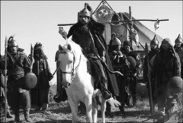
Tarihteki en büyük tek parça imparatorluğu kuran Moğollar, Çin ve Pers İmparatorluklarından sonra, atlarını Avrupa’ya doğru sürdü. 13. yüz yıl Avrupalılarına göre Moğol orduları cehennemden geliyordu. Avrupa’da yaygın olan bir başka inanışa göreyse de Moğol savaşçıları, Yunan mitolojisindeki ölüler diyarı Hades’te günahkârların cezalandırıldığı Tartarus’tan gelen Tatarlardı.
“Bir kabile, ortadan rahatça kırılabilecek tek bir ok gibidir. Ama bir çoğu bir araya gelirse kırılmaz. Kırılmamıza izin vermeyin!”
Tabiî ki zafere giden yol, sadece motivasyon içerikli konuşmalardan geçmiyordu. Timuçin, psikolojik savaşın şartlarını da yerine getiriyordu. Her bir askerinden beş ateş yakmasını istedi. Camoka’nın casuslarının kendisini izlediğini biliyordu. Camoka’ya haber gitmekte gecikmedi: “Efendim, Timuçin’in gökteki yıldızlardan daha çok askeri var!”
Gün ışığı ile birlikte iki kan kardeş, ordularının başında savaş pozisyonu aldı. Camoka, ilerleyen yıllarda 20 milyon km kare toprağı fethedecek bir orduyla yüzleşen ilk komutan olmak üzereydi.
Timuçin’in tatbikatları işe yarayacaktı. Düzenli saflar halinde hücuma geçen atlıların büyük bir disiplin içinde savurduğu oklar dalgalar halinde Camoka’nın ön saflarını dövüyor, arkadan gelen süvariler, düşman hatlarını yarıyordu. Bu arada bazı birliklerini yedekte tutan Timuçin, savaşın en sıcak anında onları da sahaya sürdü. Yedekler, ikili atlılar halinde, yanan kütükler taşıyarak Camoka’nın adamlarını ateşe verdi. Bu arada taktik gereği Timuçin’in askerlerinden bazıları Camoka’nın adamlarını arkalarına takarak kaçmaya başlamıştı. Kovalayanlar tuzağa düştüklerini anlamaya fırsat bulamadan, tepelerin üzerine mevzilenmiş okçular tarafından bertaraf edildiler. Askerlerinin ormanda kurumuş dallar gibi cansız bedenlerinin savaş alanını kapladığını gören Camoka’ya kaçmaktan başka seçenek kalmamıştı. Bir süre sonra, çıkarlarının Timuçin’le birlikte olmaktan geçtiğini anlayan iki generali tarafından teslim edilene kadar da ortalarda görünmeyecekti. Liderlerini teslim ettikleri için ödüllendirilmeyi bekleyen iki generale ihanetlerini canlarıyla ödeten Timuçin, kendisiyle bir araya gelmeyi reddeden kan kardeşinin son arzusunu da yerine getirdi. Camoka, boynu kırılarak öldürüldü.
Timuçin değil; o artık Cengiz Han
Bir numaralı rakibin ortadan kalkmasıyla Moğol tarihinde daha önce olmamış bir şey oluyor ve ilk kez biri, tüm Moğol kabilelerinin lideri olarak ortaya çıkıyordu. 1206’da toplanan kurultayda bu yeni lideri onore etmek için yeni bir unvan bulundu: Cengiz Han! Diğer bir deyişle ‘Tüm insanların lideri’ ya da ‘Evrensel Kral’.
Bu taltife rağmen Cengiz Han, Moğol halkının kaderinde oynayacağı rolü tamamladığı kanaatinde değildi. Bir milleti tek bir çatı altında toplamıştı ama şu an önünde daha büyük bir tehdit vardı: Çin.
Çinlilerin hemen yanı başlarında böylesi güçlü bir lidere göz açtırmayacaklarını biliyordu. O halde savaşı onların kapısına götürecekti. Elli bin kişilik düzenli ordusuyla altı yıl sürecek seferine işte böyle başladı. Gobi çölünü geçen Cengiz Han, Kuzey Çin’i fethetti. Oysa Kuzey Çin İmparatoru, yaklaşan Moğol ordusundan haberdar olmadan gönderdiği mesajında Cengiz Han’a şöyle sesleniyordu: “Bizim imparatorluğumuz uçsuz bucaksız bir deniz. Sizinki ise bir avuç kum. Nasıl olur da sizden korkmamızı beklersiniz?” Kum, denizi yutmuştu.
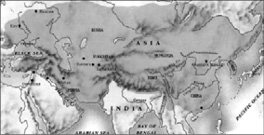
Cengiz Han öldüğünde imparatorluğunun sınırları Pasifik Okyanusu’ndan Polonya’ya kadar uzanıyordu. Oğulları onun misyonunu devam ettirecek ve imparatorluğun sınırlarını iki katına çıkartarak, dünyanın en büyük kara imparatorluğuna imza atacaklardı.
Çin’in içlerine doğru ilerleyen Cengiz Han’ı bekleyen bir başka tehlike de, o dönemde doğunun en gelişmiş toplumlarından biri olan Çinlilerin geliştirdiği ilginç savaş manevralarıydı. Moğol ordusun yürüyüş istikametine serilen minik çiviler, Moğol atlarının canını oldukça yakacaktı. Buna rağmen Cengiz Han, hız kesmedi. Bölgedeki kabilelerin de kendisine iştirak etmesiyle büyüttüğü devasa ordusu ile Çin’in kalbine doğru yürüyüşünü sürdürdü. Bu arada iki yabancı kültür birbirini keşfediyordu. Çinliler, ömürlerinde ilk kez Moğol savaşçıları görüyorlardı ama bir daha asla unutmayacaklardı. Moğol ordusu, yakıp yıkarak, ezip geçerek ilerliyordu. Doğulu kaynakların büyük savaşçı ve büyük bir lider olarak resmettiği Cengiz Han, buna karşın batılı kaynaklarda barbar bir savaşçı olarak tasvir edileceği işler yapıyordu. Söz gelimi savaş muhabiri ve yazar William Weir’e göre Cengiz Han, Çin seferinde yanındaki savaşçılara şöyle seslenmişti: “Dünyadaki en büyük zevk nedir bilir misiniz? Düşmanı ezmek, önünüze katıp kovalamak, eskiden onların olanları almak, onları övenlerin ağıtlarını duymak ve en güzel kadınlarına sahip olmak!”
“Adamlarım şimdi kurtlar gibi savaşacaklar”
Üç yüz elli bin kişilik nüfusuyla Kuzey Çin’in başkenti Pekin, dönemin en gelişmiş şehirlerinden biriydi. Görkemli sarayları, tapınakları, ipek dolu çarşılarıyla cıvıl cıvıl bir görüntü veren şehri almayı çok isteyen Cengiz Han’ın önünde tek büyük bir engel vardı. 12 metre yüksekliğinde, 40 km uzunluğunda ve dokuz yüz kule tarafından korunan devasa bir duvar. Cengiz Han ve ordusu açık steplerde savaşmaya alışıktı. Önlerinde yükselen bu duvarsa aşılmaz bir görüntü veriyordu. “Adamlarıma rüzgar hızında saldırmayı öğrettim, şimdi kurdun çevikliği ile savaşacaklar” diyen Moğolların lideri, askerlerine duvarın yakınlarında kamp kurmalarını emretti. Bu arada kendi safına geçen Çinli mühendislerden nasıl portatif saldırı kuleleri ve mancınıklar yapılacağını öğreniyor, kuşatma savaşına hazırlanıyordu. Zaman Moğolların lehine işliyordu. Şehri kuşatan Moğol ordusu, seferlerden elde ettiği erzakla hayatını idame ettirirken, kuşatma altındaki Pekin’de açlıktan ölümler görülmeye başlamış, hatta kimi kayıtlara göre yamyamlık vakaları bile tespit edilmişti.
Büyük saldırı için beklenen an gelmişti. Cengiz Han’ın emri gayet netti: “Teslim olanların canı bağışlansın, direnenleri öldürün.” Aylardır devam eden kuşatma ve bunu takip eden kıtlığa rağmen, Moğolları bekleyen oldukça donanımlı bir Çin ordusu vardı. Saldırı başladı. Düşmanın ilk etapta yoğun bir okçu saldırısıyla karşılık vereceğini hesaplayan Cengiz Han, koruma sağlayacak savaş arabalarını duvarlara yaklaştırma işini, önceki seferlerde ele geçirilen ve gözden çıkarılmalarında sakınca görmediği savaş esirlerine vermişti. Beklediği gibi oldu. Yağmur gibi yağan Çin oklarına rağmen, duvar menziline girecek kadar yaklaşmışlardı. Moğollar, ateşli oklarla karşı saldırıya geçti. Hemen peşinden duvarda gedik açmayı hedefledikleri taş atan mancınıkları devreye soktular. Lakin, oldukça zengin bir savaş kültürüne sahip Çinliler, boş durmuyordu. Ham petrol ve değişik kimyasallardan yaptıkları yangın bombalarını mancınıkla Moğol hatlarına savurmaya başladılar. Bu ilk kez karşılaştıkları ateş bombardımanına rağmen Moğol İmparatoru, askerlerine topyekun hücum emri verdi. Ne pahasına olursa olsun duvarlar geçilmeliydi. Bir kez daha Çinli esirler ön saflara sürüldü. Onların ateş yağmuruna rağmen surlara dayadıkları merdivenlerden Moğol askerleri yukarı doğru akmaya başlamıştı. Aynı esnada büyük ağaç kütükleriyle de surda delik açmaya çalışıyorlardı. Şehri gözleri önünde düşen Çinli komutana, kendi kılıcıyla intihar etmekten başka seçenek kalmamıştı. Zaferden emin olan Cengiz Han, şehrin içlerine doğru atını sürerken, askerleri emrini yerine getirmek için harekete geçti. Moğolların Pekin’i yağmalayıp, ateşe verdikten sonra tam olarak teslim alması bir ayı bulacaktı. Oluk gibi kan akmıştı. Bir yıl sonra şehri ziyaret eden Batılı diplomatlar, ‘kemikten dağlar’ ve ‘kan ve insan etiyle kayganlaşmış sokaklar’ gördüklerinden bahsedeceklerdi.
Pekin’de yaptıkları ile şöhreti Asya sınırlarını aşmaya başlayan Cengiz Han, Karakum’u başkent olarak seçerek, yerleşik hayata geçilmesi yönünde adımlar attı. Kültürel açıdan bir cazibe merkezi olmasını istediği şehrin, aynı zamanda milletinin zenginliğinin sembolü olmasını da istiyordu. “Ormanlardaki ağaçlar kadar çok olan halkımın, güzel çadırlarda yaşamasını, güzel atlarını uçsuz bucaksız steplerde sürmelerini sitiyorum.” diyen İmparator, kurumsallaşma atağına geçti. Çin ordusunun teknik birikimini ordusuna adapte etti. Çinli fizikçilerin kılavuzluğunda bir tıbbi müdahale birliği kurdu. Bu arada kendi karar ve kurallarının da kayıt altına alınmasını emretti. Moğolların köle olarak kullanılmasını yasaklarken, her kabileye kendi hakimiyet alanı olarak kullanacağı topraklar paylaştırdı. Bir yandan da bir hukuk düzeni oluşturmaya çalışıyordu. Okuma yazması olmayan bir halk olan Moğollara rağmen yazının ne kadar büyük bir silah olduğunu kavrayan Moğol lideri, kendi mirasının ve yaptıklarının da yazıya dökülmesini emretmişti. İmparatorluğu, bizzat kendisinin rol aldığı sivil ve askeri uygulamalar sonucu ortaya çıkan ‘Yassa’ ile yönetilmeye başlandı.
Elçisinin kellesine karşılık bütün Pers İmparatorluğu
Bir süre sonra seferlerine yeniden başlayan Cengiz Han, bu kez gözünü batıya çevirdi. Birçok ülkeye elçiler yolladı. Hakimiyeti altındaki uçsuz bucaksız steplerde her 40 km’ye bir mesaj kulesi düşecek şekilde geniş bir haberleşme ünitesi kurdurdu. Böylelikle emirleri kısa zamanda her yere ulaşabiliyordu.
1218 yazında Perslere gönderdiği mesajlardan birine karşılık geldi; tarihin akışını değiştirecek bir çuval. Çuvalı açan Cengiz Han, Perslere yolladığı elçisinin kesik başıyla göz göze geldi. Anlaşılan Perslerin Pekin’de olan bitenlerden haberi yoktu.
Daha elçinin kesik başı defnedilmeden, İki yüz elli bin kişilik Moğol ordusu yola koyulmuştu bile. Emri üzerine teslim olmayı reddeden Pers şehirleri ateşe verilip, ahalisi kılıçtan geçirildi. Moğollar Pers diyarını ele geçirdiklerinde, elçinin kellesine karşılık kellesinden olanların sayısı neredeyse bir milyona ulaşmıştı! Cengiz Han, Perslere diz çöktüren ordunun bir bölümüne yeni bir görev verdi: “Batıya doğru, gidebildiğiniz kadar gidin!”
Moğollar, böylelikle Avrupa içlerine doğru akmaya başladılar. Bu Avrupa’ya yaptıkları ilk sefer değildi, son da olmayacaktı. Cengiz Han’ın İmparatorluğu, artık Büyük İskender’inkinden dört, Romalılarınkinden iki kat daha büyük bir genişliğe ulaşmıştı! Ama bu bile Cengiz Han’ın iştahını kesmeye yetmedi. Daha fazlasını, belki de ordusunun bile kendisine veremeyeceği bir şeyi istiyordu: Ölümsüzlüğü. Batılı kaynaklar Moğol Liderin, bu amaçla devrinin önde gelen
Taoist rahip Ch’ang Ch’un’dan kendisine ölümsüzlüğün sırrını söylemesini istediğini yazar. Ch’un’un bunun imkansız olduğunu söylemesi ile birlikte Cengiz Han, inanç ile arasına mesafe koyacaktır.
“Dünya büyük… Hayatım kısa…”
Yenmek için yanıp tutuştuğu ölüm, 1225’de Hsi-Hsia Krallığı’na karşı sefere çıkan Moğol liderini, krallığın düşmesinden iki gün önce yokladı. Bu seferde hastalan Cengiz Han, bundan iki yıl sonra, Tangut seferi esnasında 1227 yılının 18 Ağustos’unda öldü. Ölüm kendisini teslim almak üzereyken, hasta yatağının etrafına dizilenlere şöyle sesleniyordu:
“Sizler için büyük bir imparatorluk fethettim. Ama hayatım tüm dünyayı almama yetecek kadar uzun değil. Şimdi onu size bırakıyorum.”
Gözlerini son kez kapadığında Pasifik Okyanusu’ndan Polonya’ya kadar uzanan topraklarda, Moğol bayrağı dalgalanıyordu. Ölümünün ardından yerini oğlu Ögeday aldı. Hayatı boyunca kendisinin dünyayı fethetmekle görevlendirilmiş seçilmiş kişi olduğuna inanan Cengiz Han’ın kehanetini kısmen, ölümünden yıllar sonra imparatorluğun sınırlarını neredeyse iki katına çıkartan oğulları gerçekleştirecekti. Oğulları Rusya, Polonya ve Macaristan’ı alarak, Avrupa içlerine doğru ilerledi. Torunu Kubilay Han, Çin, Türkistan, İran ve Rusya’yı yönetti. Cengiz’in ölümünden yüz yıl sonra neredeyse tüm Avrupa, Moğol hakimiyetine girmişti.
Cengiz Han’ın kudreti sadece parlak askeri kariyerinden, imparatorluğunun sınırlarından ya da dillere destan acımasızlığı ve savaşçılığından kaynaklanmıyordu. Bir süreliğine de olsa Doğu’yla Batı’yı birleştirmişti. Karavanlar ve kuryeler uzunca bir süre imparatorluğunun sınırları içersinde rahatça seyahat edebilmişti. Avrupa, kağıt ve barutla onun döneminde tanıştı. Fikirler ve mallar, serbest dolaşım imkanına kavuştu.
NOTLAR
- Savaş meydanlarındaki başarısında casusları ve habercileri sistematik şekilde kullanmasının payı büyüktü.
- Mezarının yeri bilinmesin diye, defnine katılan herkesin öldürüldüğü söylenir. Halen bile gömüldüğü yere dair en ufak bir iz yoktur. Bununla birlikte, Moğolistan’daki Burhan-Haldun dağları arasında bir yere gömüldüğüne inanılmakta.
- Hayatı boyunca 20 milyon kişiyi öldürdüğü iddia edilir. Moğollara göre büyük bir kahramanken, Batılılara göre ‘Ortaçağ Hitleri’, savaşçı bir barbardır. Türkler ise, Batılıların ‘Türk Moğolu’ olarak gördüğü Cengiz Han’a kısmen sempati ile bakar.
- Amerikalı tarihçi Michael H. Heart’a göre tarihin en etkili 100, National Geographic kanalına göreyse de tarihin en önemli 50 siyasi liderinden biriydi.
- Şamanizm’e gönül vermişti. Hayatının bazı evrelerinde Budizm ve Taoizm ile de ilgilendi.
- Komünist idare altındaki Moğolistan’da bir tabuydu. Komünizmin çökmesi ile bağımsızlığını kazanan Moğolistan’ın sembolü oldu.
- Hint lider Nehru, İngiltere’den bağımsızlıklarını kazandıkları süreçte, Cengizhan’ın kitleleri birleştirme kabiliyetinden ilham aldığını söylemişti.
- Cengiz Han’dan sonra Moğollar, 1258’de Bağdat’ı kuşattı. Şehrin yakılıp yıkılması ile Bağdat, İslam dünyasının kültür merkezi olma özelliğini kaybetti. Halife ve oğulları ayaklar altında çiğnendi. Bağdat’ın yerle bir edilmesi sonucu İslam Medeniyeti karanlık bir döneme girdi.
İstanbul’u fethetti, Roma’yı istedi; Avrupa’yı Osmanlı’nın ayakları altına serdi
FATİH SULTAN MEHMET
(1432 –1481)
“İstanbul’un fethi, genç Sultan için aynı zamanda saltanatın fethi olmuştur.”
Prof. Dr. Halil İnancık
İmparatorluk hem Avrupa hem de Asya’da süratle büyüyordu. Avrupa’da Atina (1458), Sırbistan (1459), Mora (1460) ve Bosna (1464) alınmış, Venediklilerle yapılan savaşta Negroponte (1470) ele geçirilmiş, Kırım denetim altına alınmış, Akdeniz’de Rodos kuşatılmış (1480) ve Osmanlı güçleri, bir yıl sonra geri çekilecek olmakla birlikte İtalya’da Otranto’ya çıkmıştı. Ama hepsinden önemlisi, Konstantinopol’ün alınması ve başkente dönüştürülmesiyle de tarihin gördüğü en büyük İslam İmparatorluğu’nun şaşalı yükselişi taçlandırılmıştı. Osmanlı’yı bölgesinde, özellikle de Akdeniz’de, uzunca bir süre baskın güç yapacak tüm bu adımların altında, tek bir hükümdarın, tarihin gördüğü en görkemli askerlerden birinin; Fatih Sultan Mehmet’in imzası vardı. II. Mehmet olarak da bilinen Sultan, tahtını II. Beyazıd’a bırakacağı 1512’ye kadar, Osmanlı İmparatorluğu’na en parlak dönemlerinden birini yaşatacaktı.
12 yaşında sultan, 21 yaşında fatih
21 yaşında İstanbul’u fethetmiş ve Doğu Roma olarak da bilinen Bizans İmparatorluğu’na son vermiş olan II. Mehmet, Osmanlı Devleti’nin o dönemdeki başkenti Edirne’de 30 Mayıs 1432’de doğdu. Babası II. Murat, (1401-1451) annesi ise Huma Hatun’du. Mehmed, 11 yaşına geldiğinde, Osmanlı Devleti yönetim geleneğine uygun olarak, bir nevi idarecilik stajı yapmak üzere Amasya’ya gönderildi. Lakin tahta çıkması uzun sürmeyecekti. Babası II. Murat, 1444 Ağustosunda Anadolu’da Karaman Beyliği ile barış yapınca, tahtını 12 yaşındaki oğluna bıraktı.
Genç yaşta omuzlarına koskoca bir İmparatorluğun sorumluluğunu alan Mehmet, yaklaşan Varna Savaşı öncesinde babasından yeniden tahta geçmesini istedi ancak II. Murad bu isteğini reddetti. Anadolu’nun güneybatısında inzivaya çekilmiş olan babasına sinirlenen genç Sultan babasına yazdığı mektupta şöyle sesleniyordu: “Eğer Sultan sensen gel ve ordularının başına geç. Eğer bensem sana orduların başına geçmeni emrediyorum.” Sultanın bu ‘mektubu’9 işe yaramıştı. 1444’teki Varna Savaşı’nda Osmanlı ordusunu II. Murad yönetecekti. Bu arada genç Sultan’ın yönetimini beğenmeyen dönemin baş veziri Çandarlı Kara Halil’in de II. Murad’ı tahta dönmeye zorladığı; çünkü II. Mehmed’in kendisi üzerinde etkili olan hocasının Çandarlı’yı sevmediği de söyleniyordu. Tarihin akışı bu gelişmeyi doğrulayacaktı. Zira Çandarlı, daha sonra İstanbul kuşatması sırasında Sultan Mehmed tarafından Bizans’tan rüşvet aldığı veya bir şekilde onlara yardım ettiği gerekçesiyle idam edilecekti.
Genç Sultan 1451’de babasının ölümü üzerine bu kez kalkmamak üzere tahta oturmuştu. Ve sadece iki yıl sonra, halen bile özellikle Batı’da, tarihe yön veren en önemli olaylardan biri olarak görülen bir işe imza atacak; Konstantinopol’ü fethedecekti10.
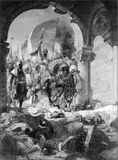
Fatih, 150-200 bin civarındaki askeriyle 6 Nisan 1453’de başlattığı kuşatmayı, 29 Mayıs 1453’de başarıyla tamamladığında, Avrupa karalar bağlıyordu. Müslüman Türklerle aralarındaki son büyük engel de ortadan kalkmıştı. Tekerlekli kulelerin, havan toplarının ve büyük topların kullanıldığı kuşatma esnasında genç Sultan, 67-70 civarındaki savaş gemisini, Tophane kıyılarından başlayıp Kasımpaşa’ya kadar ulaşan bir güzergâh üzerine yerleştirilen kızaklar üzerinden taşıtarak, Haliç’e indirtmiş, Bizanslılara büyük bir şok yaşatmıştı.
Fetih, genç Sultan’ın iştahını kesmemişti. Bizans’ın başkentini, Mora Yarımadası’ndaki Mora Despotluğu ve Anadolu’nun kuzeydoğusundaki Komnenos İmparatorluğu (Trabzon Rum İmparatorluğu) takip etti. Böylelikle Doğu Roma’nın son kalıntıları da temizlenmiş oluyordu. Fatih’in Konstantinopol’ü fethi, Müslüman Türklere ihtişam ve itibar kazandırmış, Osmanlı, uluslararası açıdan ilk kez İmparatorluk olarak tanınmaya başlamıştı.
Şehri almasının ardından II. Mehmed, Konstantinopol’ün, Roma İmparatorluğu’nun M.Ö 330’da Roma’dan İstanbul’a taşınan başkenti olmasından hareketle, aynı zamanda kendisini Kaiser-i Rum (Doğu Roma İmparatoru) olarak da ilan etti. Mehmet bu unvanı kullanan tek imparator değildi. Batı Avrupa’daki Kutsal Roma İmparatorluğu’nun lideri olan III. Frederick de, 800 yılında Papa III. Leo tarafından taçlandırılmasının ardından Roma İmparatoru olan Charlemagne’den kan bağı yoluyla aynı unvanı edinmişti.
Roma İmparatoru unvanının genç Sultan üzerindeki etkisi tartışmaya açık olmakla birlikte, kesin olan bir şey vardı ki; o da Fatih’in, İslam Peygamberi Hz. Muhammed’in (s.a.s) “Konstantiniyye muhakkak fethedilecektir. Onu fetheden kumandan ne güzel kumandandır ve onu fetheden asker ne güzel askerdir!” şeklindeki müjdesine mazhar olmasıydı. Hem Konstantinopol’ün fethi hem de o fethe katılanların müjdelendiği bu hadis, daha İslamiyet’in ilk günlerinden bu yana Müslüman kumandanların Konstantinopol’ü alma hayaliyle yanıp tutuşmasına sebep olmuştu. İslam orduları defalarca kuşatılmış, hatta bu uğurda İslam Peygamberinin birçok arkadaşı da şahadet makamına ulaşmıştı. Mehmed, şehri almasıyla hem Fatih unvanını hak etmiş, hem de, peygamberin arzusunu yerine getirmekle, İslam tarihindeki yerini perçinlemişti.
Fatih yüzünü önce Asya’ya sonra Avrupa’ya çeviriyor
Konstantinopol’ün fethi, genç sultana yüzünü Anadolu’ya çevirme fırsatı tanıdı. Beylik olarak bilinen irili ufaklı Türk devletlerini ve Anadolu’nun kuzeydoğusundaki Trabzon Rum İmparatorluğu’nu hakimiyeti altına alarak, Anadolu’da tek bir siyasî bütünlük oluşturmaya çalışmış, bu arada Kırım’daki Altın Ordu Hanlığı ile de ilişkileri geliştirme yoluna gitmişti. Anadolu beyliklerini ilk kez kendisinden 50 yıl önce I. Beyazıd birleştirmiş, lakin 1402’deki Ankara Savaşı’nın ardından bu birlik çatlamıştı. Çatlağı onarmak Sultan Mehmet’e kalmış, bunun gerçekleştirilmesiyle de Osmanlı yüzünü, Avrupa’ya dönmüştü.
Anadolu’yu sağlama alan ‘Kayser-i Rum’, bir dizi zaferler ve mağlubiyetler yaşayacağı Avrupa yollarına düşmekte gecikmedi.
Gözüne kestirdiği ilk hedef, Macaristan Krallığıydı. Lakin rakip oldukça dişliydi. Nerdeyse yirmi yıldır Osmanlı’yla savaşa savaşa bilenmiş, soylu bir asker olan Hunyadi Yanoş, Fatih ile çarpışacağı anı bekliyordu. Fatih’in Belgrad’ın sınırlarındaki kaleye yaptığı kuşatma, kısa zamanda top yekun bir savaşa dönüştü. Hunyadi’nin bir karşı saldırı ile Osmanlı kampını basması ve Fatih’in yaralanması üzerine kuşatma kaldırıldı. Fatih, seferden eli boş dönüyordu. Papa III. Calitus, 14 Ağustos 1456’da Burgundian piskoposu ile yaptığı görüşmede, Hunyadi’nin bu zaferinin, Hıristiyanlığın kaderini belirlediğini söyleyecekti.
Mehmed, akabinde Eflak Prensi III. Vlad ile çatışmaya girmiş ve 1462’de bir gece çarpışmasında yenilmişti. Ancak İstanbul’a dönmeden önce Vlad’ın kardeşi Radu’ya yardım etmiş, aynı yıl Radu, Eflak’ın kontrolünü ele geçirmeyi başarmıştı. 1475’de Boğdan’daki Vaslu Savaşı’nda ise Fatih’in karşısında bu kez Büyük Stephen vardı. Savaşta gülen taraf Stephen oluyordu. Ama fatih, kararlıydı. Nitekim bir yıl sonra, Valea Alba (Akdere) Savaşı’nda, çok fazla kayıp vermesine rağmen, Stephen’i ezip geçmiş, Başkent Suceava’yı almakla birlikte, Suceava ve Pietra Neamt kalelerini ele geçirememişti. Orduyu etkisi altına alan veba salgını ve yiyecek teminin de yaşanan sıkıntılar bir yana, Stephen’in tekrar ayaklanması ve Vlad’ın da 30 bin kişilik bir orduyla Boğdanlıların yardımına gelmesiyle, genç Sultan geri çekilmek zorunda kalmıştı.
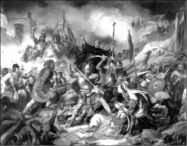
19.yüzyıla ait bu tasvirde, Hıristiyan güçler, Belgrat Kuşatması esnasında Fatih’in askerleri ile çarpışıyor. Hunyadi’nin komutasındaki Hıristiyanlar, Fatih’i geri püskürtünce, Papa III. Callitus, bu zaferin ‘Hıristiyanlığın kaderini belirlediğini’ ilan edecekti.
1477’de Fatih, bu kez Karadeniz’in karşı kıyılarında kılıç sallıyordu. Kırım Hanlığı’nı egemenliği altına almasının ardından 1478’de çıktığı Arnavutluk seferinde yeni topraklar kazanmış, 1479’da 16 yıldır savaştığı Venedik’le anlaşma yoluna gitmişti. Venedik ile anlaşan sultanın hayallerinde daha büyük bir hedef vardı: Roma.
Fatihin hedefi Roma
Takvimler 1480’i gösterdiğinde, Fatih ve askerleri, İtalya topraklarını adımlıyordu. Osmanlı ordusu İtalya’nın güneyindeki Napoli Krallığı’na ait Otranto limanını ele geçirmiş, burası, Roma’ya giden yolda önemli bir istasyon olduğu için Fatih’in bu devasa adımı, Avrupa’da panik havası estirmişti. Kimi tarihçilere göre Fatih, bu hamlesiyle, tartışmaya açık bir tez olsa da, Roma’yı ele geçirmek suretiyle, unvanını taşıdığı Roma İmparatorluğunu tekrar canlandırmayı hedefliyordu.
Kimbilir, Otranto’yu kolayca ele geçiren Sultan, 300 bin kişilik devasa ordusuyla yoluna devam edebilseydi, gerçek niyeti ne idi, anlaşılabilecekti. Ancak 1481’de cepheye doğru yola çıkmasının üçüncü günü olan Perşembe akşamını Gebze’deki karargahında geçirdiği sırada gerçekleşen ve üzerindeki sır perdesi halen kalkmayan ölümüyle Roma seferi başlamadan bitmiş, Avrupa, rahat bir nefes almıştı. Sultanın etrafındakiler, kendisine sunulan bir şerbeti iştahla içmesinin ardından öldüğünü kaydetmiş, özel doktoru Yakup Paşa, Venedikliler ile işbirliği yapıp sultanı zehirlediği iddiasıyla öldürülmüştü. Osmanlı tarihçisi Franz Babinger’e göreyse, Yakup Paşa, aslında Maesto Jakapo isimli Yahudi bir doktordan başkası değildi. Babinger de, sağlam kanıtları olmasa da, Fatih’in zehirlendiğini öne sürer.
En parlak beyinler Konstantinopol’da toplandı
Avrupa’da yaptıkları, Fatih’in ölümüne rağmen Osmanlıların bu kıtadaki varlığının geçici bir durum olmadığını gösteriyordu. Saltanatı sırasında Balkan toprakları Osmanlı savaş makinesi tarafından tamamen ele geçirilememiş olsa da, fetihlerin yolu açılmıştı.
Fatih Sultan Mehmet, fethin ardından hümanistleri, Rum âlimlerini ve İtalyan sanatçıları kendi sarayında topladı. Bizans’la Osmanlı’yı kararak bir sentez oluşturmaya soyundu. Bizans kilisesini işler durumda tuttu. Sarayına, Astronomi bilgini Ali Kuşçu gibi Müslüman âlimleri ve sanatçıları getirtti ve bugünkü İstanbul Üniversitesi’nin temellerini attırdı. Fatih Camisi gibi camiler, su yolları ve Topkapı Sarayı’nı inşa ettirdi.
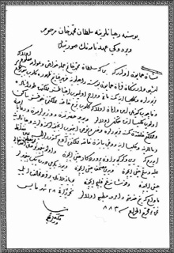
Fatih Sultan Mehmet’in 1463’te Bosna’yı fethetmesinin ardından Bosnalı Hıristiyanların temel haklarını korumak için yayınlattığı fermanın orijinal kopyası, Fojnica’daki Franciscan Katolik Manastırı’nda saklanıyor.
Sultan Mehmet, ayrıca Ortaçağ Avrupası’nın görmeye alışık olmadığı şekilde, hâkimiyeti altına aldığı Bizanslılara hoşgörülü davranmasıyla da hafızalarda yer etti. Üstelik orduda ve devlet kademelerinde çok sayıda devşirme vardı. Bunlar genç yaştaki Hıristiyanlar arasından seçiliyor, İslami öğretiler ve devletin ihtiyaçları göz önüne alınarak eğitiliyorlardı. Zeki ve becerikliler sultanın sarayına, diğerleriyse orduya veya sultanın özel muhafız birliklerine gönderiliyordu. Fethedilmiş şehrin içinde Mehmet, baskın din mensuplarına otonomi vermiş, Patriği de başlarına vali olarak atamıştı. Patriğin otoritesi, sadece şehirdeki Ortodoks Hıristiyanlarını kapsıyordu ve varoşlardaki Venedikli ve Cenevizli yerleşimcilerle yeni gelen Yahudiler bunun dışındaydı. Bu yöntem Mehmet’e, Hıristiyan Bizanslıları doğrudan yönetme imkânı sağlamıştı. Her ne kadar şehri bir Türk diyarına dönüştürmeye başlamış olsa da Müslüman olmayan şehir sakinleri de kendilerini bağımsız hissediyorlardı.
Fatih’in Özgürlük Fermanı
“Nişanı-ı hümayun şu ki Ben ki Sultan Mehmed Han’ım; Üst ve alt tabakada bulunan bütün halk tarafından şu şekilde bilinsin ki, bu fermanı taşıyan Bosna rahiplerine lütufta bulunup şu hususları buyurdum:
Söz konusu rahiplere ve kiliselerine hiç kimse tarafından engel olunmayıp rahatsızlık verilmeyecektir. Bunlardan gerek ihtiyatsızca memleketimde duranlara ve gerekse kaçanlara emn ü aman olsun ki, memleketimize gelip korkusuzca sakin olsunlar ve kiliselerinde yerleşsinler; ne ben, ne vezirlerim ne de halkım tarafından hiç kimse bunlara herhangi bir şekilde karışıp incitmeyecektir. Kendilerine, canlarına, mallarına, kiliselerine ve dışardan memleketimize getirecekleri kimselere yeri ve göğü yaratan Allah hakkı için, Peygamberimiz Muhammed Mustafa (s.a.v.) hakkı için, yedi Mushaf hakkı için, yüz yirmi dört bin peygamber hakkı için ve kuşandığım kılıç için en ağır yemin ile yemin ederim ki, yukarda belirtilen hususlara söz konusu rahipler benim hizmetime ve benim emrime itaatkâr oldukları sürece hiç kimse tarafından muhalefet edilmeyecektir.”
Diğer din, ırk ve kültürlerden olan kişilere bağımsızlık ve müsamaha tanıyan bu yemin fermanı, Fatih Sultan Mehmed tarafından 28 Mayıs 1463’te Bosna Hersek’in fethinden sonra Fojnica’da bulunan Franciscan Katolik Manastırı lideri Angjeo Zvizdovic’e bahşedilmişti.
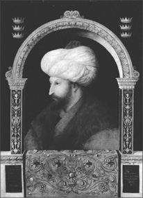
Büyük Sultan Fatih, resmini yapması için ünlü İtalyan ressamlarından Gentile Bellini’yi sarayına getirtmiş, lakin yeteneğinden emin olana kadar, saraydaki diğer kişilerin tablosunu yaptırtmıştı. Bellini’nin, Fatih’in ikna olması ile yaptığı bu çalışma, ressamın diğer tabloları ile birlikte, Fatih’ten sonra tahta geçen II. Beyazıt tarafından elden çıkarıldı. Tablolar Venedikli tüccarlar tarafından Avrupa’ya götürüldü. Bellini’nin, sağ alt köşesine 25 Kasım 1480 tarihini attığı bu ünlü tablosu, Londra’daki National Gallery’de sergilenmekte.
Din özgürlüğü konusundaki en eski belgelerden biri olarak kabul edilen bu ferman, 1971’de Birleşmiş Milletler tarafından tüm üye ülkelerin dilinde yayımlandı. Fatih’in bu fermanı, Osmanlı İmparatorluğu’nda 28 Mayıs 1463’te, yani ABD Anayasası’ndan 324, 1789’daki Fransız Devrimi’nden 326 ve 1948’deki Birleşmiş Milletler Evrensel İnsan Hakları Beyannamesi’nden 485, 1953’teki Avrupa İnsan Hakları Sözleşmesi’nde 490, Uluslararası Sivil ve Siyasi Haklar Sözleşmesi’nden 513, Uluslararası Ekonomik, Sosyal ve Kültürel Haklar Sözleşmesi’nden 513 ve 1995’teki Avrupa Konseyi Ulusal Azınlık Haklarının Korunması Anlaşması’ndan 538 yıl önce temel hak ve hürriyetleri garanti altına alıyordu.
Avrupa’nın kapılarını Osmanlı’ya açtı
Hiç şüphe yok ki Fatih’i tarihe geçiren, zamanla serpilerek günümüz İstanbul’una dönüşen Konstantinopol’ü fethetmesiydi. Genç Sultan, güç bela ayakta duran Doğu Roma’ya son darbeyi vurmuş, Hıristiyan Avrupa’ya yaklaşan Türk fetihlerinin sinyallerini göndermişti. Öte yandan kimi tarihçilerin kaydettiği üzere, o dönemde batıda tam bir hezimet olarak görülen Konstantinopol’ün düşmesiyle güneyin ve doğunun zengin pazarlarına giden yolları Osmanlı’ya kaptıran Avrupa, alternatif ticaret yolları aramak zorunda kalmış ve bugünkü zenginliğinde önemli rol oynayan deniz aşırı seferlerine başlamıştı.
Bizans İmparatorluğu’nu tarihten silen Sultan Mehmet, bu adımıyla, Balkan Savaşları’na kadar sürecek ve Osmanlı’yı Avrupa’nın en baskın güçlerinden biri yapacak olan süreci başlatan kumandan olarak tarihe geçmişti.
NOTLAR
- Arapça ve Farsça da dâhil olmak üzere 7 dil biliyordu.
- Şairdi. Mahiyetindeki 185 şâirden 30’unu maaşa bağladı. Farsça ve Arapçaya çevrilmiş felsefi eserler okurdu.
- Ünlü Ressam Bellini’yi İstanbul’a davet edip, portresini yaptırdı.
- İstanbul’un fethi için, Musluhiddin ve Saruca Sekban gibi Osmanlı mühendisleri ile Osmanlılara sığınan Macar Urban’a Edirne’de, şahi adı verilen toplar döktürttü. Fetihte havan topları ve tekerlekli kuleler de kullandı.
- Fethin ardından Aya Sofya’yı bir camiye dönüştürdü. Meşhur Ayasofya vakfiyesinde, Ayasofya’yı cami olarak kıyamete kadar vakfettiğini belirten Sultan Fatih; “Kim benim bu vakfiyemi bozar, onu camilikten çıkartırsa, Allah’ın, meleklerin ve bütün insanların laneti onun üzerine olsun” diyerek, vakfının geleceğini garantiye almak istemişti. 1934 yılında Türkiye Cumhuriyeti’nin kurucusu Mustafa Kemal Atatürk, Ayasofya’nın müzeye dönüştürülmesini emretti; kararname Başbakan İsmet İnönü tarafından imzalandı.
- Kanuni Sultan Süleyman’dan çok önce bir anayasa ve ceza kanunnamesi hazırlattı.
- Otlukbeli Savaşı’nda Uzun Hasan’ı yenince, zaferini kutlamak için 40 bin esir askeri serbest bıraktı.
- 30 yıllık saltanatı boyunca 25 sefere bizzat komuta etti.
- 900 bin kilometrekare olan Osmanlı topraklarını 2 milyon 214 bin kilometrekareye çıkardı.
- Venedik Krallığı tarafından planlanan 14 suikast girişiminden sağ kurtulmayı başardı.
- Ölümünün ardından Papa, kutlama amacıyla üç gün boyunca gece gündüz durmaksızın kilise çanlarını çaldırdı.
- 49 yıl, 1 ay beş gün süren ömrü boyunca iki imparatorluk, dört krallık ve 11 prensliği ortadan kaldırdı.
- Osmanlı Türklerinin Konstantinopol’ü fethettiği 29 Mayıs 1453, o dönemdeki Hıristiyan Batılılar tarafından ‘dünyanın sonu’ olarak görülmüştü.
- Türkiye’de her ne kadar Konstantinopol’ün fethiyle Ortaçağ’ın kapanıp Yeniçağ’ın açıldığına inanılsa da, bu sadece Türklere has bir tarih yorumudur. Batı’da, tarihi bir eşik olduğu kabul edilmekle birlikte fethe bu kadar büyük bir önem atfedilmez.
Korsanlıktan Amiralliğe yükseldi, Akdeniz’i Haçlılara dar etti
BARBAROS HAYREDDİN PAŞA
(1467-1546)
‘Bir kişinin ki yardımcısı Allah ola,
Var kıyas eyle ol ne şah ola.’
Barbaros Hayreddin Paşa
Tüccardı, korsan oldu. Akdeniz’i Avrupalı denizcilere dar etti. Korsandı, bir ülkeye hükümdar oldu. Avrupalı hükümdarlarla savaştı. Hükümdardı, Osmanlı’ya sığındı; hükümdarı olduğu ülkeye vali olarak geri döndü. Derin sularda Fransız, İspanyol, Ceneviz ve Venedikli denizcilerle savaştı. Başarılarından dolayı Kanuni Sultan Süleyman tarafından Osmanlı donanmasının başına; Kaptan-ı Derya’lığa getirildi. Bir zamanlar İtalyanlar tarafından, muhtemelen dış görünüşünden dolayı, Barbarossa (Latincede Kırmızı sakal) olarak isimlendirilen bu büyük denizci, korsanlıktan donanma komutanlığına yükselen tek gemici olmasıyla farkını göstermiş, tarih onu ‘Barbaros Hayrettin Paşa’ olarak hafızasına kazımıştı.
Asıl adı Hızır’dı. Barbaros Hayreddin Paşa olana kadar Hızır Reis adıyla mavi sularda yelken basacaktı. Kanuni adını, daha sonradan hizmetine girdiği büyük sultan Kanuni vermişti. Hayreddin; yani dine hayrı dokunan manasında. Peki bir zamanların korsanı Hızır reisin dine ne hayrı dokunmuştu? İşte denizler hakimi Hızır Reis’in soluk kesen macerası.

Büyük Osmanlı Denizcisi Barbaros Hayreddin Paşa, Osmanlı Donanması’nın başına geçmeden yıllar önce, ilerde Büyük Haçlı Donanması’nı yeneceği Preveze Körfezi’ne, tüccar denizci olarak defalarca yolculuk yapmış, arpa satmış, at ve gemi satın almıştı.
Babası Gelibolulu bir sipahiydi. Ama kendisi (kesin olmamakla birlikte) 1467’de Midilli adasında doğdu. Kardeşi Oruç ile birlikte küçük yaşlarda denizciliğe gönül verdiler. İki kardeş deniz ticareti yaparken Rodos şövalyelerine esir düştü. Kimi tarihçilere göre bu olay kardeşlerin legal hayattan illegal sulara yelken açmasına yol açmış, korsanlık yapmaya karar vermişlerdi. Ağabeyi Oruç ile birlikte Cebre Adası’nı karargah olarak kullanıp, Akdeniz kıyılarına seferler yapmaya başladılar. Korsanlıktaki şöhretleri büyük bir hızla yayılıyordu. Bu arada yaptıkları pazarlıklarla etki alanlarını da genişletiyorlardı. Tunus Sultanı Muhammed ile anlaşarak, Halkü’l-Vadi (La Gaulette) limanını, ganimetin beşte birini kendisine vermek koşuluyla kullanmaya başladılar.
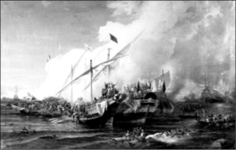
Ohannes Umed Behzad’ın 1866’da yaptığı tabloya bu şekilde yansıyan Preveze Deniz Savaşı’nda Barbaros, Birleşik Haçlı Donanması’nı, hilal pozisyonu alan donanmasıyla sulara gömmüştü. Barbaros, böylelikle Haçlılara denizde büyük bir darbe vururken, Avrupa’ya sefer yapan Kanuni’ye de denizden destek vermiş oluyordu.
Korsan kardeşler işi büyütüyor…
Bir süre sonra ağabeyleri İshak da onlara katıldı. Korsan kardeşler, ele geçirdikleri ganimet yüklü bir gemiyi 1512’de Osmanlı Padişahı Yavuz Sultan Selim’e gönderince, saray ile aralarında bir bağ da kurulmuş oluyordu. Saraya bu hediyeleri götürense ünlü denizci Piri Reis’den başkası değildi!
Kardeşler zamanla korsanlıkla yetinmeyip işi büyüttüler. Akdeniz’in Kuzey Afrika kıyılarından toprak kazanmaya soyundular. 1516-1517’de Akdeniz’in diğer bir gücü İspanyolları saf dışı ederek Cezayir’in Tenes, Tlemsen ve Oran şehirlerini ele geçiren kardeşler, ülkenin hakimi konumuna geldi. Oruç Reis Cezayir hükümdarı ilan edildi. Lakin İspanyollar, Akdeniz’i korsan kardeşlere bırakmaya niyetli değildi. Araplarla birleşerek Cezayir’e saldırdılar. Savaşta İshak ve Oruç hayatını kaybetti. Kardeşlerini ebediyete uğurlayan Hızır Reis, 1519’da, bir süre önce sıcak ilişkiler kurmuş oldukları Payitahttan yardım istedi. Yavuz Sultan Selim, “Hak Taala, dünya ve ahirette Oruç ve Hayreddin kullarımın yüzlerini ak eylesin, kılıçları keskin, düşmanları mahkur, denizde ve karada gazaları mansur olsun. Daima muzaffer olalar!” dedi ve Hızır Reis’i Cezayir beylerbeyliğine atayarak koruması altına aldı. Silah, cephane ve adam yolladı. Bu arada Barbaros’un deyişiyle, Kutsal Roma İmparatoru V. Charles’ın (Türkiye’de Şarlken ve Karlos olarak da bilinir) Cezayir’de gözü vardı ve kendisini şöyle tehdit ediyordu:
“Ağan ölmüş, leventlerinin çoğu kılıçtan geçirilmiş, kolun kanadın kırılmıştır. Ağan olmayınca sen kimsin ki en kudretli Hıristiyan hükümdarı olan bana kafa tutacaksın? Ne yapmayı ümit edebilirsin? Gemilerini, leventlerini alıp Cezayir’den çık git, bir daha da zinhar Afrika’ya ayak basma. Bu sana son lütfumdur. Yakında Cezayir’e derya dolusu gemi yollamam mukadderdir. Seni hala orada bulup ele geçirirsem, akıbetin vahim olur.”
Her ne kadar Barbaros, Charles’ın bu tehdidini, “Şimdi Cezayir’i benim elimden almak artık hiçbir dünyevi kudretin iktidarı dahilinde değildir. Çünkü ülke benim değil, Şevketlü hakanımız Selim Han’ındır. Şimdiye kadar bir Osmanoğlu’nun elinden ülke alındığını da kimse işitmemiştir.’ diyerek karşılasa da, İspanyollara karşı direnemeyecekti. Artık bir Osmanlı toprağı olan Cezayir’i kaybedince donanmasıyla birlikte Şerşel Adaları’na çekildi. Yıllarca birlikte yelken açtıkları Oruç’un kaybı, Barbaros’a çok dokunmuştu. “Ağamın şahadet haberi Cezayir’e geldikte ben artık bir tek gaye için yaşamaya azmettim. O da, ağamın yolunda gitmek, Afrika’yı ve Akdeniz’i kafirlere dar etmek gayesiydi.” diyecekti, yıllar sonra o günleri hatırlarken.
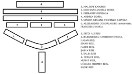
Haçlı ve Osmanlı donanmalarının Preveze Savaşı’ndaki pozisyonları.
Bir süre sonra Avrupa’nın Akdeniz kıyılarına seferler düzenleyen Hızır Reis, 1530’da Cezayir’i tekrar geri almış, bir yıl sonra Şerşel’de kendisini kıstırmak isteyen ünlü Cenevizli Amiral Andrea Doria’yı mağlup etmişti. Bu Doria ile ilk karşılaşmalarıydı ama sonuncusu olmayacaktı. Bu esnada Osmanlı tahtına Kanuni Sultan Süleyman geçmişti. Andrea Doria’nın bu kez de Osmanlı yönetimindeki Mora kıyılarına dadanması, Kanuni’yi rahatsız etti. Haber salınarak Hızır Reis İstanbul’a çağrıldı. Onu büyük bir görev bekliyordu.
Hızırlıktan Barbaros Hayrettinliğe…
Yirmi gemisi ve on dokuz kumandanıyla 27 Aralık 1533’te Konstantinopol’e ulaşan Oruç Reis, büyük bir şaşa ile Topkapı Sarayı’na götürüldü. Kanuni, Divan-ı Hümayun’u toplayarak, Hızır Reis’i, Osmanlı donanmasının komutanlığına tayin ettiğini duyurdu. O artık Kaptan-ı Derya, diğer bir deyişle Denizlerin Kaptanı olmuştu. Kanuni aynı zamanda kendisine ‘Dine faydası dokunan’ manasına gelen Hayreddin ismini de verdi. Böylelikle Barbaros Hayreddin efsanesi de başlamış oluyordu.
Osmanlı’nın gücüyle taçlanan büyük denizci, 1534’te Akdeniz’e açılarak İtalya kıyılarına seferler düzenledi, Tunus’un kontrolünü ele geçirdi. Ama bir kez daha karşısına Andrea Doria yönetimindeki Haçlı donanmasının çıkmasıyla, Tunus’tan çekilerek, Payitahta döndü. 1536’da daha güçlü bir donanmayla yeniden Akdeniz’e yelken açan Hayreddin Paşa, İtalya kıyılarına düzenlediği seferlerin ardından, Ege Denizi’ndeki Venedik adalarını Osmanlı topraklarına kattı. Osmanlıların Akdeniz’deki etkinlik sahasının genişlemesinden rahatsız olan Papa, bu gidişe bir son vermek için harekete geçti. Denizden yapılacak bir Haçlı Seferi’nin startını vermesiyle, Akdeniz’in başat deniz güçlerinden İspanya, Venedik, Malta, Portekiz ve Ceneviz gemilerinden oluşan bir Haçlı donanması hazırlandı. Başına da Barboros’u gayet iyi tanıyan bir isim; Andrea Doria getirildi. Akdeniz’de kozlar paylaşılacaktı…
Preveze’de büyük hesaplaşma
Haçlı Donanması savaşın ilk ayağında Osmanlılara ait Preveze Kalesi’ni kuşattı. Arta Körfezi’nin girişine hakim bu kaledeki Türk topçularının bertaraf edilmesi gerekiyordu. Zira onları aşmadan körfeze girmek zordu. Barbaros komutasındaki Osmanlı donanması 24 Eylül 1538’de Arta Körfezi’ne girmişti.
Top menzilinden çıkıp açık denizde Osmanlı’yla savaşmak isteyen Andrea Doria, 25 Eylül 1538’de bazı gemileri yem olarak öne sürdü. Yaşanan ufak çaplı bir çatışmanın ardından gemilerin geri dönmesiyle birlikte bu kez de, Barbaros’un kendilerini takip etmesi için Preveze açıklarında donanmasını demirletti. Doria’nın bu restini gören Barbaros, savaş pozisyonu alarak, topçu ateşiyle doğrudan düşman donanmasının merkezini hedef aldı. Doria’nın güçlerini ortadan yarıp, pozisyonlarını bozmak istiyordu. Topçu ateşi ile birlikte 40 kadar Osmanlı kadırgası doğrudan Haçlı donanmasının merkezine yüklenince, paniğe kapılan Doria Korfu Adası’na doğru çekilmeye başladı. Karanlık bastırmıştı. Düşmanı takip etmek zorlaşınca, Osmanlı Donanması körfeze demirledi. Osmanlı Savaş Divanı durum değerlendirmesi yapmak için toplandı. Turgut Reis ve Salih Reis gibi önde gelen kurmaylar, düşman kalyonlarının büyüklüğünden dolayı tereddüt içindeydi. Körfezde savunma pozisyonunda kalınması yönünde fikir beyan eden paşalarına karşın Barbaros, donanmasındaki kadırgaların ufak ama daha atik olduğuna inanıyordu. Bu onlara hamle üstünlüğü sağlayabilirdi. Üstelik düşmana kıyasla kendi topları daha uzun menzilliydi. Karar verildi. Savaşa devam edilecek, üstelik de doğrudan hücuma geçilecekti. Sabahın ilk ışıklarıyla Haçlı Donanması’nın üzerine yürüyen Barbaros’u karşısında gören Doria da savaş pozisyonu alınmasını emretti.
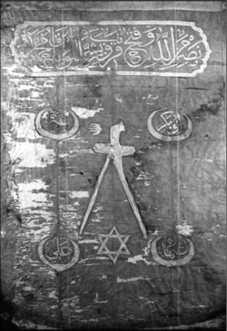
Barbaros Hayreddin Paşa’nın Beşiktaş’taki Deniz Müzesi’nde sergilenen sancağının üzerinde ‘Nasr’un minallahi ve fethun kariybun ve beşşiril mü’mi-niyne’ (Allah’tan bir yardım ve yakın bir fetih vardır. (Ya Muhammed) Mü’minlere müjde ver. Saff Suresi 13.) ayet-i kerimesi bulunurken, sancağın ortasındaki kılıç, Hz. Ali’nin meşhur kılıcı zülfikar’ı, onun yanındaki el işareti ise, ‘Pençe-i Âl-i Aba’yı; Hazreti Muhammed, Hz. Fatma, Hz. Ali, Hz. Hasan ve Hz. Hüseyin’i sembolize eder. Aynı zamanda Sancağın dört köşesinde, Hz. Ebubekir, Hz. Osman, Hz. Ömer ve Hz. Ali’ halifelerin isimleri göze çarpar. Sancağın üzerindeki yıldız ise Hz. Süleyman’ın mührünü sembolize etmektedir.
Osmanlı donanması hilal pozisyonu alıyor
Barbaros yıllar sonra yakın silah arkadaşlarından Seyyid Muradi’ye padişahın isteği üzerine anılarını yazdırırken, Preveze’deki atmosferi şöyle dile getirecekti11:
“Başta İspanya, Venedik, Ceneviz, Papalık, Floransa, Malta donanmaları olmak üzere Kral Karlos’un (Charles’ı kastediyor) toplayıp Andrea Doria’nın emrine verdiği donanma büyüklüğünde bir donanmayı ben hayatımda görüp işitmediğim gibi, tarih kitaplarında da okumadım. Düşmanın 600’den fazla gemisi vardı. Bunun 308’i harp teknesi olup, 120’si en büyük oturak gemilerdi. Donanmaya, kürek çeken on binlerce forsadan başka 60 bin asker bindirilmişti. Bazı gemilerde 2 binin üzerinde asker vardı. Yüzer kale gibi derya üzerinde geziyorlardı, fakat hareketleri ağırdı. Benim 122 kadırgam vardı. Nakliye gemim yoktu, açık deniz muharebesinde yardımcı gemiye ihtiyaç da olmazdı. Forsalar dışında 20 bin levendim ve topçum vardı. Bu suretle iki tarafın insan sayısı forsalarla beraber 120 bin kişiyi buluyordu ki, bu kadar insanın derya yüzünde karşı karşıya gelmesi görülüp işitilmedikten başka, tasavvur dahi edilemezdi...”
Hilal şeklinde dizilen Osmanlı donanmasının merkezinde Barbaros Hayreddin Paşa, Sinan Reis, Cafer Reis ve Şaban Reis, sağ kanadında Salih Reis, sol kanadında ise Seydi Ali Reis bulunuyordu. Hilalin arkasındaki destek gemilerinde ise Turgut Reis komutasındaki Murat Reis, Güzelce Mehmet Reis ve Sadık Reis pozisyon almıştı. Osmanlı’nın deniz kurtları savaş düzenine geçmiş, Akdeniz güneşi altında, ilk hamleyi bekliyordu. Haçlılar ise en büyük kalyonları en ön safta olmak üzere, arka arkaya üç hat halinde dizilmişlerdi. Kurt denizci Andrea Doria, öndeki devasa kalyonları bir tür siper ve koçbaşı olarak kullanmayı planlıyordu. Kendisi siperin arkasında, ortadaki kalyondan savaşı yönetecekti. Kumandası altındakiler ise, Akdeniz’in en gözü pek ve deneyimli denizcilerinden; İspanya-Portekiz kalyonlarının kumandanı Franco Doria, Venedik kalyonlarının kumandanı Alessandro Condalmiero, Venedik kadırgalarının kumandanı Vincenzo Capello ve Papalık donanmasının komutanı Aquilea Patriği Marco Grimani gibi önemli isimlerdi.
Rüzgar kesiliyor, savaşın havası değişiyor
Gemi, asker ve silah üstünlüğünün yanı sıra, hava şartları da ilk etapta Haçlıların lehineydi. Kuzeyden esen güçlü rüzgarlarla yelkenlerini şişiren Haçlıların yüzen kaleleri, rüzgarın kesilmesiyle birlikte hamle üstünlüğünü kaybetti. İlk saftaki bu devasa kalyonlar sadece yelken gücüyle hareket edebildiği için bir anda hareketsiz kalınca, arkadan gelenlerin de manevra alanını daraltmıştı. Doria ‘ateş!’ emri verse de, kısa menzilli toplar işe yaramadı. Kürek gücüyle büyük bir hızla düşmana hamle eden manevra kabiliyeti yüksek küçük boyutlu Osmanlı kadırgaları, uzun menzilli toplarıyla, hareketsiz kalan Haçlı donanmasını dövmeye başladı. Doria, arka safta beklettiği kadırgalarıyla öne çıkmaya çalışsa da, yoğun ateşten dolayı başarılı olamadı. Bu arada düşmanı kuşatmaya dönük hamleleri de manevra kabiliyeti yüksek Osmanlı kadırgalarından dolayı akamete uğruyordu. Haçlı donanmasındaki koordinasyon bozulunca, Osmanlı’nın arka safında bekleyen Turgut Reis, Barbaros’um emriyle düşmanı arkadan çevirdi. İki ateş arasında ezilen Haçlılar geri çekilip bir kez daha akşam karanlığına sığındı. Sabah olduğunda yerlerinde yeller esiyordu. Avrupalıların 128 gemisi sulara gömülmüş, 29’u da Osmanlı leventleri tarafından ele geçirilmişti. Barbaros hiçbir gemisini kaybetmezken, dört yüz kadar denizci şehit olmuştu. 27 Eylül 1538, Preveze Zaferi, ya da hezimeti, olarak tarihe kaydedilirken, Akdeniz’in diğer iki hakim gücü Venediklileri ve İspanyolları sulara gömen Barbaros da ‘Akdeniz’i Türk gölü yapan kumandan’ unvanıyla Osmanlı Türk tarihindeki ayrıcalıklı yerini alıyordu.
Osmanlı’yı Akdeniz’in patronu yaptı
Preveze ile neler değişti? Öncelikle kendisi de bir zamanlar korsan olan Barbaros’un bu zaferiyle, Akdeniz’de Avrupa destekli korsanlık faaliyetlerine set çekildi. Denizlerdeki mal ve can emniyeti sağlama alınırken, deniz ticareti daha rahat yapılır oldu. Kuzey Afrika’daki İslam devletleri Avrupalıların saldırılarına karşı korumaya alındı. Aynı zamanda hacıların deniz yoluyla hacca gitmesinin de önü açıldı. Ama hepsinden önemlisi, Preveze’deki zafer, 1571’deki Lepanto Savaşı’na kadar sürecek dönemde, Osmanlı’yı Akdeniz’in hakim gücü yaptı.
Haçlılar denizde kaybetse de, masada kazanma girişimlerinden vazgeçecek gibi değildi. İmparator Charles, Akdeniz’i geri almak için ilginç bir yönteme başvurarak, Barbaros’a rüşvet teklif etmeyi denedi. Buna göre Barbaros’u Kuzey Afrika topraklarının hükümdarı olarak tanıyacak ve kendisine vergi ödeyecekti. Ama bir şartı vardı: Padişaha ihanet etmesini istiyordu. Barbaros teklifine yüz vermeyince tekrar silaha sarıldı.
1541’de Haçlılar, Charles komutasında ve Andrea Doria ile birlikte İspanyol, Alman, İtalyan, Flaman ve Maltalı asilzadelerin emrindeki 36 bin savaşçı ve 516 gemilik Birleşik Avrupa Donanması’yla Cezayir önlerine geldiler. Preveze’nin intikamını alacaklardı. Ancak bu kez de Barbaros’un paşalarından Hasan Reis, 9 bin kişilik ordusuyla Charles ve donanmasını hezimete uğrattı! Bu yenilginin utancını yaşayanlar arasında, bir sonraki bölümde tanışacağınız, İspanyolların ünlü denizcisi ve kaşifi Cortes de bulunuyordu!
Bir süre sonra İspanya’nın Avrupa’daki rakiplerinden Fransa, İspanyollara karşı Osmanlı’dan yardım talep edince, Barbaros’a bir kez daha açık denizler göründü. Padişahın emriyle 30 bin asker ve 150 parça gemiyle yola çıkan Barbaros, 20 Temmuz 1543’te Fransa’nın Marsilya Limanı’na girdi. 20 Ağustos 1543’te mahiyetindeki Fransız Amiral Duc D’Enghien ile birlikte Nice şehrini alan Barbaros, Fransızlardan yeteri kadar destek alamayınca, şehri kurtarmaya gelen Doria’nın donanması karşısında Toulon’a çekildi. Şehir bir süre Osmanlı hakimiyetinde kalırken, Osmanlı Donanması da sekiz ay kadar şehirde demirledi. Barbaros’un kumandanları Salih ve Hasan reisler yaptıkları seferlerle İspanya ve İtalya kıyılarını vururken, Barbaros da İspanyolları Fransızlarla Crespy Barışı’nı yapmaya zorlayarak görevini tamamlamış oldu.
Ömrünün son iki yılını, aşığı olduğu denizlerden uzak geçiren büyük denizci, Beşiktaş’taki konağında 4 Temmuz 1546 günü Kadir Gecesi vefat ettiğinde, arkasında deniz tuzuna bulanmış parlak bir askeri kariyerin yanı sıra zaferler ve fetihlerle donanmış macera dolu bir hayat hikayesi bırakıyordu.
NOTLAR
- Latincede ‘Kızıl sakal’ manasına gelen Barbarossa lakabı, ilk olarak Barbaros’un abisi Oruç Reis’e takılmıştı.
- Ömrü denizlerde Kutsal Roma İmparatoru V. Charles’ın has amirali Andrea Doria ile kapışmakla geçti. Doria’yı başta Preveze olmak üzere, defalarca mağlup etti.
- Kendi ifadesine göre Preveze Savaşı esnasında yazdığı ayetleri denizin üzerine saçınca, Osmanlı donanması aleyhine esen rüzgar kesilmişti.
- Osmanlı Devleti’nin 19. Kaptan-ı Derya’sıydı. Bizzat kendisinin idare ettiği 21 büyük sefere çıktı. Devletin sınırlarını Fas’a kadar uzattı.
- Defalarca Endülüs’e sefer yapmış ve binlerce Müslümanı İspanyol kılıcından kurtarıp Kuzey Afrika’ya getirmişti.
- Kendi naklettiğine göre Cezayir camilerinin minarelerini top ateşine tutan İspanyol topçu başını, topa koyup denize attırmıştı.
- Vezir-i azam Damat İbrahim Paşa’ya, Avrupalı deniz güçlerinin bir hayli faal olduğu Yeni Dünya’ya (Amerika) sefer düzenlemek istediğini söylemesine rağmen, “Uzak denizlerle işimiz yok. Akdeniz’i ve Hind denizlerini tutmamız kafi.” cevabını almıştı.
- “Öldüğüm zaman beni deniz sesi işitilebilecek bir yere defnediniz” şeklindeki vasiyeti üzerine Beşiktaş sahilinde Mimar Sinan tarafından yaptırılan türbeye defnedildi.
- 1962’de Cezayir bağımsızlığına kavuştuğunda bağımsızlık liderlerinden Albay Muhandu’l Hacc, Cezayir’in millet olma sürecinde (Oruç ve Hızır kardeşler ile başlayan) Osmanlı yönetiminin büyük rolü olduğunu söylemişti.
- İspanyol Futbol Takımı Deportivo La Coruna takımının İspanya’daki lakabı ‘Türkler’dir (Los Turcos). Taraftarları sık sık maçlarda Türk bayrağı sallar. Bunun sebebi, takımın ait olduğu İspanya’nın Galicia bölgesinde yaşayanların, zamanında Barboros’un İspanyollara karşı verdiği savaşı desteklemiş olduğuna inanılmasıdır. Bu yüzden ezeli rakipleri Celta Vigo taraftarları, biraz da aşağılamak amacıyla, Coruna taraftarlarını ‘Türkler’ olarak isimlendirmiş, ama zamanla Corunalılar, bu hitaba (kulüp olarak da resmen) sahip çıkmışlardır. Türk bayraklarının da boy gösterdiği bu atışma, Celta Vigo ve La Coruna maçlarında sık sık göze çarpar.
Aztek medeniyetini yıkan, güney Güney Amerika’yı İspanyollaştıran kaşif
HERNAN CORTES
(Conquistador) (1485-1547)
‘Ben, size, atalarınızın size bıraktığından daha çok toprak kazandıran adamım.’
Cortes, gözden düştüğü bir zamanda İspanya Kralı ve Kutsal Roma İmparatoru V. Charles’e sesleniyor.
20 atla ve 10 küçük topla desteklenen 600 kişilik İspanyol birliği, 5 milyondan fazla nüfusa sahip Aztek İmparatorluğunu işgal ettiğinde, daha önce hiç olmamış bir şey oluyor, ve dünya tarihinde ilk kez, bu kadar az sayıda bir güç, bu kadar geniş ve büyük zenginliğe sahip bir bölgeyi ele geçiriyordu. 600 kişilik bu minik ordunun başındaki isimse, İspanyolların efsanevi kaşifi, denizcisi ve hepsinden de önemlisi Conquistador (fatih) olarak isimlendirdikleri kumandan Hernan Cortes’den başkası değildi.
Cortes, İspanya’nın güneybatısında küçük bir asilzade aile olan Medellin ailesinin çocuğu olarak 1485’te dünyaya gelmiş, 14 yaşındayken Salamanca Üniversitesi’nde hukuk okumuştu. Lakin eğitim kendisini sıkınca, okulu bırakarak, maceracı ruhu nereye götürürse oraya gitmeye karar verdi. 1504’de kendisi Dominik Cumhuriyeti’nde bulmuştu. Hedefi Yeni Dünya’ya, diğer bir deyişle Amerika’ya ulaşmaktı. 1511’de, 18 yaşındayken, İspanyol fatihlerinden Diego de Velazquez’in Küba’yı ele geçirdiği askerî sefere katıldı. Burada gösterdiği cengaverlikle göz doldurmuş, seferin ardından Velazquez’in Vali olması ile kendisi de belediye başkanlığına getirilmişti.
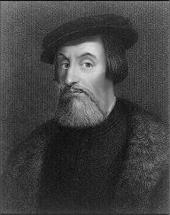
İspanyollar için büyük bir kahraman ve fatih (Conquistador), Meksikalılar için ise, tarihlerinin hatırlamak istemedikleri önemli bir parçası olan İspanyol kâşif ve asker Hernan Cortes, erken yaşlarda eline aldığı kılıcını Kübalılara, Azteklere, Mayalara ve nihai olarak da Osmanlılara karşı kullanacak, bunlardan sadece sonuncusuna boyun eğecekti.
Velazquez 1518’de Cortes’den bir miktar asker toplamasını istedi. İspanyollar tarafından ilk kez bir yıl önce ziyaret edilen Meksika’ya bir keşif gezisi düzenlemesini istiyordu. Lakin bir süre sonra bu kararından pişmanlık duymaya başladı. Muhtemelen Cortes’in bu seferin getireceği kazanımları kendisine yontmasından korkuyordu. Seferi durdurmaya çalıştı ancak Cortes hazırlıklarını hızlı bir şekilde tamamlamış ve 18 Kasım 1518’de 10 gemi, 550 İspanyol denizci, 300 kadar yerli, birkaç zenci köle, 10 adet pirinçten yapılmış silah, bir düzine at ve birkaç top arabasıyla Santiago’dan ayrılmıştı. Yepyeni ve macera dolu bir dünya kendisini bekliyordu.
Cortes, Meksika’nın güney ucundaki Tabasco’ya varmadan önce Yucatan sahilini keşfetmiş, Tabasco’ya vardığında karşısına çıkan yerlileri de barut gücüyle saf dışı bırakmıştı. Her ne kadar sahil şeridinde hayal ettiklerini bulamasa da, Cortes, daha iç kesimlerde kalan Aztek İmparatorluğu’nun sahip olduğu zenginlikler hakkında yeteri kadar istihbarat toplamıştı. Güçleriyle kuzeye ilerledi ve Azteklere yönelik seferinde kullanacağı, daha sonradan Vera Cruz olarak isimlendirilecek limanı kurdu. Bu arada içerilere doğru ilerlemek konusunda ayak sürüyen askerlerinin kaçmasını önlemek için gemileri yakmaktan da geri durmamıştı. Gerekirse tek başına da kalsa, kararlıydı; Aztek altınlarına dokunacaktı…
Aztek Medeniyeti’ni kana buladı
Cortes, Azteklerin başkenti Tenochtitlan’a ilerlerken, karşısına çıkan kabilelerle savaşmaktan da geri kalmıyor, mağlup ettiği bu kabileleri, bir süre sonra kendisine müttefik yaparak, Azteklerle daha güçlü bir şekilde karşılaşmayı hesaplıyordu. Bu arada Aztek Kralı Montezuma’ya vergi vermek istemeyen bazı kabileler de ona katılmıştı. Cortes Tenochtitlan’a yaklaştıkça, Azteklerin, Quetzalcoatl isminde sakallı ve beyaz tenli tanrı-krallarıyla ilgili söylentiler de kulağına çalınır olmuştu. Buna göre tanrı-kral, Azteklere tarımı ve devlet idaresini öğretmişti. Aztekler de bunun karşılığında geleceğine inandıkları bu tanrıyı layıkıyla karşılamak için büyük bir tören hazırlıyorlardı.
Ancak onlar tanrıyı misafir etmeyi beklerken, davetsiz bir misafir çıkageldi. Cortes ve adamları kapılarına dayanmıştı.
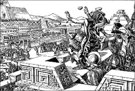
Cortes, günümüzde Peru olarak bilinen ülke topraklarında yükselen İnka topraklarını ele geçiren diğer bir İspanyol Francisco Pizarro’nun ikinci dereceden kuzeniydi. Yanında sivrildiği Küba valisinin kendisini görevlendirmesiyle Yeni Dünya’ya, bugünkü Meksika topraklarına ayak basmış, Valinin rızası hilafına, sadece ticaret ve keşif yapması istenmesine rağmen, bir çok yerlinin kanını dökerek Aztek Medeniyetine son vermişti.
Aztekler Cortes’i bekledikleri tanrı sandıkları ve aynı zamanda ilk kez gördükleri ateşli silahlar ve atlardan korktukları için İspanyollar karşısında etkinlik gösteremedi. Bu şaşkınlıkları Cortes ve adamlarına yaradı. Az bir direnişle, 18 Kasım 1519’da başkente girdiler. Montezuma hapsedildi.
Lakin Cortes zaferin tadını çıkarmaya fırsat bulamayacaktı. Daha büyük bir tehlike yaklaşıyordu. Panfilo de Narvaez komutasındaki bir İspanyol birliği, Cortes’in tutuklanmasını öngören ve Velazquez’in imzasını taşıyan bir emirnameyle Vera Cruz’a çıkmıştı. Cortes, bir yandan ganimetleri toplamaya çalışırken diğer yandan da iki yüz kişilik bir kuvveti, adamlarından Pedro de Alvarado’nun komutasında başkenti korumaları için görevlendirdi. Kendisiyse bir grup adamıyla Cempovallans’da üslenmiş Narvaez’i yakalayıp geldiğine pişman etti. Sağ kalan askerlerini kendi birliğine katarak Azteklerin, Alvarado’nun acımasız uygulamalarından dolayı ayaklanmak üzere başkente doğru yola koyuldu.
Şehre ulaştığında ortalık karışmıştı. Halen hapiste olan Montezuma, ayaklanan tebaasını yatıştırmaya çalışsa da, halkı tarafından linç edilmekten kurtulamadı. Çıkan kargaşa sonucu İspanyollar geri çekilmek zorunda kalacaktı. Toparlanma ve irili ufaklı kabilelerle savaşılarak geride bırakılan bir yılın ardından Cortes, toplarının ve ateşli silahlarının sağladığı avantajla 3 aylık bir kuşatmanın ardından 13 Ağustos 1521’de yeniden Aztek başkentine girdi. Elde ettiği ezici zaferde, Aztekleri kırıp geçiren veba salgınının da payı vardı elbette. Cortes, yerle bir ettiği şehrin yeniden imarına ağırlık verdi ve ismini Meico City (Günümüzde Meksika’nın başkenti) olarak değiştirdi.
Yeni Dünya’nın zenginliğini İspanya’ya taşıdı
Cortes’in bu ‘zaferleri’, ana vatanı İspanya’da ses getiriyordu. Tabi ki bu durumdan rahatsız olanlar da vardı. Yeni bir güç odağı, iktidar alternatifi olduğundan şüphe duyuluyordu. Cortes, seferlerinden elde ettiği Aztek hazinelerini İspanya’ya göndererek, tüm bunları şöhret ve servet için değil, İspanya kraliyeti adına yaptığını ilan etti. Cortes’in zekâsı ve acımasız politikaları sayesinde ele geçirdiği toprakların boyutu ve elde ettiği zenginlik, İspanya Kralı ve aynı zamanda Kutsal Roma İmparatoru olan V. Charles’ı da büyülemişti. Böylesi bir zenginliği reddedemeyen Charles, Cortes’i, ‘fethettiği’ toprakların başına vali olarak atadı. Böylelikle İspanya ile Cortes’in Yeni Dünya’ya ele geçirdiği topraklar arasındaki trafik hızlandı. Kıta Avrupa’sından bu topraklara göçmen akını başladı. Cortes, bölgedeki İspanyol egemenliğini pekiştirmek için bu yeni gelenlere Meico City’nin etrafında yeni bir medeniyet kuracakları topraklar verdi. Yine de kendisine dönük muhalefet yatışacak gibi değildi. Başarıları Madrid’de kıskançlık uyandırmış, arzuları ve askerler arasındaki müthiş popülaritesi onu korkulan bir isim haline getirmişti. Bunun üzerine icraatlarını izlemek ve bazılarına da engel olmak üzere komisyonlar gönderildi. Sefere çıktığı bir anda ganimetlerine el konuldu ve yardımcıları hapse atıldı. Ve nihai aşamada Charles, 1528’de kendisini valilikten azlederek, İspanya’ya dönmesini emretti.
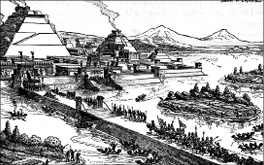
Cortes ve askerleri, 8 Kasım 1519’da Azteklerin başkenti Tenochtitlan’a giriyor. Kayıtlara göre işgal sırasında şehirde 200 bine yakın kişi yaşıyordu ve bu, başkenti, dünya üzerindeki en büyük şehirlerden biri yapıyordu. Avrupa’da bile sadece İstanbul, Venedik ve Paris gibi şehirler, Tenochtitlan’dan daha büyüktü.
Cortes, iki yol sonra Meksika’ya döndüğünde eski gücünden eser kalmamıştı. 1536’da Meksika’nın Pasifik kıyılarına doğru yapılan seferlere öncülük ederek, California Körfezi’ni ele geçirdi. 1539’da tekrar anavatanına dönen efsanevi askerin kılıcını bırakmaya niyeti yoktu. Takvimler 1542’yi gösterirken, İspanyolların bu yenilmez armadası, bu kez çok bildik bir düşmanla çarpışmaya hazırlanıyordu.
Cortes, Barbaros Hayrettin Paşa’ya karşı
Tarih bir şekilde Cortes’i Osmanlıların karşısına da çıkartacaktı. İmparator Charles V’in onayı ile Amiral Andrea Doria komutasındaki donanmaya katılmasına izin verildi. Hedef, Osmanlı yönetimi altındaki Cezayir’i mesken tutan Akdeniz korsanları ve dolayısı ile Türklerdi.
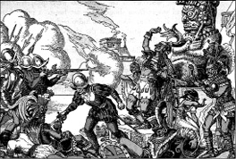
Aztek yerlileri, ateşli silahlar ve atlarla topraklarını işgale gelen beyaz İspanyollar karşısında büyük bir şok yaşamışlardı. İlk kez ateşli silah ve at görüyorlardı. Öyle ki, içlerinden birinin kafasını kesene kadar, beyaz adamların ölümsüz olduğuna bile inanmışlardı.
Akdeniz’in en büyük korsanı olan Barbaros Hayrettin Paşa’nın Osmanlı Donanması’nın başına getirilmesiyle Türklerin Akdeniz’deki etkinliği artmış, Akdeniz’deki ticari ve askeri çıkarları bulunan Avrupalılar, buna seyirci kalmak istememişti. Venedik, İspanya, Portekiz, Malta ve Papalık güçlerinden oluşan büyük Haçlı donanması, Adriyatik Denizi’ndeki Preveze Kalesi önünde Osmanlılarla çarpışırken, Haçlılar adına kılıç sallayanlar arasında Meksika Fatihi Cortes de vardı. Her ne kadar büyük bir iştahla savaşsa da, Osmanlı karşısında tarumar olan Haçlı donanmasının utancından Cortes de payını düşeni aldı. Üstelik çatışma esnasında canından da oluyordu. Gemisi batmış, güç bela kurtulmuştu.
Barbaros hatıralarını naklederken Cortes için “Bu Kortez denen zalim, Yeni Dünya’da yüz binlerce insanı ateşte kızartan gayretle melun bir kafirdi.” ifadesini kullanmıştı.
Cortes, Preveze’nin ardından gözden düşmüştü. Yeni maceralar ve keşifler için gerekli desteği bir daha hiç bulamadı. Yıllardır acımasızca salladığı kılıcına veda ederek, Sevilla yakınlarındaki malikanesine kapandı. 62 yaşında öldüğü 1547 yılına kadar da orada yaşadı. Ölümünden sonra vasiyeti gereği Meksika’ya gömüldü.
Cortes, elindeki gücü dâhiyane şekilde kullanması ve yendiği kabilelerle ittifak oluşturmak için sahip olduğu üstün yetenekler sayesinde Meksika’yı fethetmişti. Onun İspanya’nın uzun süreli gücüne ve Yeni Dünya’nın Avrupalılar tarafından kolonileştirilmesine olan etkisi, sadece Francisco Pizarro’nun Güney Amerika’da, Peru’daki İnka medeniyetine yaptıkları eş değer olabilirdi. Her ikisi de çok az sayıda kuvvetle ülkeleri adına büyük kazanımlar elde etmiş, Güney ve Orta Amerika’nın büyük bir kısmını yerlilerden gasp ederek, İspanyol krallığının hazinesine yazdırmışlardı.
NOTLAR
- Yeni Dünya’nın zenginliklerinin kıta Avrupa’sına taşınmasında ve Avrupa’daki sermaye birikiminde önemli rol oynayan isimlerin başında gelir.
- Aztek İmparatorluğu’nu yıktı. Yucatan’da Mayalarla, Akdeniz’de Cezayirli korsanlarla savaştı.
- Şiddetin politik bir araç olduğuna inanırdı. Hedefe ulaşmak için binlerce sivili katletti. Yerliler arasında Hıristiyanlığı yaymak adına güç kullanmaktan kaçınmadı.
- İyi bir yazardı. Meksika’daki fetihlerini anlattığı ve dönemin İspanya kralına yazdığı mektuplar, abartılı bir dil kullandığı kabul edilmesine rağmen, detaylı ve canlı anlatımıyla, İspanyol Edebiyatı’nın o dönemdeki en sağlam metinleri olarak değerlendirilir. Aztek medeniyeti ile ilgili bilgilerin çoğu Cortes’in mektuplarından elde edilmiştir.
- Gözden düştüğü günlerde, bir fırsatını bulup kralı taşıyan at arabasının kapısına tırmanmış, kralın kim olduğunu sorması üzerine “Ben size atalarınızın miras bıraktığı topraklardan daha fazlasını veren adamım” demişti.
- Birçok yere adı verilmiş olmasına rağmen günümüz Meksika’sında, tarihin unutulması gereken bir parçası (Damnatio memoriae) olarak görülür.
- Aztek İmparatoru Montezuma, elinden düşürmediği içecekten, ülkesini işgale gelen Cortes ve adamlarına da ikram etmişti. Bu yeni tattan çok etkilenen İspanyol kâşif, içeceğin yapıldığı bitkinin tohumlarını İspanya’ya gönderdi. Yeni içecek kısa sürede Avrupa’ya yayıldı. Bu içecek, kahveden başka bir şey değildi.
At üzerinden inmedi, Osmanlı’yı cihan imparatorluğu yaptı
KANUNİ SULTAN SÜLEYMAN
(6 Kasım 1494-5/6 Eylül 1566)
‘Ben, buradan daha mutlu bir devlet bilmiyorum. Her taraf Allah’ın nimetleri ile döşeli. Savaş ve barışı o kontrol ediyor, çok fazla altını, halkı, gemisi var ve sadakat konusunda hiçbir devlet onunla karşılaştırılamaz. Tanrı, bütün İmparatorların en adilini korusun.’
Venedik büyükelçisi, İstanbul, 1525.
Süleyman, muhteşem bir idarecinin olması gereken her şeydi. Adildi; önüne gelen davalarda hep doğru kararlar veriyordu. Cesurdu; savaşlarda hep ordusunun önünde yer alıyordu. Zengindi; lüks içinde yaşıyordu ve başkenti İstanbul’u ihtişamlı bir kent haline getirmişti. Kültürlüydü; divanında filozoflar ve sanatçılar doluydu ve kendisi de birçok sanatla, özellikle de şiirle ilgileniyordu. 6 Kasım 1494’de Hafsa Sultan’dan, Karadeniz kıyısındaki Trabzon kentinde I. Selim’in tek oğlu olarak dünyaya geldi. Tahta 1520 yılından geçti ve, dile kolay, tam 46 yıl hüküm sürdü. Hükümranlığı süresince imparatorluğunu dünyanın en büyüğü yapana kadar atalarının izinden ve hedeflerinden ayrılmadı. Adını, Kuran’da da mükemmel bir lider olarak tasvir edilen Hz. Süleyman’dan almıştı. Süleyman da tıpkı onun gibi adil, bilgili ve adaşının yakışır bir takipçisiydi. Batı’da Muhteşem Süleyman, Doğuda ise Osmanlı yasal sistemini yeniden yapılandırmasından kaynaklanan lakabıyla ‘Kanuni’ Sultan Süleyman olarak isimlendirildi. İmparatorluk içerisinde ise adil ve yolsuzluk düşmanı olarak biliniyordu. Aynı zamanda yetenekli bir kuyumcu ve şair olan Süleyman, sanatçıların ve düşünürlerin de büyük hamisiydi. Osmanlı İmparatorluğu’nun kültürel gelişiminin altın çağını yönetmiş, onun döneminde Osmanlı, yükseliş döneminin zirvesine ulaşmış, hem devlet hem de bireysel açıdan ülke, en ihtişamlı dönemini yaşamıştı.
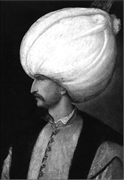
Süleyman’ın döneminde, coğrafi keşiflerin sonucu olarak Batılı güçler arasında kıyasıya bir sömürgecilik yarışı vardı. Başı Portekiz ve İspanya çekiyordu. Özellikle Portekizli denizciler, Kızıldeniz ve Hint ticaret yollarında etkindi. Ümit Burnu’nun keşfi Osmanlıların baharat ticaretine büyük darbe vurmuştu. Buna kayıtsız kalamayan Sultan Süleyman, denizcilerini 4 kez Hind seferine çıkardı. Lakin okyanuslara hazır olmayan donanma, başarılı olamadı. Bu Süleyman’ın istediğini alamadığı ender girişimlerdendi.
Devraldığı sınırları ikiye katladı
Süleyman, 7 yaşına kadar babaannesi Gülbahar Hatun tarafından yetiştirildi ve eğitimini tamamlaması için büyükbabası II. Beyazıt’ın yanına İstanbul’a gönderildi. Savaş sanatının yanı sıra tarih, bilim, edebiyat ve ilahiyat dersleri aldı. 15 yaşına gelince kendi isteğiyle Şarki eyaletlerine vali olarak gönderildi. Babası Sultan Selim, 1512’de babasını devirip yerine geçince, tahta göz koyan diğer isimlerle savaşarak babasının ülkeyi yönetmesine yardım etmek için İstanbul’a geldi. 8 yıl sonra babası öldüğünde, tartışmasız bir şekilde tahtın varisi oldu. Devraldığı devlet, zengin, güçlü ve durağan bir devletti. Onu gıpta edilecek bir konuma getirmek, bir numaralı hedefiydi.
Süleyman, Avrupa’ya on, Asya’ya ise üç büyük sefer düzenlemiş, bunların büyük kısmında başarıya ulaşarak yenilmez bir armadaya dönüşmüştü. Süleyman, hakimiyeti boyunca Osmanlı İmparatorluğu topraklarını genişletti; babasından aldığı toprakları ikiye katladı. Saltanatının sonuna geldiğinde muhtemelen dünyadaki en güçlü kişiydi. İmparatorluğunun sınırları, Arap yarımadasından Viyana’ya, Kırım’dan Sudan’a kadar uzanıyordu. Avrupa’da Arnavutluk ve Macaristan’ı alarak, nefesini Habsburg Hanedanlığı’nın ensesinde hissettirdi. Avrupa’ya açılan geçit olarak görülen Belgrad’ı ele geçirdi; ancak Viyana’yı alamadı. Donanması Akdeniz’in en güçlüsü olduktan sonra kuzey Afrika’daki bütün ana limanları ve Rodos’tan başlayarak bütün adaları hakimiyeti altına aldı. Abbasi halifesi tahtından inince Pers İmparatorluğu’nun büyük kısmını ele geçirmiş; bugünkü Azerbaycan ve Irak topraklarının hâkimi olmuştu. Oysa tahta geçtiği sırada Avrupalıların gözünde dişsiz ve uysal bir imparatordan başka bir şey değildi. Kısa sürede yanıldıklarını anladılar. Onun gelişiyle, Fransa, Kutsal Roma İmparatorluğu’na karşı güçlü bir müttefik, tüm Avrupa ise hem hayran olacağı hem de korkacağı yeni bir rakip bulmuştu.
Sultan Süleyman Osmanlı’nın dümenine geçtiğinde, babasının yaptığı ıslahatlarla temelleri sağlamlaşmış bir İmparatorluk devralmıştı. Aynı dönemde Avrupa da büyük bir dönüşüm geçiriyordu. Rönesans’ın etkisiyle teknik açıdan ilerleme göstermeye başlayan Avrupa’nın iki büyük gücü Fransa ve Almanya, dini alandaki reformlarla birliklerini sağlamıştı. Kanuni’nin en büyük kozu ise, Osmanlı’nın kendisi ile boy ölçüşmesi zor gibi görünen askeri gücüydü. Sultan, atalarının yolundan gitmeye kararlıydı. Osmanlı’nın gücünü Batı’ya silahla kabullendirecekti.
Sultan Süleyman savaş makinesini çalıştırmakta gecikmedi. 1521’de Şam’da isyan eden valiyi bastırdıktan sonra, gözünü Belgrad’a dikti. Dedelerinden Fatih Sultan Mehmed’in gerçekleştiremediğini yapmak, Belgrad’ı , Macarlardan almak istiyordu. Zira Belgrad, Sırpların, Bulgarların ve Bizanslıların mağlup edilmesiyle, Osmanlı’nın Avrupa içlerine ilerleyişini durdurabilecek tek güç olarak görünen Macarların bertaraf edilmesindeki son engeldi. Belgrad’ı kuşatan Sultan Süleyman, Tuna Nehri’nden yapılan ağır bombardımanın ardından Ağustos 1521’de bu şehri nihayet almış, Macaristan ve Avusturya yolu açılmıştı. Buna rağmen Osmanlı Sultanı dikkatini, Ortadoğu ve Anadolu’ya yakınlığı Osmanlı çıkarları için sorun oluşturan Doğu Akdeniz adası Rodos’a çevirmişti. 1522 yılında babasından kalan donanmanın avantajını kullanarak 400 gemiden oluşan bir armadayı adaya gönderdi ve adanın Anadolu’ya en yakın ucuna da kendisinin kumanda ettiği 100 bin kişilik bir ordu getirdi. Beş ay süren şiddetli çatışmaların ardından Rodos teslim oldu ve Süleyman, Rodos Şövalyelerinin adadan ayrılarak Malta’da yeni bir üs kurmalarına izin verdi. Muhteşem Süleyman, şimdi dikkatini, asıl hedefine, tekrar Macaristan’a verebilirdi.
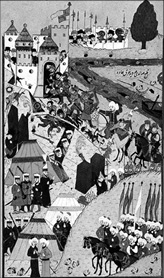
Sultan Süleyman, 46 yıl iktidarda kalarak, Osmanoğulları arasında en uzun süreli tahtta oturan padişah olarak tarihe geçti. Bu zaman zarfında babası Yavuz Sultan Selim’den devraldığı 6.557.000 km2’lik Osmanlı toprağını, otuz sene içinde katıldığı 25 seferle, 14.893.000 km2’ye ulaştırdı. Fethullah Çelebi Arifi ya da Matrakçı Nasuh tarafından çizildiği sanılan ve Sultan Süleyman’ı Nahcivan seferinde gösteren bir minyatür çalışması.
Papa’nın son ümidini de Süleyman kırıyor
10 Mart 1526’da Sultan Süleyman, Rumeli kumandanlarına, Anadolu Beylerbeyi Behram Paşa’ya, Bosna Beylerbeyine ve Kırım Hanı’ na haber yollayarak, hazırlanmalarını emretti. Macaristan’a gidiliyordu. 23 Nisan 1526’ da 100 bin kişilik Osmanlı ordusu, 300 topla birlikte yola çıktı. İki ordu, Budapeşte’ nin güneyindeki Mohaç Ovası’ nda karşılıklı savaş düzeni aldı. 26 Ağustosta savaş meydanındaki dağılım şöyle şekillenmişti: 5 bin kişilik öncü kuvvetlerin başındaki Bali Bey’i, emrindeki Rumeli askerleri ve 150 topla Sadrazam İbrahim Paşa takip ediyordu. Onların gerisinde ise Anadolu askerleri ve diğer topçularla Behram Paşa mevzilenmişti. Sultan Süleyman ise, savaşın ardından ‘Türk Tepesi’ olarak anılmaya başlanacak, ovanın en yüksek tepesini tutuyordu. Macarlar, topraklarını savunma hırsı ile ilk saldıran taraf oldu, ama Süleyman’ın onlara bir sürprizi vardı. 60 bin kişilik hafif donanımlı tüfekli Osmanlı süvarisi, Avrupalıların o güne kadar cephede karşılaşmadığı 300 topun neden olduğu panik ve şaşkınlıkta, Macar ordusunun bel kemiğini teşkil eden ağır zırhlı süvarileri imha etmişti. Tarihe en kısa meydan savaşı (yaklaşık 2 saat sürmüştü) olarak geçen Mohaç’ın ardından tüm Macaristan Osmanlı hakimiyetine girmiş oluyordu. Süleyman, Papalık tarafından Türklere karşı kurulan savunma zincirinin son halkası olarak gösterilen Macaristan’ı ele geçirmiş, böylelikle, II.Viyana Kuşatması’na kadar Avrupa’ya hakim olan ‘Türkler yenilmez’ düşüncesini zihinlere kazımıştı. Osmanlı artık Avrupa’nın en kudretli gücüydü.
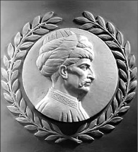
Sultan Süleyman’ın adından daha bilinir hale gelen ‘Kanuni’ lakabı, önceki Osmanlı kanunnamelerini ve döneminin gerektirdiği değişiklikleri, Kanunname-i Al-i Osman adı altında, İslam hukuku çerçevesinde bir araya getirmesinden kaynaklanmıştı. Öyle ki, halen kendisine ait bir rölyef, Amerikan Temsilciler Meclisi’ndeki ‘Kanun Yapıcılar’ koridorundaki duvarda asılı duruyor.
Muhteşem Süleyman Viyana önlerinde
Her ne kadar Macaristan’da Osmanlı’nın da desteklediği ve başında Erdel voyvodası Janos Zapolya’nın bulunduğu yeni bir düzen kurulmuş olsa da, bu uzun sürmeyecekti. Alman İmparatoru Karl V, bölgeye müdahale ederek kardeşi Bohemya Kralı ve aynı zamanda Avusturya Dükü Ferdinand’ın Macar kralı olarak ilan edileceği süreci başlattı. Osmanlı ordusunun Macaristan’dan çekilmiş olması ile manevra imkanına kavuşan Ferdinand, Budin Kalesini ele geçirerek, Osmanlı destekli Janos’u devirdi. Bununla da kalmayıp, Osmanlı’dan, bölgenin büyük bir kısmını kendisine bırakmasını talep etti. İşler çığırından çıkıyordu. Duruma kayıtsız kalmaya niyeti olmayan Sultan Süleyman, Macaristan’ın tekrar kontrol altına alınması ve aynı zamanda Almanya’nın dizginlenmesi için gözünü stratejik bir noktaya dikmişti: Viyana
10 Mayıs 1529’da İstanbul’dan yola çıkan Osmanlı ordusu, 5 Eylül’de Budin Kalesi’ni ele geçirdi. Sultan Süleyman, 12 Eylül’de Janos’u tekrar tahta geçirmişti. Tarihler 26 Eylül’ü gösterdiğinde, Viyana kalesi Osmanlılar tarafından kuşatılmıştı bile. Lakin düşman bilenmiş ve mevzilerini tahkim etmiş, bekliyordu.
Süleyman, kale kumandanı Niklas Zalem’e haber saldı. Kalenin teslim edilmesini istiyordu. Aldığı cevap, ‘topyekun savunma’ oldu. Avusturya kuvvetleri, sadece kaleyi savunmakla kalmıyor, aynı zamanda 30 bin kişilik güçleriyle, kaleden çıkıp vur-geri çekil tarzı eylemler de yapıyordu. Mevsim şartları ve ulaşımın yetersizliği ile ağır toplarını geride bırakmak zorunda kalan Osmanlılar, bir türlü kaleye öldürücü darbeyi vuramıyorlardı.
Birbiri ardına yapılan saldırılardan da sonuç alınamamış, üstelik şiddetini arttıran kış ve buna paralel baş gösteren yiyecek sıkıntısı, ordunun moralini bozmaya başlamıştı. Sultan Süleyman 15 Ekim’de kuşatmayı kaldırttı. Ordu İstanbul’a dönüyordu…
Büyük Sultan’ın ölümünden 117 yıl sonra, Merzifonlu Kara Mustafa komutasındaki Osmanlı ordusu, bir kez daha Viyana kapılarına dayanacak, ama Sultan Süleyman’ın ulaşamadığı zafer, Merzifonluya da nasip olmayacaktı.
Yine de Sultan Süleyman, Viyana’yı alamasa da, Kutsal Roma İmparatoru V. Charles, Fransız Kralı I. Francis, İngiltere Kralı VIII. Henry, Polonya Kralı II. Sigismund ve Rus Çarı IV. Ivan gibi 16. Yüzyıl Avrupa’sının etkin liderlerinin gözünde, saygı duyulması gereken önemli bir düşman olarak kalmaya devam edecekti.
Avrupa’yı bitirip İran’a yöneldi
Sultan Süleyman, İstanbul Antlaşmasıyla geçici de olsa Avrupa sınırlarını sağlama aldıktan sonra yüzünü hep tehdit olarak gördüğü Perslere; İran’da ise yıkılan Akkoyunlu devletinin yerine kurulan Şii Safevi Hanedanlığı’na çevirdi. Zira kendisi Avrupa’da savaşırken, Anadolu’da baş gösteren iç isyanları körükleyen Safeviler, Osmanlı İmparatorluğu için ciddi bir tehlikeye dönüşmüştü. Bu esnada, Safevilerin başı Şah Tahmaşp’ın, Sultan Süleyman’a bağlı olan Bağdat valisini öldürmesi ve yerine kendisine yakın birini ataması, ardından da Bitlis valisinin taraf değiştirerek Safeviler ile ittifaka girmesi, bardağı taşıran son damla olmuştu. Nihayetinde Sultan Süleyman, 1533’de Sadrazamı İbrahim Paşa’ya Anadolu seferine çıkması emrini verdi. İbrahim Paşa, Bitlis’i geri aldı ve bir direnişle karşılaşmaksızın Tebriz’i ele geçirdi. 1534’te İbrahim’in güçleri ile birleşen Sultan Süleyman, savaşmaktan kaçarak topraklarını feda eden Şah’ı bulmak için Pers İmparatorluğu içine doğru ilerlemeye başladı. Şah ise Osmanlı ordusunu taciz ederek içerilere doğru kaçıyordu. Ertesi yıl Sultan Süleyman ve İbrahim, Bağdat’a muhteşem bir giriş yaptı, kentin kumandanı kenti teslim etti. Sultan Süleyman, İslam dünyasının lideri ve Abbasi Halifelerinin varisi olarak konumunu güçlendirmişti. Ama şahın peşini bırakmaya niyetli değildi.
Sultan Süleyman, Şah’ı bir kez daha ve nihai olarak yenmek için 1548-1549’da bir sefer daha düzenledi. Daha önce yaptığı gibi Osmanlılar ile karşılaşmaktan çekinen Şah, Azerbaycan’a kadar çekilerek, Osmanlıları, Kafkasların sert kışı ile baş başa bıraktı. Süleyman, Tebriz’de ve İran’ın Azerbaycan kısmında birkaç geçici fetih, Van’da hala süren bir hâkimiyet ve Gürcistan’daki bazı kalelerin ele geçirilmesi ile devam eden harekatına son verdi. Şahı bir kez daha elinden kaçırmıştı.
Süleyman, 1553 yılında Şah’a karşı üçüncü ve son seferini düzenledi. Şah’ın oğluna kaptırmış olduğu Erzurum civarını geri aldı, Yukarı Fırat’ı geçti ve Pers İmparatorluğu’nun bazı kısımlarını hakimiyeti altına aldı. Şah, her zamanki gibi Osmanlı ile çatışmaya girmekten kaçınmıştı. Nihayetinde yorulan Şah, uzlaşma önerdi. 29 Mayıs 1555’te, Kanuni’nin Amasya’daki karargahına gelen Şahın elçisi Ferruhzade’nin imzaladığı Amasya Antlaşması ile, Kanuni’nin İran seferleri ile birlikte, Osmanlı ile İranlıların 47 yıllık savaşlar serisi de sona eriyordu. Antlaşmaya göre, Tebriz, İran’a veriliyor, Bağdat’ın, Aşağı Mezopotamya’nın, Fırat ve Dicle nehirlerinin ağızlarının ve Basra Körfezi’nin Osmanlı hakimiyetinde kalması kararlaştırılıyordu. Kendisini kurtaran Şah, ayrıca Osmanlı topraklarına yönelik bütün saldırıları durdurma sözü vermişti.
Akdeniz’i haçlılardan temizledi
Karadaki fetihleri arasında soluklanan Sultan Süleyman, Mora adasındaki Koron kalesinin V. Charles’ın amirali Andrea Dorya tarafından ele geçirildiği haberi ile sarsılmıştı. Doğu Akdeniz’deki İspanyol varlığı ve V. Charles’ın bölgedeki Osmanlı hakimiyetine düşmanlık beslediğine dair yolladığı sinyaller, Sultanı endişelendiriyordu. Osmanlı’nın Akdeniz’deki pozisyonunu pekiştirmenin gerekli olduğunu hisseden Sultan, Avrupalılar tarafından, korsanlık geçmişi dolayısı ile ‘Barbarossa’ olarak bilinen kumandanı Hayrettin’i donanmanın başına getirdi. V. Charles, 1535’te Tunus’ta Osmanlılara karşı önemli bir zafer kazandı. Bu yenilgi ve Venedikliler ile ertesi yıl girilen savaş, Sultan Süleyman’ı, Fransa Kralı I. Francis’in bir ittifak kurmak için öne sürdüğü şartları kabul etmeye zorladı. Hem Francis hem de Süleyman, Charles’ı düşman olarak görüyordu. 1538’de İspanyol donanması, Preveze Savaşı’nda Barbaros karşısında hezimete uğradı ve Türkler, 1571’deki Lepanto Savaşı’ndaki yenilgilerine kadar, doğu Akdeniz’i 33 yıllığına hakimiyeti altına aldılar.
Sultan Süleyman’ın Akdeniz’deki hakimiyetini tesis etmesiyle, Fas’ın doğusu ve Kuzey Afrika’nın geniş toprakları birleştirilmişti. Berberi Devletleri olan Trablusgarp, Tunus ve Cezayir, imparatorluğun otonom devletleri olmuş ve Süleyman’ın, V. Charles ile mücadelesinde, ön cephe olarak hizmet etmişlerdi. V. Charles’ın 1541’de Türkleri buralardan atma girişimi başarısızlıkla sonuçlandı. O güne kadar Kuzey Afrika’nın Berberi korsanları tarafından gerçekleştirilen korsanlık faaliyetleri, İspanya’ya karşı olan savaşın bir parçası olarak kalmışlardı ve Osmanlı genişlemesi bir süre Akdeniz’deki hâkimiyeti ile anılır olmuştu. Osmanlı donanması, 1554’te Portekiz’e yenilene kadar, Kızıl Deniz, Basra Körfezi ve Aden’deki hakimiyetini devam ettirecekti.
I. Francis, 1538’de V. Charles ile anlaşma imzalamaya ikna oldu; ancak 1542’de yine Süleyman ile ittifak kurdu. 1543’te ise Charles, İngiltere Kralı VIII Henry ile işbirliği yaptı ve Francis’i Crepy-en-Laonnois Anlaşması’nı imzalamaya zorladı. Charles, savaşın büyük giderlerini karşılamak için Süleyman ile çok aşağılayıcı bir anlaşma imzaladı. 1544 yılında İspanya, Fransa’ya savaş açınca Francis, Süleyman’dan yardım istedi. Süleyman da Barbaros komutasında bir donanma gönderdi ve İspanyolları yenerek Napoli’yi onların elinden aldı. Barbaros’un bu başarısı kendisine Beylerbeyi (kumandanlar kumandanı) ünvanını getirecekti.
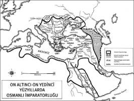
Batılıların ‘Muhteşem’, doğuluların ise ‘Kanuni’ olarak isimlendirdikleri Sultan Süleyman ise, dönemin İmparatorluk sınırlarını gösteren bu haritanın da haklı çıkardığı şekilde, yazdığı mektuplardan birinde kendisini şöyle tarif ediyordu: ‘Ben ki Sultan-i salâtin-i zaman burhân-i havakın-i avân tâc-bahs-i husrevân-i cihan zillullâhi’1-meliki’l-mennân Akdeniz’in ve Karadeniz’in ve Rumeli’nin ve Anadolu’nun ve Şam ve Halep ve Karaman ve Rûm’un ve vilâyeti-i Dulkadriye’nin ve Diyârbekir’in ve Azerbaycan ve Van’ın ve Budun ve Tamisvar vilâyetlerinin ve Mısır’ın ve Mekke’nin ve Medine’nin ve Kudüs’ün ve Halilü’r-Rahmânin külliyen diyâr-i Arab’ın ve Yemen’in ve Bağdad ve Basra ve Cezayir vilâyetlerinin ve dahi nice memleketlerin ki âbâ-i kiram ve ecdâd-i izamim -enârallâhü berâhinehüm- kuvvet-i kahire ile fetheyledikleri ve cenabı-i celalet-meâbim dahi tig-i âtes-bâr simsîr-i zafernigârım ile fetheylediğim nice diyarın sultanı ve pâdişâhı hazret-i Sultan Bâyezıd oğlu Sultan Selim Hân oğlu Sultan Süleyman Şah Hân’ım.’
Son nefesini at üzerinde verdi
Hükümranlığının sonlarına doğru Süleyman, Topkapı Sarayı’nda inzivaya çekilmiş, ülke yönetimini Sokullu’ya devretmişti. Manzari umumiye ise şöyleydi: Osmanlı’nın İran seferlerinde Safevî Devleti, Papalık ve diğer Hıristiyan güçler ittifak etmiş, Avusturya ve Macaristan’da Osmanlı’nın canını sıkacak işler yapmaya başlamışlardı. Üstelik 1562 Osmanlı-Avusturya Antlaşması’nda ödemeyi kabul ettikleri vergi konusunda da yan çiziyorlardı. Bu esnada Kutsal Roma İmparatorluğu’nun yeni lideri İmparator Maksimilyan II’nin rahatsız edici politikaları ve Macaristan’daki Zigetvar Kalesindeki düşman birliklerinin tehditkar davranışları üzerine yeni bir sefer kaçınılmaz görünüyordu. Osmanlı ordusu 1 Mayıs 1566’da İstanbul’dan hareket etti. Ordunun başında, 11 yıldan bu yana sefere çıkmayan 73 yaşındaki Sultan Süleyman vardı. Aslında ata bile binemeyecek kadar bitkin olan Sultan,veziri Sokullu Mehmet Paşa’nın ısrarı ile sefere katılmıştı. Her ne kadar seferin büyük bir bölümünde tahteravanla taşınsa da, yerleşim bölgelerine girişlerde, psikolojik savaş taktikleri gereği, atına biniyordu. Osmanlılar 6 Ağustos 1566’da Zigervar’a ulaştı ve Sultan Süleyman, Similehov tepesine kurulan otağına yerleşti. Kuşatma başlamıştı. Kaleyi Kont Nikola Zrinski savunuyordu. Osmanlıların 90 bin asker ve 300 topla sürdürdüğü kuşatma, ‘Rum Ateşi’nin de (kızgın kömür, kükürt ve zift karışımından oluşan ve su eklendikçe alevi artan bir tür kimyasal silah) kullanılmasıyla Eylül başlarında doruğa çıkmış, çıtan çatışmalarda ağır yaralan Zrinski ölmüştü. 7 Eylül’de ise kale fethedildi. Lakin Kanuni’nin ömrü bu zaferi görmeye yetmedi. Sokullu, savaşan güçlerin moralini bozmamak için, Zaferden önceki gece vefat eden Kanuni’nin ölümünü ordudan gizlemişti. Büyük Sultan, ölü de olsa, son seferinden de zaferle döndü. Çok sevdiği, uğruna onlarca gazel yazdığı, kendisinden sekiz yıl önce vefat eden sevgili eşi Hürrem Sultan’ın yanınsa, Süleymaniye Camii’nin avlusuna gömüldü. Sultan’ın ölümü, II. Selim İstanbul’da tahtı garanti altına alana kadar bir sır olarak saklandı. Kendisine Sarı veya Sarhoş da denilen Selim, babası kadar muhteşem değildi ve 300 yıl sürecek Osmanlı gerilemesini başlatan isim olarak anılacaktı.
‘Doğunun tüm ihtişamı ile boğazımıza sarılacaklar…’
Adil ve vicdanlı biri olarak ün yapan Süleyman, kurmaylarını sosyal statüsüne veya ününe göre değil meziyetlerine göre seçiyordu. Avusturya Büyükelçisi Ghiselain de Busbecq, bu durumu ‘Sultan, atamalarını yaparken zenginlik veya sınıf sıralamasına hiç önem vermiyordu, adayların namı konusunda yapılan tavsiyeleri de dinlemiyordu; her durumda göreve getirilmesi düşünülen kişinin kendi meziyetlerine bakıyor, karakterini, yeteneğini ve mizacını dikkatlice inceliyordu.’ diyerek anlatır.
Süleyman’ın fetihlerini, İmparatorluğun zirveye ulaştığı 1683’e kadar toprak genişlemeleri takip etti. Süleyman öldüğü zaman, Osmanlı İmparatorluğu dünyanın en önde gelen güçleri arasındaydı, rakibi olmayan bir askerî güce, ekonomik zenginliğe ve toprak genişliğine sahipti. Süleyman’ın fetihleri büyük İslam şehirlerinin (Mekke, Medine, Kudüs, Şam ve Bağdat), Balkan Yarımadası’nın tamamının (bugünkü Avusturya’ya kadar) ve Kuzey Afrika’nın büyük bir kısmının imparatorluğun kontrolüne girmesini sağlamıştı. Avrupa’ya doğru genişlemesi, Osmanlı Türklerine Avrupa güç dengesinde önemli bir yer kazandırdı. De Busbecq, bu durumu şu tespitiyle batıdaki amirlerine aktarıyordu:
‘Türklerin elinde muhteşem imparatorluğun, bozulmamış gücün, zaferlere alışmış olmanın, birlik, disiplin, çalışma, tutumluluk ve uyanıklılığın getirdiği kaynaklar var. Sonucun ne olacağından şüpheniz olabilir mi? Türkler, Perslerle işlerini hallettikten sonra Doğunun tüm ihtişamıyla boğazımıza sarılacaklar. Söylemeye cesaret edemediğim, nasıl hazırlıksız olduğumuzdur.’
Ünlü İngiliz askeri tarihçisi Sör Charles Oman ise, Kanuni için ‘Türk imparatorluğunun çatısını kurdu. İmparatorluğun, onun ölümünden sonra uzun süre ayakta kalması, onun mirasının bir sonucudur ve onun kadar başarılı olamayacak varislerinin onun yaptıklarını geriye götürmesi nesiller almıştır.’ diyecekti.
Sadece kılıç sallamadı aynı zamanda kanun da yaptı
Süleyman, başlangıçta değindiğimiz üzere, Batıda ‘Muhteşem’ olarak anılırken, Osmanlı tebaasında ise ‘Kanuni’ olarak biliniyordu. İmparatorluğun hâkim yasası Şeriat idi ve İslam’ın bu kutsal yasalarını Sultanın değiştirmesi söz konusu değildi. Ancak Süleyman, kendisinden önceki 10 padişah tarafından çıkarılan yasaların hepsini toplamış, tekrarları eledikten ve uyuşmayanlar arasında seçim yaptıktan sonra tek bir yasa hazırlamış ve bu yasanın, İslam’ın temel prensiplerini ihlal etmemesine dikkat etmişti. Ortaya koyduğu yasama, vergilendirme, ceza hukuku ve iltizam gibi konuları içeriyordu. Değişen imparatorluğa ayak uydurmak için yasada reform yapılması da kendi sorumlukları içindeydi. İngiliz yazar ve gazeteci Lord Kinross, Ottoman Centuries isimli eserinde bu konuyu şöyle dile getiriyordu:
‘O sadece babası ve büyük babası gibi bir kılıç adamı ve müthiş bir askeri kumandan değildi. Onlardan, aynı zamanda bir kalem erbabı olmasıyla da farklılaşıyordu. Büyük bir kanun koyucuydu. Halkının gözünde çok âlicenap ve adaletin alçakgönüllü temsilcisi olarak yer etmişti.’
Sultan Süleyman’ın, bugün birçok devlet adamı tarafından kılavuz olarak kabul edilen ve ‘Adalet Çemberi’ olarak isimlendirdiği yönetim formülü ise şöyleydi:
‘Devleti kontrol etmek için büyük bir ordu gerekir,
Askerleri destelemek için ise büyük bir zenginlik gerekir,
Bu zenginliği elde etmek için halkın refah içinde olması gerekir,
Halkın refah içinde olması için ise kanunların adil olması gerekir,
Eğer bunlardan herhangi biri ihmal edilirse devlet çöker.’
Kanuni Sultan Süleyman, reaya olarak bilinen ve sipahi topraklarında çalışan Hıristiyan tebaasının haklarına özen gösterdi. Onun tarafından çıkarılan ve Kanun-u Reaya veya ‘Reaya Kanunları’ olarak bilinen yasalar, reaya tarafından verilen vergi ve haraçları düzenledi, statülerini ‘köylüler’den ‘Hıristiyan köylülere’ yükseltti ve reformlardan yararlanarak Türk topraklarına taşınabilmelerine müsaade etti. Dahası, belli suçlar karşısından öngörülen idam ve el/kol kesme cezalarını azaltan yeni bir ceza ve polis kanunnamesi çıkardı. Vergilendirme konusunda ise hayvanlar, madenler, ticari gelirler, ithalat ve ihracat vergileri gibi pek çok çeşitli konuda vergi uyguladı. Vergilere ek olarak itibarını kaybeden ve toprağını iyi kullanamayan arazi sahiplerinin, arazi veya mülkiyetlerine el konulması ilkesini hayata geçirdi. Sultan Süleyman’ın kanunları, son halini aldığında Kanun-u Osmanî olarak veya ‘Osmanlı Yasaları’ olarak isimlendiriliyordu. 300 yıldan fazla bir süre kullanılacaklardı.
Sultan, muhteşemliğini, sadece askeri becerilerine borçlu değildi. Eğitim de onun için önemli bir konuydu. Camilere bitişik olara yapılan ve fonu dini vakıflar tarafından sağlanan okullar, Müslüman çocuklarına dönemin Avrupa ülkelerinden çok daha iyi bir eğitim veriyordu. Başkentteki mekteplerin (ilkokulların) sayısı on dörde çıkarılmıştı. Buralarda çocuklara okuma, yazma ve İslam’ın temel kuralları öğretiliyor, eğitimde daha da ileri gitmek isteyen öğrenciler, başkentte bulunan ve gramer, dilbilimi, mantık, metafizik, felsefe, geometri, astronomi, coğrafya ve tasarım gibi derslerin verildiği 8 medreseden (lise) birine devam edebiliyordu.
Süleyman’ın yönetim sistemi de esnekti: Değerini kanıtlayan köleler, rütbelerini yükseltebiliyor hatta en üst mevkilere kadar çıkabiliyordu. Süleyman’ın bütün sadrazamları, Osmanlılar tarafından esir alınan Hıristiyanlar arasından çıkmıştı. Akdeniz’in korkulan korsanı ‘Barbarossa’ (Barbaros Hayrettin Paşa) Osmanlı donanmasının başkomutanlığına yükselmişti. Sadece Müslümanlara açık olan makamlar, İslam öğretileri konusunda yetenekli olanları seçildiği ulema, kadılık gibi mevkilerdi. Bu arada Geoffrey Lewis ve Bernard Lewis gibi, İslam ve Türkiye üzerine yazıları ile tanınan batılıların, Kanuni’yi, devlet işlerini kontrolsüz bir şekilde vezirlere bırakarak, ‘perde gerisine çekilen padişah’ devrini başlattığı iddiası ile eleştirdiğini de hatırlatalım.
‘Ey Fransa Kralı Fransuva…’
Sultan Süleyman, sahip olduğu gücü, diplomatik ilişkilerin yürütülmesinde muhataplarına hissettirmekten geri durmuyordu. Öyle ki, diğer ülke krallarına yazdığı mektuplardaki üslup, asırlar sonra bile, okuyana Kanuni dönemindeki Osmanlı etkisine dair doneler vermekten geri durmuyor. Sözgelimi
Kutsal Roma-Cermen İmparatoru Şarlken ile 24 Şubat 1525’te Kuzey İtalya’da yaptığı savaşta yenik düşen Fransa Kralı Fransuva’nın yardım istemesi üzerine kendisine yazdığı mektupta şöyle sesleniyordu Kanuni:
‘Ben ki sultanlar sultanı, hakanlar hakanı hükümdarlara taç veren Allah’ın yeryüzündeki gölgesi Akdeniz’in ve Karadeniz’in ve Rumeli’nin ve Anadolu’nun ve Azerbaycan’ın ve Şam’ın ve Halep’in ve Mısır’ın ve Mekke ve Medine’nin ve Kudüs’ün ve bütün Arap diyarının ve Yemen’in ve nice memleketlerin sultanı ve padişahı Sultan Bayezid Han oğlu Sultan Selim Han oğlu Sultan Süleyman Han’ım. Sen ki Fransa vilayetinin Kralı Fransuva’sın.
Hükümdarların sığındığı kapıma elçinizle mektup gönderip, ülkenizi düşman istila edip, şu anda hapiste olduğunuzu bildirip, kurtuluşunuz konusunda bizden yardım talep ediyorsunuz. Söylediğiniz her şey dünyayı idare eden tahtımızın ayaklarına arz olunmuştur. Her şeyden haberdar oldum. Yenilmek ve hapsolunmak hayret edilecek bir şey değildir. Gönlünüzü hoş tutup üzülmeyesiniz. Böyle bir durumda atalarımız düşmanları mağlup etmek ve ülkeler fethetmek için seferden geri kalmamışlardır. Biz de atalarımızın yolundayız ve daima memleketler ve alınmaz kaleler fetih eylemekteyiz. Gece gündüz daima atımız eyerlenmiş ve kılıcımız belimizde kuşatılmıştır. Yüce Allah hayırlara bağışlasın. Allah’ın istediği ne ise olur. Bundan başka haberleri gönderdiğiniz adamınızdan öğrenesiniz. Böyle biliniz.’
Ama bu mektupların içinde şüphesiz en dikkat çekeni, Kanuni’nin yine, Fransuva’ya yazdığı ve Fransa’daki dans akımının başlamasına gösterdiği şu tepki dolu mektuptu:
‘Ey Fransa kralı Fransuva!
Sefir-i kebirimden aldığım mazhara göre malumatım oldu ki memleketinde dans nanımda alamele-innas fuhşiyyat ve lubiyat yapıyormuşsun iş bu name-i humayunumun eline vusulünden itibaren bu melanet ve rezalete son vermediğin taktirde ordu-yu hümayunumla gelip seni kahretmeye muktedir olurum.’
Avusturyalı oryantalist Joseph von Hammer’ın ifadesine göre, bu mektup etkisini göstermiş, Fransa’da dans edilmesi, yüz yıl gibi bir sure askıya alınmıştı.
Denizde ve karada Osmanlı’yı yenilmez armada yaptı
Sultan Süleyman’ın bizzat kendisinin idare ettiği orduları Belgrad, Rodos ve Macaristan’ın büyük kısmını fethetmiş, Viyana’yı kuşatmış, Ortadoğu ile Cezayir’e kadar uzanan Kuzey Afrika topraklarını birleştirmişti. Osmanlılar, Akdeniz, Kızıldeniz ve Pers Körfezi’nin hâkimiyetini ellerinde bulundurmuş, Arabistan sahillerini güvenceye almış ve Avrupalıları Hindistan sahillerinden uzaklaştırmaya başlamıştı. Sultan Süleyman’ın ardından Osmanlı İmparatorluğu, onun kazandırdığı ivmeyle, bir yüzyıl daha genişlemeye devam edecekti.
NOTLAR
- Kırk altı yılla en uzun süre iktidarda kalan Osmanlı İmparatoru oldu. Devraldığı 6.557.000 km2’lik Osmanlı toprağını, yaptığı fetihlerle 14.893.000 km2’ye ulaştırdı. Bulunduğu yüzyıl, dünya tarihine Türk asrı olarak geçti.
- Otuz sene içinde bizzat kendisinin yönettiği yirmi beş sefere çıktı.
- Sadece parlak bir asker ve yönetici değil, aynı zamanda iyi bir de şairdi. Daha sonradan evlendiği cariyelerinden Hürrem Sultan’a (Roalena) yazdığı aşk şiirlerine, ‘Muhibbi’ (aşkın) olarak imza atıyordu.
- Hastalandığında kaleme aldığı ‘Halk içinde muteber bir nesne yok devlet gibi, Olmaya devlet cihanda bir nefes sıhhat gibi.’ şeklindeki beyti, şairliğinin en güzel ürünlerinden biri oldu.
- Mimar Sinan, Süleymaniye camisini bitirince Kanuni Sultan Süleyman’a ‘Padişahım sana öyle bir cami inşa ettim ki, kıyamete değin ayakta duracak bir metanete sahiptir.’ diyerek, eserini takdim etmişti.
- Mekke, Medine ve Kudüs’teki Kubbet’us-Sahra gibi kutsal mekânları tamir ettirdi.
- Dönemindeki başlıca sanatçılar, hattat Ahmed Karahisari, imparatorluk mimarı Sinan, ressam Şahkuli ve Kara Memi, şair Baki ve Fuzuli’ydi.
- Kanuni ile İran Şahı arasında imzalanan Amasya Antlaşması, Osmanlı İmparatorluğu ile İran arasındaki ilk resmi antlaşma olduğu gibi, aynı zamanda İslam dünyasının şahit olduğu ilk din barışı oldu.
- ‘Bu dünya Sultan Süleyman’a kalmadı, sana mı kalacak?’ şeklindeki deyiş, dünyevi iktidarın ulaşabileceği son sınıra ve dünya hayatının geçiciliğine istinaden, halk diline yerleşti.
Kralcıları ezdi, mezarından çıkarılıp asıldı ama İngiltere’yi süper güç yaptı
OLIVER CROMWELL
(1599-1658)
“Sizi alkışlayanlara aldanmayın. Siz asıldığınızda daha da çok alkışlayacaklardır.”
Oliver Cromwell
Oliver Cromwell, 17. yüzyıldaki İngiliz İç Savaşı’nda parlamento yanlısı güçleri yöneterek Kral I. Ve II. Charles taraftarlarına karşı zaferler kazanmış, bu zaferleri, İngiltere’de kısa süreli de olsa Cumhuriyet rejiminin kurulmasıyla sonuçlanmıştı. Yaklaşık 2 asırlık bir aradan sonra ülkesini askeri bir güç olarak tekrar dünya sahnesine çıkartan Cromwell, icraatlarıyla kendisine kral ve diktatör karışımı yetkilerle donanmış ‘Lord Protector’ unvanının verilmesini sağlamıştı. Zeki ve yenilikçi bir askerdi. İngiliz ordusunu profesyonel bir güce dönüştürürken, alışılmadık bir şekilde merhametin acımasızlıkla karıştığı bir tutum sergilemekten kaçınmadı.
Cromwell’in olağanüstü askeri kariyerinin başlaması için otuz yaşını devirmesi gerekecekti. 25 Nisan 1599’da Huntington’da centilmen bir çiftçinin oğlu olarak dünyaya gelen Cromwell’in hayatının ilk dönemlerinde din en belirleyici unsur oldu. Yirmi yaşına geldiğinde Cromwell, katıksız bir Protestan (Püriten) olmuştu. Püritenler, ulusal kiliseyi ve Roma Katolik Kilisesi’nin etkisini temizlemeyi amaçlıyorlardı. Bu andan itibaren Cromwell’in siyasi amaçlarını, dini düşüncelerinden ve önyargılarından ayırmak mümkün olmayacaktı.
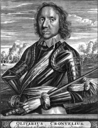
Cromwell’in hayatında ve yaptıklarında din önemli bir rol oynadı. İç savaşta sergilediği misyonun, kendisine tanrı tarafından bahşedildiğine inanıyordu. Lord Protector unvanı ile yaptıklarının çoğuna da dini bir gerekçe bulmaktan geri durmamıştı. İktidarı ele geçirir geçirmez, kendisinin ‘Tanrısal Dönüşüm’ (Godly reformation) olarak isimlendirdiği geniş bir programla, hukuk, adalet ve sosyal sistemlerin insani olmayan tüm unsurlarını ıslah etmeye çalışırken, aynı zamanda alkolizmi ve ahlak dışı davranışları bastırmak için büyük çaba gösterdi.
1628’den 1629’a kadar Cromwell, Parlamento’da Huntington’u temsil etti; ancak Kral I. Charles parlamentoyu feshedince evine döndü. Ancak yıllar sonra 1642’de Charles ve yandaşlarıyla parlamento taraftarları arasında patlak veren iç savaşla birlikte orduya katıldı. 43 yaşındaki Cromwell, ilk kumandanlık deneyimini, bir süvari birliğinin sorumluluğunu üstlenerek yaşadı. Subay ve erlerinden ahlaki karakter ve dürüstlük açısından en yüksek standartlara ulaşmalarını isteyen kahramanımız, emirlerinin hemen yerine getirilmesini istemiş; yağmayı, küfür etmeyi ve diğer ‘imansız’ davranışları uğursuz saymıştı. Dinî ihtirasları ve ‘diğerlerinin’ Tanrı tarafından kutsanmadığı düşüncesi, askerliğe bakışını şekillendiriyordu.
Sihirli kelimesi disiplin oldu
Cromwell, askerlerini en modern silahlar ve zırhlarla donatmış ve mümkün olan en iyi atlara binmelerini sağlamıştı. Maaşlarının zamanında ödenmesine de özel bir önem veriyordu. Cromwell’in ilk komuta deneyiminde ve ardından kumanda ettiği birliklerde kendisini başarıya götüren tek bir unsur vardı: Disiplin. Rutin manevralar ve emrindeki iradeli subaylar, Cromwell’in hücum eden askerlerini değişen şartlara göre vakit kaybetmeden yeniden pozisyonlandırmasını mümkün kılmıştı.
Cromwell taktiklerini, birliklerinin disiplini üzerine kurmuştu. ‘Dörtnala’ saldıran tipik çağdaşlarının aksine onun süvarileri, savaş sırasında düşmanın bir zayıflık belirtisi göstermesiyle oluşabilecek avantajı kullanabilmek adına, ‘tırıs giderek’ ilerlemiştir. Cromwell’in birliğindeki her bir süvarinin cephanesinde çakmak taşlı tabancalar bulunuyor, aynı zamanda üç ayak uzunluğunda iki tarafı keskin palalarını da düşman hatlarını yarmak için kullanıyorlardı. İç savaşın ilk günlerinden itibaren Cromwell’in süvarileri maharetlerini sergiledi. Başarıları Cromwell’e albaylık rütbesini getirdi ve 13 Mayıs 1643’te Granthom’da, Temmuz ayında da Burleigh House ve Gainsborough’da kralcılara karşı zafer kazandığı alayın başına getirildi. Geleneksel olanlardan iki kat daha büyük olan ve 14 taburdan oluşan Cromwell’in alayı, 1643–44 kışında oldukça başarılı saldırılar gerçekleştirdi. Akabinde hem askerleri hem de Cromwell, kendilerine mahsus ‘Ironsides’ (demir gibi güçlü) lakabıyla anılmaya başlayacaktı.
Parlamento taraftarları 1645’de ‘Yeni Model Ordu’ adıyla yeniden organize oldu. Rütbelerini parlamentodaki konumları sayesinde elde etmiş komutanlar, yenileri ile değiştirildi. Sonuç olarak Cromwell, bütün süvari birliklerinin kumandasını devraldı ve orduya disiplin ve organizasyon fikirlerinin telkin edilmesinde önemli bir rol oynadı. Bu değişiklikler, tarihteki ilk profesyonel İngiliz ordusunun doğumuyla sonuçlandı. İlk kez bu dönemde kullanılmaya başlanan kırmızı renkli üniforma ilerleyen yıllarda İngiliz askerlerinin sembolü olacaktı.
Yeni Model Ordusu ve süvarileriyle Cromwell, 14 Haziran 1645’te Monarşi yanlılarını Naseby’de bozguna uğrattı. İç savaş, 1646’da parlamento ve kral arasında varılan kırılgan bir anlaşmayla sona erdi ancak bazı siyasi gelişmelerin ardından 1648’de İkinci İç Savaş patlak verecekti. Cromwell, Wales’te (Galler) çıkan bir ayaklanmayı vakit geçirmeden bastırdı. Preston’da kral ile işbirliği yapan İskoçyalılara karşı kazandığı bu zaferde süvarilerin yanı sıra piyadeleri de başarılı bir şekilde kullanarak generalliği hak ettiğini ispatlamıştı.
Muhalefetin korkulu rüyası oldu
Kralcıları ezip geçen Cromwell, iç savaşın galip kumandanlarının en güçlüsü olarak, 1649 Ocağında I. Charles’ı yargılayan Yüksek Adalet Divanı’nın 135 üyesi arasında yer aldı. Kralın idam kararında onun da imzası vardı. I. Charles’ın kellesiyle birlikte kraliyet de ülkenin gündeminden düşüyordu. Artık tek irade parlamento olacaktı.
İdamın ardından tüm ordunun kumandasını ele alan Cromwell, İngiliz adalarında patlak veren muhalefeti bastırmak için harekete geçti. Ağustosta Dublin’e vardı. Eylül’de Katolik karargâhı olan Drogheda’ya saldırdı. Askerleri kentte yaşayan siviller de dâhil olmak üzere herkesi katletti. Diğer İrlanda garnizonları, aynı akıbeti paylaşmamak adına hemen teslim oldu.
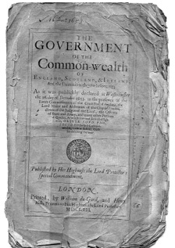
Cromwell’in askeri başarıları siyasette kendisine büyük bir manevra alanı ve itibar kazandırmıştı. Başkomutanlığı esnasında, 1650’lerin başlarında bir kaç kez cumhuriyetçi rejimlere destek vermek ya da muhalif olmaktan kaçınmadı. 1653’de, yazılı bir anayasa ile Lord Protector olarak yetkilerini parlamento ve bir konseyle paylaşmayı kabul etse de, daha çok diktatörvari bir tutum sergileyecekti. Döneminde İngiliz ordusu ve donanması, ülke dışında saldırgan bir dış politika izleyerek, İngiliz çıkarlarını kovaladı. Fotoğrafta kendisini Lord Protector ilan eden deklarasyon görülüyor.
1650 baharıyla İrlanda’daki muhalefetin son kırıntılarını da bastırmış olan Cromwell, bu kez de İskoçya’daki huzursuzluğu bastırmak için adaya döndü. Her ne kadar sayı bakımından üstün olmadığı durumlarda çok nadiren çarpışmaya girse de, Dunbar’da yaklaşık 12 bin kişilik ordusundan neredeyse iki kat fazla olan İskoçlarla yüzleşmekten kaçınmayacaktı. Bir yağmur fırtınasını ordusuna paravan yapıp manevralarını gizlemeyi başaran Cromwell, yaptığı sürpriz baskınla İskoçları yendi. Bir yıl sonra Worcester’daki direnişi sona erdirmişti. Bütün İngiliz adaları artık tek bir iradenin altında birleşiyordu. İradenin sahibiyse Cromwell’den başkası değildi. İngiltere’de cumhuriyet rejimi kurulmuştu.
Krallığı reddetti
Her ne kadar kendisine krallık teklif edilse de Cromwell bunu elinin tersiyle itecek, lakin buna karşılık, 1653’ten itibaren, kendisine parlamentonun da üzerinde bir güç verecek ‘Lord Protector’ (Koruyucu Lord) unvanını kullanmaktan çekinmeyecekti. Bir süre sonra anlaşmazlığa düştüğü parlamentoya da bir fiske vurmuş ve bir bakıma üstü örtülü bir diktatörlük kurmuştu.
Cromwell, orduyu motive etmek için dini duyguları sonuna kadar kullanmış olması ve savaş meydanlarında sergilediği acımasızlık düşünüldüğünde, alışılmadık derecede hoşgörülü bir liderdi. Protestanların özgürce ibadet etmelerinin önünü açmanın yanı sıra 300 yıldan daha fazla bir süre İngiltere’ye girmelerine izin verilmeyen Yahudiler’in geri dönmesine ve rahatça ibadet etmelerine izin verdi.
Mezarından çıkarıp asıldı
Cromwell’in ‘Lord Protector’ olarak hükümranlığı sadece beş yıl sürdü. 3 Eylül 1658’de, 59. doğum gününden hemen sonra Londra’da sıtmadan öldü. Westminster Abbey’e gömüldü. Yerine oğlu Richard geçse de tutunamadı. I. Charles‘ın oğlu II. Charles, 1660’ta iktidarı ele geçirip, krallığı tekrar tesis etti. İntikam zamanı gelmişti. I. Charles‘ın idamının yıl dönümü olan 30 Ocak 1661‘de, Cromwell‘ in mezardan çıkarılan cesedi suçluların idam edildiği Tyburn‘de darağacına asıldı.
Cromwell, İngilizler açısından her zaman çelişkilerle dolu bir figür olarak kaldı. David Hume ve Christopher Hill gibi tarihçilere göre kral katili bir diktatör, Thomas Carlyle ve Samuel Rawson Gardiner gibilerine göreyse de özgürlükler için çarpışan bir kahramandı. Bununla birlikte BBC online tarafından 20 Ekim 2002’de yapılan bir ankette, ‘En İtibarlı 10 İngiliz’ listesine, Churchill’in ardından 3. sıradan girmişti. Buna rağmen İrlandalı Katoliklere yaptıklarının soykırıma eşdeğer olduğu yazılıp çizildi. Kimilerine göreyse o, İngiltere’nin ilk ve de tek diktatörüydü.
Her ne kadar mutlak iktidarı kısa sürse de Cromwell, çağının en önemli aktörlerinden biriydi.
Onun organizasyon yetenekleri ve liderliği olmaksızın parlamento yanlılarının iç savaşı kazanabilmeleri ve bu sayede günümüzde de yürürlükte olan parlamenter monarşik sistemin yerleşmesi mümkün olmazdı. Cromwell tarafından temeli sağlam bir şekilde atılmış askerî yapısı sayesinde İngiltere, yüzyıllar boyunca bir dünya gücü olarak kalmaya devam etti.
NOTLAR
- 42 yaşına kadar askerlikle hiçbir ilgisi yoktu. Kısa zamanda ordunun bir numaralı ismi oldu.
- “Her şeyin başı disiplindir” ilkesine iman etti.
- İngiltere’nin rejimini kısa ömürlü de olsa Cumhuriyet’e çevirdi.
- İnanç özgürlüğünü savunurken, dine hakaret edenlere işkence yaptırdı.
- Ölümünün üzerinden neredeyse 400 yıl geçmesine rağmen kahraman mı yoksa acımasız bir diktatör müydü, şeklindeki tartışmalar devam ediyor.
- Hakkında 4 bine yakın kitap yazıldı.
- Döneminde İngiliz donanması Hollanda ve İspanyol donanmaları karşısında üstünlük elde etti.
Osmanlı ‘deli’, Batı ‘büyük’ dedi; Rusya’yı dünya devi yaptı
BÜYÜK PETRO
(Pyotr Alexeyevich Romanov)(1672-1725)
“Bir imparatorluk fethettim ama
henüz kendimi fethedemedim.”
Çar Petro
Rusların efsane Çarı Korkunç İvan (Ivan IV Vasilyevich) Batı Avrupa’ya giden ticaret yolları açmak istemişti. Ama Rusya’nın Kuzey Denizi’ne çıkışı yoktu. Bu çıkış için Livonya’yı (bugünkü Letonya ve Estonya’nın topraklarından oluşan bir Baltık devleti) işgal edince, Rusya, Polonya, Danimarka ve İsveç, kendilerini uzun sürecek bir savaşın içinde bulmuş; bu hesaplaşmadan galip çıkan İsveç, Kuzey Avrupa’nın hâkim gücü olmuştu. İsveç, Rusya’nın denize çıkışını adeta mühürlemişti. Rusya, Asya steplerindeki Türkler ile Kuzey Avrupa arasına sıkışıp kalmıştı. Rusya’nın bu durumu, silik yönetim sergileyen birkaç çarın iktidarı boyunca devam edecekti. Ta ki, I. Petro’nun doğacağı zamana kadar. I. Petro, ya da daha bilinen ismi ile Büyük Petro, Çarlık Rusya’sının ve onun devamında kurulacak olan Sovyetlerin kaderini değiştiren isim oldu.
Rusya tarihindeki en etkili çar ve asker olan Büyük Petro, 18. yüzyıl başlarında, sessiz sakin topraklardan oluşan ülkesini, dünyanın en büyük güçlerinden birine dönüştürmeyi başarmıştı. Bu başarısının ardında, ülkesini modernleştirme ve güçlü bir ordu kurma adına Batı düşüncesini Rus geleneği ile birleştirebilmiş olması yatıyordu. Çok kan dökme pahasına da olsa…
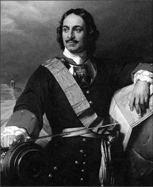
Petro’nun orduyu modernleştirmeye ve teknolojik gelişmelere verdiği ağırlık, Rusya’daki ticari hayatı da besledi. Özellikle Baltık kıyısındaki limanlar çevresinde devlet kontrollü sanayi ve üretim hamlesi başladı. Aynı zamanda, tıpkı Osmanlıdaki yeniçeriler gibi, devşirme usulü yetişen askerlerden oluşan ve Rusya’daki her türlü reformist harekete karşı çıkan özel birlikleri (Streltsy) ilga etti. Resim: Çar Büyük Petro’nun Fransız ressam Paul Delaroche tarafından yapılan tablosu.
Çar Alexis ve ikinci karısı Natalya Naryshkin’in çocuğu olarak 9 Haziran 1672’de Moskova’da dünyaya gelen Petro, babasının ölümüyle birlikte, 1682’de, henüz 10 yaşındayken zihinsel özürlü üvey kardeşi V. İvan’la birlikte tahta çıktı. Ama ülkeyi yöneten asıl figür, üvey ablası Sofia’ydı. Büyük hayalleri olan Petro’nun kaybedecek vakti yoktu. 1689’da, 17 yaşındayken, bir saray darbesiyle ablasını ekarte ederek, Çarlık Rusyasının tek patronu oldu. Daha çok Rusya’yı ‘Batılılaştırmasındaki’ performansıyla gündeme gelse de, Petro, enerjisinin büyük bir kısmını, doğrudan orduyla ilgili meselelere harcamıştı. Dile kolay, 35 yıldan fazla süren hükümranlığında, Rus top ve tüfeklerinin patlamadığı süre, sadece bir yıldı.
Gerçek askerlerle srateji oyunları oynadı
İktidarının ilk on yılını tamamlamadan, görenleri ürküten bir fiziğe kavuşmuş, yaklaşık iki metre boyunda gürbüz birine dönüşmüştü. Ülkesinin de kendisi kadar güçlü olmasını hayal ediyordu. Askeri tarihe ve teorilere aşırı ilgi duyan Petro, çalıştıklarını daha iyi anlayabilmesini mümkün kılacak savaş oyunları oynamak amacıyla iki muhafız bölüğü kurmuştu. Bu oyunlarda gerçek cephane kullanılıyordu…
Genç Petro, kara gücünün tek başına Rus ordusun kuvvetini oluşturamayacağını anlamış, dikkatini güçlü bir donanma fikrine yoğunlaştırmıştı. Ama bundan da önce, Rusların denize açılan bir kapıya ihtiyacı vardı. Henüz 24 yaşındayken, Azak’da Osmanlılara karşı bir saldırıya girişti. Burada kazandığı zafer, Rusların Karadeniz’le buluşmasını sağladı. Denize ulaşmışlardı ama donanmaları yoktu. Bu haliyle Rusya topallamaya mahkûmdu. Azak zaferine rağmen Petro, ne ordusunun ne de ülkesinin bir bütün olarak, diğer Avrupa güçleri ile karşılaştırılamayacak bir durumda olduğun gayet iyi farkındaydı. Kültürel ve ekonomik açıdan Rusya’yı diğer Avrupa ülkelerinin yüz yıl gerisinde bırakan Rönesans ve Reform hareketlerini kaçırmış bir ülkenin tahtında oturan biri olarak, ülkesini şaha kaldıracak adımları atmakta kararlıydı. Bu adımlar bazıları tarafından ‘deli’ olarak isimlendirilmesine neden olacaktı.
Sahte kimlikle Avrupa’yı dolaşıp kendini yetiştirdi
1697–98 yıllarında sahte bir kimlik ve bu kimliğe uygun bir görünümle Avrupa turuna çıkan Petro, Hollanda ve İngiltere’de gemi yapımını çalıştı, Beyaz Rusya’da topçulukla ilgili pratik bilgiler edindi. Yol boyunca askeri ve sivil okulları, müzeleri, fabrikaları ve ayrıca askeri cephaneleri ve yapıları inceledi. Rusya’ya döndüğünde beraberinde kendisine danışmanlık yapmaları için Batılı eğitimciler, işadamları ve askerî uzmanlar getirmişti.
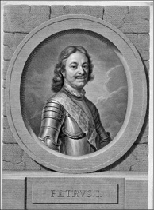
Petro’nun Rusya’yı güçlendirme arzusu, aynı zamanda kültürün de sekülerleşme ve modernleşme sürecini hızlandırmıştı. Petro, İsveç’ten ele geçirilen Baltık toprakları üzerinde kendi adını taşıyan St. Petersburg kentini inşa ettirerek, burayı başkent yaptı. Şehrin, köhnemiş geleneklerden arınmış yeni Rusya’nın sembolü olmasını istiyordu. Laik eğitimi destekledi, 30 yaşından küçük gençlerin din adamı olmasını yasakladı, batılı giyim kuşam tarzını özendirdi, alfabe ve takvimi modernleştirdi.
Petro, kendine özgü modernleşmesini uygulamaya koymadan önce bir iç isyanı bastırmak durumunda kaldı. Bunu yaparken kitleleri katletmekten çekinmedi. Böylelikle halkına modern düşüncelerine rağmen, yönetiminin mutlak bir iktidar olduğu sinyalini vermişti. Kilisenin ve soyluların taht karşısındaki konumlarını zayıflatan ve bu sınıfları kendisine tabi kılan Petro, muhaliflerine karşı sergilediği sert tutumla, hayata geçirdiği köklü değişikliklere karşı oluşan muhalefeti susturdu. Petro, eğitimin, ticaretin ve sanayinin Batılı düşünce ve metotlarla birleşmesi gerektiği düşüncesinden hareketle bir Bilimler Akademisi kurdu. Aynı zamanda Rus alfabesini sadeleştirdi ve ülkesindeki ilk gazetenin basılmasını sağladı. Öyle ki, Rusya’yı modernleştirme konusunda bazen makul sınırları da zorlayan kahramanımız, erkeklerin sakallarını kesmesini ve yargıçların Batı tarzı elbiseler giymesini bile istemişti. Bu arada sadece saç sakal ile uğramıyor, aynı zamanda, sosyal alışkanlıkları da dizayna kalkışıyordu. O zamana kadar Rusya’da hiç bilinmeyen sigara ve kahve içmek gibi bazı alışkanlıkların yaygınlaşmasını da açıktan destekledi.
Bu tepeden inmeci batılılaşma adımlarının yanı sıra Petro, Rusya’nın sınırlarını genişletebilecek ve güvenliğini sağlayabilecek bir ordu ve ülkesinin makûs talihini kırarak sıcak denizlere açılmasını sağlayacak güçlü bir donanma kurmak için hazırlıklara başlamıştı. Elliden fazla savaş ve yedi yüz destek gemisini suya indiren bir inşa hamlesi başlatarak, Rus donanmasını neredeyse sıfırdan kurdu. Bu seferberliğin karşılığını alacaktı. Donanması kısa zamanda Baltık denizinin tek hâkimi oldu ve diğer Avrupalı güçlerin karşısına dikildi.
Donanmayla işi bitince zorunlu askerlik sistemini getirdi. Buna göre her 20 haneden bir asker çıkacaktı. Petro, kendisini ordusunun büyümesine o kadar kaptırmıştı ki, oğullarından birinin doğumunu ‘yeni biri daha katıldı’ diyerek karşıladı. Rus ordusunun büyüklüğü 250 bin askeri geçince, batılı danışmanları işe koyuldu. Ordu yeniden organize edildi ve modern anlamda tatbikatlar düzenlenmeye başladı. Petro, askerlerini, Rus fabrikalarında üretilen yeni üniformalar, en modern çakmaktaşlı silahlar ve cephanelerle donattı. Subaylar için eğitimi zorunlu kıldı ve atamalarda liyakat esas alınmaya başladı.
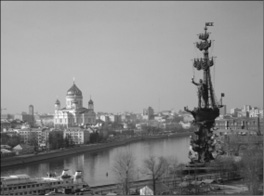
Petro’nun hayali, mimarı olduğu donanmanın denizlere açılması, Rusya’nın ticaret yolları üzerinde etkinlik kazanarak Avrupa’da süper güç olmasıydı. Karadeniz üzerinden açık denizlere çıkmaya çalışsa da başarılı olamamış, ama hayalini Baltık Denizi kıyısındaki bölgeleri ele geçirerek gerçekleştirmişti. Ruslar, ülkeyi denizlerde önemli bir güç haline getiren Petro’nun anısına, Rus donanmasının kuruluşunun 300. yıldönümünde Moskova’daki Moskova Nehri kenarında yükselen 96 metrelik bu devasa anıtı dikti.
Askerlerine mermi taşıdı
Çar, zamanının büyük kısmını ordusuyla birlikte arazide geçiriyor, sadece gerektiğinde Moskova’ya dönüyordu. Öyle ki, askerleriyle aynı karavandan yemesi, gemilerinde topçulara mermi taşıması ve o çok ünlü fizik gücünü kullanarak birkaç kez çamura saplanan top arabalarını çıkarması, onu askerlerinin gözünde bir efsane yapmıştı. Savaş tecrübesinin az olduğunu kabullenmesi Petro’nun büyük bir lider olduğunun kanıtıydı belki de. Akıllıca bir hareketle profesyonellerin orduya kumanda etmesine olanak tanıdı. Ordu modernleştirilip, donanma kurulunca, geriye tek bir şey kalmıştı: Savaşmak.
Petro, 1700 yılında İsveç’e savaş açtı. Böylelikle 21 yıl sürecek olan Great Northern (Büyük Kuzey) Savaşı başlamıştı. Başlangıçta yeni ordusu Narva’da yenilgiye uğrasa da 1708’de Poltova’da kesin bir zafer kazanacak kadar hızlı bir gelişme gösterdi. Poltova’daki zafer Petro’yu bir kez daha Osmanlı ile karşı karşıya getirecekti.
Çar Petro Sultan III. Ahmet’e karşı
Petro, İsveç Kralı XII. Charles’ı (Türkçe’de Demirbaş Şarl olarak bilinir) Poltova’da yenince, kral çareyi Osmanlı’ya sığınmakta buldu. Petro kralın peşini bırakmadı ve ordusunu Osmanlı topraklarına soktu. Bu durum Payitahtı öfkelendirmişti. Üstüne üstlük Charles, Osmanlı’nın uç sınırlarından biri olan Moldova’daki Bender Kalesi’nden Konstantinopol’a gönderdiği mektuplarla yardım isteyince, Sultan III. Ahmed, daha fazla kayıtsız kalamadı. Karadeniz ile ilgili niyetlerini saklamaya gerek duymayan Petro’ya gereken cevap verilmeli, diye düşünüyordu. Osmanlı, Çarın ilerde başlarını ağrıtabilecek büyük planlarının farkındaydı. Rusya’ya savaş ilan edildi.
Sadrazam Baltacı Mehmed Paşa kumandasındaki yüz bin kişilik Osmanlı ordusu, 9 Nisan 1711’de Petro ile hesaplaşmak üzere yola çıktı. Aynı esnada üç yüz altmış gemiden müteşekkil Osmanlı donanması da Karadeniz’e açılmıştı. Donanmanın hedefi, Azak Denizi’ndeki Rus donanmasını imha etmek ve Petro’nun daha önceden ele geçirdiği Azak Kalesi’ni geri almaktı.
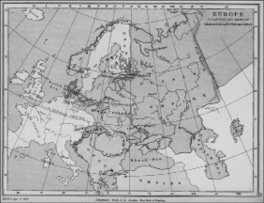
Çar Petro döneminde Rusya’nın sınırları.
İki ordu, Prut adındaki Kıpçak boyunun adını taşıyan Prut Nehri kıyısında karşılaştı. Rus ordusunun başındaki Mareşal Şermetiyef, savaşı uzaktan takip eden Petro’ya an ve an rapor veriyordu. Baltacı, Osmanlı ordusunun büyük ateş gücü ve Kırım ordusunun da yardımıyla kısa zamanda altmış bin kişilik Rus ordusunu dört bir yandan kuşattı. Günlerce süren yoğun ateşin ardından pes etme noktasına gelen Rus mareşali, Petro’nun da onayı ile Baltacıya mektup yollayarak barış teklif etti. Osmanlı’nın durmaya niyeti yoktu. Bombardıman devam etti. Bir süre sonra ikinci mektup geldi. Bu kez Osmanlı savaş şurasından teklifin kabul edilmesi kararı çıktı. Zira uzayan savaş yeniçerileri usandırmaya başlamış, firarlar ve gevşeme baş göstermişti. Üstelik Osmanlı, Ruslara bitirici darbeyi vurmak için gereken cephaneden de mahrumdu. Durumun uzun vadede aleyhlerine dönebileceğinden endişe eden Baltacı, savaşı daha fazla uzatmaya gerek görmeden Petro’nun önerisini kabul etti. 22 Temmuz 1711’de imzalanan Prut Antlaşması ile Osmanlı, Azak da dâhil olmak üzere, istediklerini almış, Petro’nun ‘büyüklüğü’ gölgelenmiş, sıcak denizlere inme hayalleri ise, bir süreliğine suya düşmüştü. Osmanlı ile Rusların anlaşmaya varması üzerine tekrar Avrupa’ya giden İsveç Kralı, Petro ile olan savaşına devam etmeye kararlıydı. 1718’de cephede ölerek bu kararlılığını gösterdi.
Rus Çarı, Karadeniz’de kaybetse de, Baltık Denizi’nde istediklerine kavuşacaktı. 1700’de Baltıklarda başlayan Büyük Kuzey Savaşı devam ediyordu. Rusların karada elde ettiği bir dizi zaferin ve İsveç donanmasının Hango’da yenilmesinin ardından savaş, İsveç’in 1721’de barış talep etmesi ve Estonya ile Livonya’nın yanı sıra kuzeyde Vyborg’a kadar Baltık kıyılarını Ruslara bırakmasıyla sona erdi. Petro, istediğini elde etmişti. Sevgili Rusyası, artık Avrupa’nın en büyük gücüydü.
Uzun süren bu savaş boyunca Petro, ordusunu ve ülkesini modernize etmeyi sürdürdü. 1712 yılında başkenti Moskova’dan ‘Batıya açılan daha iyi bir pencere’ olarak tanımladığı, kendisinin kurdurup isim babalığını yaptığı St. Petersburg’a taşıdı. Askeri harekât ve talimlerle ilgili görüşlerini standartlaştırmak için aralarında 1708 tarihli Rules of Combat (Savaş Kanunları) ve 1716 Yılının Askeri Kanunnameleri’nin de olduğu bazı kitaplar kaleme aldı. Standart bir komuta kadrosu eğitmek adına 1718’da Askeri Akademi’yi kurdu.
Modernleşme uğruna oğluna bile acımadı
Bu kadar devasa modernleşme hamlesinin elbette bir faturası olacaktı ve fatura, alışılageldik şekilde, halka kesildi. Petro halkını yüksek vergilere tabi tuttu. Bu yüzden çıkan ayaklanmalar acımasızca bastırıldı. Muhalifler iktidara karşı çıkmanın bedelini darağacında ödemek durumunda kaldı. Çar bu konuda gayet kararlıydı. 1718’de kendisine baş kaldıran öz oğlu Alexei’yi işkenceden geçirtmesi, ne kadar gözü kara olduğunu gösteriyordu. Oğlu daha sonra hapiste öldü.
İlginçtir Petro, bir yüzü ile acımasız bir diktatör profili çizerken, gerektiğinde başkası için kendi hayatından vazgeçecek kadar da diğerkâmdı. 1725 yılı başlarında adamlarına sadakatini gösteren bir olay yaşandı. Petro, buzla kaplı bir Fin nehrinde boğulmak üzere olan askerlerini kurtarmak için nehre atladı. Neticede vücut ısısının aşırı derecede düşmesi sonucu hastalandı ve bir daha iyileşmedi. Aynı yıl 8 Şubat’ta, 53 yaşında, St. Petersburg’da öldü.
Attığı temeller sadece Çarlığı değil, Sovyetleri de taşıdı
Petro, Rusya’nın topyekûn modernleştirilmesinde başarılı oldu. Orduda gerçekleştirdiği reformlarla ülkesini büyük devletler arasına soktu. Daha da önemlisi, ordusunu en iyi silahlarla donatmak için elinden geleni yaptı. Bu devasa savaş makinesini sürekli olarak silah ve cephaneyle besleyebilecek bir ekonomik altyapının temellerini de attı. Aynı zamanda bir komutan olarak, savaşlarda cephenin en önünde çarpışıp, eğitimlere katılarak askerlerinin moralini yüksek tutmaya çalıştı. Özetle Petro’nun coşkun liderliği ile birlikte organizasyon ve yöneticilik yetenekleri, Rusya’yı bir dünya gücü haline getiren bir ordu ve yönetici sınıfı doğurmuştu.
Petro’nun geride bıraktığı Çarlık Rusya’sı, bir Avrupa devi olarak iki asır boyunca etkisini sürdürdü. Petro’nun kurduğu bu sağlam rejimin nihai çöküşü, dışarıdan bir saldırı sonucu değil, kendi ülkesinde 1917’de gerçekleşecek Bolşevik Devrimi sonucu olacaktı.
Çar Petro’nun reformları olmaksızın Rusya’nın, Fransa, İngiltere ve Beyaz Rusya ile aynı ligde oynaması hiçbir zaman söz konusu olamazdı. Ve hiç şüphe yok ki, Sovyetler Birliği’nin, II. Dünya Savaşı’nda ve onu takip eden Soğuk Savaş döneminde etkisini gösterebilen bir yirminci yüzyıl süper gücü olmasında Petro’nun kurduğu sağlam altyapı rol oynamıştı.
NOTLAR
- Batılılaşma hamlesi esnasında sakal uzatmayı yasaklamış, hatta hızını alamayarak, ülkenin önde gelen soylularından bir kaçını kendisi traş etmeye kalkmıştı. Sakal bırakmakta ısrar edenleri vergiye bağladı.
- Batıda ‘Büyük Petro’ olarak bilinse de, özellikle konumuyla bağdaştırılamayan tuhaf davranışları, farklı uygulamaları ve ‘uçuk’ vizyonundan dolayı Osmanlılar kendisini ‘Deli Petro’ olarak isimlendirdi.
- Uygulamaya soktuğu kelle vergisiyle saldırgan dış politikasını finanse etti.
- 1721’de sona eren Kuzey Savaşı’ndan sonra Rusya’yı imparatorluk, kendisiniyse imparator ilan etti.
- II. Mahmud’un 1826’da orduda reform yapmak ve yenileşme adımlarını sağlama almak için yeniçeri ocağını ilga etmesi benzeri bir operasyona, kendisinden yaklaşık yüz yıl önce Petro imza atmıştı. Batılılaşmanın önünde engel olarak gördüğü, Rus ordusunun belkemiği sayılan özel nişancı birliklerini (Streltsy) 1720’de tamamen ortadan kaldırdı.
- Eşi Çariçe I. Katerina, ‘Baltacı-Katerina’ efsanesinden dolayı, Türk ‘popüler’ tarihinin en önemli simalarından biri oldu. Oysa Katerina ile Baltacı’ arasında Prut Savaşı esnasında gerçekleştiği iddia edilen buluşmayı doğrulayan hiçbir tarihi vesika ya da tanıklık söz konusu değil.
- Rus Devlet Başkanı Vladimir Putin en önde gelen Petro hayranlarından biridir.
1 Roma ordusunda yüzbaşıya tekabül eden rütbe. İncil’de İsa’yı çarmıha gerdiği söylenen askerlerdi ve bu yüzden pek sevilmezlerdi.
2 Fransa başta olmak üzere Batı Avrupa’nın büyük bir bölümüne tarihte verilen isim. Sınırları Fransa’nın yanı sıra Kuzey İtalya, Belçika, İsviçre’nin batısı, Hollanda’nın bazı bölgeleri ve Almanya’daki Ren Nehri’nin batı kıyılarındaki toprakları içine alıyordu.
3 Geleneksel yaya kıyasla boynuz gibi çeşitli maddelerle güçlendirilmiş bir yay türü. Daha çok gerilebilen ve daha güçlü bir atış kabiliyeti olan bu yayla oklar çok daha uzun mesafelere atılabiliyordu.
4 Antik Roma orijinli 3. ve 10. yüzyıllar arsında kullanılmış altın sikke.
5 İllirya: Antik çağda İlirler adı verilen boyların Balkan Yarımadası’nın batısında, Adriyatik Denizi’nin genel olarak Dalmaçya Kıyıları’nda kurdukları bölge.
6 Çift sarma (double envelopment): Hemen hemen her savaşta bir şekilde kullanılan temel savaş stratejilerinden biri. Düşman, diğer ordunun merkezine doğru ilerlerken, üzerine gelinilen ordunun dış cephesindeki birlikler, eş zamanlı olarak çift taraftan, saldıran ordunun kanatlarına hamle ederek, düşmanı kuşatır. Aynı esnada ikinci bir güç de, düşmanın arkadan gelmekte olan destek birimlerine saldırarak, kuşatma altına alınan birimle bağlantısını keser. Hava çarpışmalarında sıklıkla kullanılır.
7 Endülüs Müslümanlarına verilen isim. O vakitlerde İspanya’ya yerleşen Kuzey Afrikalı Berberîlere verilen bir sıfat olarak da kullanılmış, bazı yerlerde sadece Faslıları bazen de İspanya’daki tüm Müslümanları tanımlamak için tercih edilmiştir.
8 İspanyol Çayırı da denir. Charlemagne’nin kendi imparatorluğu ile Endülüs Emevileri arasında oluşturduğu tampon bölgeydi.
9 Mektup iddiası çok popüler olsa da kaynak olarak sadece müneccimbaşı gibi geç dönem tarihçileri gösterilir. Bununla birlikte dönemin kaynaklarında bunu doğrulayan bir bulgu yoktur. Osmanlı tarihçisi Halil İnalcık’ın 1444 buhranı üzerine yaptığı araştırmalar da mektup olayının aslının olmadığını göstermiştir.
10 Fethin detayları için bakınız: Ali Çimen, Tarihi Değiştiren Savaşlar, Timaş Yayınları, s. 161.
11 Hayat Tarih Mecmuası (1965).